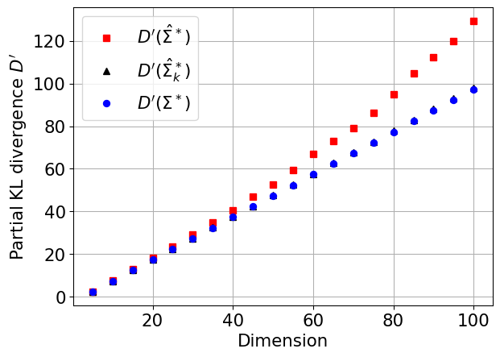
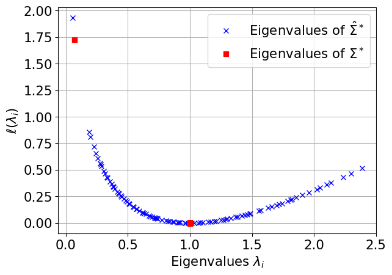
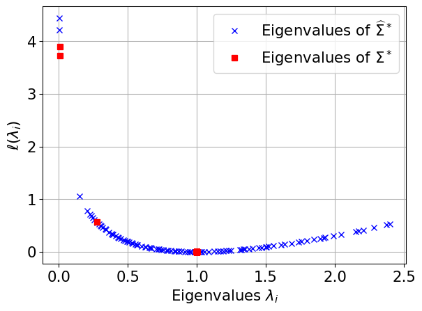

Importance sampling, High dimension, Gaussian covariance matrix, Kullback-Leibler divergence, Projection
Status
draft
Abstract
In this paper we propose a dimension-reduction strategy in order to improve the performance of importance sampling in high dimension. The idea is to estimate variance terms in a small number of suitably chosen directions. We first prove that the optimal directions, i.e., the ones that minimize the Kullback–Leibler divergence with the optimal auxiliary density, are the eigenvectors associated to extreme (small or large) eigenvalues of the optimal covariance matrix. We then perform extensive numerical experiments that show that as dimension increases, these directions give estimations which are very close to optimal. Moreover, we show that the estimation remains accurate even when a simple empirical estimator of the covariance matrix is used to estimate these directions. These theoretical and numerical results open the way for different generalizations, in particular the incorporation of such ideas in adaptive importance sampling schemes.
Hide/Show the code
import numpy as npimport scipy as spimport scipy.statsimport matplotlib.pyplot as pltfrom CEIS_vMFNM import*from IPython.display import display, Math, Latexfrom IPython.display import Markdownfrom tabulate import tabulatenp.random.seed(10)
1 Introduction
Importance Sampling (IS) is a widely considered stochastic method to estimate integrals of the form E = \int \phi f with a black-box function \phi and a probability density function (pdf) f. It rests upon the choice of an auxiliary density which, when suitably chosen, can significantly improve the situation compared to the naive Monte Carlo (MC) method (Agapiou et al. 2017), (Owen and Zhou 2000). The theoretical optimal IS density, also called zero-variance density, is defined by \phi f / E when \phi is a positive function. This density is not available in practice as it involves the unknown integral E, but a classical strategy consists in searching an optimal approximation in a parametric family of densities. By minimising a ‘’distance’’ with the optimal IS density, such as the Kullback–Leibler divergence, one can find optimal parameters in this family to get an efficient sampling pdf. Adaptive Importance Sampling (AIS) algorithms, such as the Mixture Population Monte Carlo method (Cappé et al. 2008), the Adaptive Multiple Importance Sampling method (Cornuet et al. 2012), or the Cross Entropy method (Reuven Y. Rubinstein and Kroese 2011), estimate the optimal parameters adaptively by updating intermediate parameters (Bugallo et al. 2017).
An intense research activity has made these techniques work very well, but only for moderate dimensions. In high dimension, most of these techniques actually fail to give efficient parameters for two reasons. The first one is the so-called weight degeneracy problem, which is that in high dimension, the weights appearing in the IS densities (which are self-normalized likelihood ratios) degenerate. More precisely, the largest weight takes all the mass, while all other weights are negligible so that the final estimation essentially uses only one sample, see for instance (Bengtsson, Bickel, and Li 2008) for a theoretical analysis in the related context of particle filtering. But even without likelihood ratios, such techniques may fail if they need to estimate high-dimensional parameters such as covariance matrices, whose size increases quadratically in the dimension (Ashurbekova et al. 2020), (Ledoit and Wolf 2004). The conditions under which importance sampling is applicable in high dimension are notably investigated in a reliability context in (Au and Beck 2003): it is remarked that the optimal covariance matrix should not deviate significantly from the identity matrix. (El-Laham, Elvira, and Bugallo 2019) tackle the weight degeneracy problem by applying a recursive shrinkage of the covariance matrix, which is constructed iteratively with a weighted sum of the sample covariance estimator and a biased, but more stable, estimator. Concerning the second problem of having to estimate high-dimensional parameters, the idea was recently put forth to reduce the effective dimension by only estimating these parameters (in particular the covariance matrix) in suitable directions (El Masri, Morio, and Simatos 2021), (Uribe et al. 2021). In this paper we seek to delve deeper into this idea. The main contribution of the present paper is to identify the optimal directions in the fundamental case when the parametric family is Gaussian, and perform numerical simulations in order to understand how they behave in practice. In particular, we propose directions which, in contrast to the recent paper (Uribe et al. 2021), does not require the objective function to be differentiable, and moreover optimizes the Kullback–Leibler distance with the optimal density instead of simply an upper bound on it, as in (Uribe et al. 2021). In Section 3.1 we elaborate in more details on the differences between the two approaches.
The paper is organised as follows: in Section 2 we recall the foundations of IS. In Section 3, we state our main theoretical result and we compare it with the current state-of-the-art. Section 4 presents the proof of our theoretical result; Section 5 introduces the numerical framework that we have adopted, and Section 6 presents the numerical results obtained on five different test cases to assess the efficiency of the directions that we propose. We conclude in ?@sec-Ccl with a summary and research perspectives.
2 Importance Sampling
We consider the problem of estimating the following integral:
E=\mathbb{E}_f(\phi(\mathbf{X}))=\int \phi(\mathbf{x})f(\mathbf{x})\textrm{d} \mathbf{x},
where \mathbf{X} is a random vector in \mathbb{R}^n with Gaussian standard pdf f, and \phi: \mathbb{R}^n\rightarrow\mathbb{R}_+ is a real-valued, non-negative function. If one were to relax this Gaussian standard assumption, one would need to look for covariance matrices in a different auxiliary set. The function \phi is considered as a black-box function which is potentially expensive to evaluate, which means the number of calls to \phi should be limited.
IS is a widely considered approach to reduce the variance of the classical Monte Carlo estimator of E. The idea of IS is to generate a random sample \mathbf{X}_1,\ldots,\mathbf{X}_N from an auxiliary density g, instead of f, and to compute the following estimator:
\widehat{E}_N=\frac{1}{N}\sum_{i=1}^N \phi(\mathbf{X}_i)L(\mathbf{X}_i),
\tag{1} with L=f/g the likelihood ratio, or importance weight, and the density g, called importance sampling density, is such that g(\mathbf{x})=0 implies \phi(\mathbf{x}) f(\mathbf{x})=0 for every \mathbf{x} (which makes the product \phi L well-defined). This estimator is consistent and unbiased but its accuracy strongly depends on the choice of the auxiliary density g. It is well known that the optimal choice for g is (Bucklew 2013)
g^*(\mathbf{x})=\dfrac{\phi(\mathbf{x})f(\mathbf{x})}{E}, \ \mathbf{x}\in\mathbb{R}^n.
Indeed, for this choice we have \phi L = E and so \widehat E_N is actually the deterministic estimator E. For this reason, g^* is sometimes called zero-variance density, a terminology that we will adopt here. Of course, g^* is only of theoretical interest as it depends on the unknown integral E. However, it gives an idea of good choices for the auxiliary density g, and we will seek to approximate g^* by an auxiliary density that minimizes a distance between g^* and a given parametric family of densities.
In this paper, the parametric family of densities is the Gaussian family \{g_{\mathbf{m}, \Sigma}: \mathbf{m} \in \mathbb{R}^n, \Sigma \in \mathcal{S}^+_n\}, where g_{\mathbf{m}, \Sigma} denotes the Gaussian density with mean \mathbf{m} \in \mathbb{R}^n and covariance matrix \Sigma \in \mathcal{S}^+_n with \mathcal{S}^+_n \subset \mathbb{R}^{n \times n} the set of symmetric, positive-definite matrices:
g_{\mathbf{m},\Sigma}(\mathbf{x})=\dfrac{1}{ (2\pi)^{n/2} \lvert \Sigma \rvert^{1/2}} \exp\left(-\frac{1}{2}(\mathbf{x}-\mathbf{m})^\top\Sigma^{-1}(\mathbf{x}-\mathbf{m})\right), \ \mathbf{x} \in \mathbb{R}^n.
with \lvert \Sigma \rvert the determinant of \Sigma. Moreover, we will consider the Kullback–Leibler (KL) divergence to measure a ‘’distance’’ between g^* and g_{\mathbf{m}, \Sigma}. Recall that for two densities f and h, with f absolutely continuous with respect to h, the KL divergence D(f,h) between f and h is defined by:
D(f,h)=\mathbb{E}_{f}\left[\log \left( \frac{f(\mathbf{X})}{h(\mathbf{X})} \right) \right] = \int \log \left( \frac{f(\mathbf{x})}{h(\mathbf{x})} \right)f(\mathbf{x}) \textrm{d} \mathbf{x}.
Thus, our goal is to approximate g^* by g_{\mathbf{m}^*, \Sigma^*} with the optimal mean vector \mathbf{m}^* and the optimal covariance matrix \Sigma^* given by:
(\mathbf{m}^*,\Sigma^*) = \arg\min \left\{ D(g^*,g_{\mathbf{m},\Sigma}): \mathbf{m} \in \mathbb{R}^n, \Sigma \in \mathcal{S}_n^+ \right\}.
\tag{2} In the Gaussian case of the present setting, it is well-known that \mathbf{m}^* and \Sigma^* are simply the mean and variance of the zero-variance density (Reuven Y. Rubinstein and Kroese 2011), (Reuven Y. Rubinstein and Kroese 2017):
\mathbf{m}^*=\mathbb{E}_{g^*}(\mathbf{X}) \hspace{0.5cm} \text{ and } \hspace{0.5cm} \Sigma^* = \textrm{Var}_{g^*} \left(\mathbf{X}\right).
\tag{3}
3 Main result and positioning of the paper
3.1 Projecting on a low dimensional subspace
As g^* is unknown (although, as will be considered below, we can in principle sample from it since it is known up to a multiplicative constant), the optimal parameters \mathbf{m}^* and \Sigma^* given by Equation 3 are not directly computable. Therefore, usual estimation schemes start with estimating \mathbf{m}^* and \Sigma^*, say through \widehat{\mathbf{m}}^* and \widehat{\Sigma}^*, respectively, and then use these approximations to estimate E through Equation 1 with the auxiliary density g_{\widehat{\mathbf{m}}^*, \widehat{\Sigma}^*}. Although the estimation of E with the auxiliary density g_{\mathbf{m}^*, \Sigma^*} usually provides very good results, it is well-known that in high dimension, the additional error induced by the estimations of \mathbf{m}^* and \Sigma^* severely degrades the accuracy of the final estimation (Papaioannou, Geyer, and Straub 2019), (Uribe et al. 2021). The main problem lies in the estimation of \Sigma^* which, in dimension n, involves the estimation of a quadratic (in the dimension) number of terms, namely n(n+1)/2. Recently, the idea to overcome this problem by only evaluating variance terms in a small number of influential directions was explored in (El Masri, Morio, and Simatos 2021) and (Uribe et al. 2021). In these two papers, the auxiliary covariance matrix \Sigma is modeled in the form
\Sigma = \sum_{i=1}^k (v_i-1) \mathbf{d}_i \mathbf{d}_i^\top + I_n
\tag{4} where the \mathbf{d}_i’s are the k orthonormal directions which are deemed influential. It is easy to check that \Sigma is the covariance matrix of the Gaussian vector v^{1/2}_1 Y_1 \mathbf{d}_1 + \cdots + v^{1/2}_k Y_k \mathbf{d}_k + Y_{k+1} \mathbf{d}_{k+1} + \cdots + Y_n \mathbf{d}_n where the Y_i’s are i.i.d. standard normal random variables (one-dimensional), and the n-k vectors (\mathbf{d}_{k+1}, \ldots, \mathbf{d}_n) complete (\mathbf{d}_1, \ldots, \mathbf{d}_k) into an orthonormal basis. In particular, v_i is the variance in the direction of \mathbf{d}_i, i.e., v_i = \mathbf{d}_i^\top \Sigma \mathbf{d}_i. In Equation 4, k can be considered as the effective dimension in which variance terms are estimated. In other words, in (El Masri, Morio, and Simatos 2021) and (Uribe et al. 2021), the optimal variance parameter is not sought in \mathcal{S}^+_n as in Equation 2}, but rather in the subset of matrices of the form \mathcal{L}_{n,k} = \left\{ \sum_{i=1}^k (\alpha_i-1) \frac{\mathbf{d}_i \mathbf{d}_i^\top}{\lVert \mathbf{d}_i \rVert^2} + I_n: \alpha_1, \ldots, \alpha_k >0 \ \text{ and the $\mathbf{d}_i$'s are orthogonal} \right\}. The relevant minimization problem thus becomes
(\mathbf{m}^*_k, \Sigma^*_k) = \arg\min \left\{ D(g^*,g_{\mathbf{m},\Sigma}): \mathbf{m} \in \mathbb{R}^n, \ \Sigma \in \mathcal{L}_{n,k} \right\}
\tag{5} instead of Equation 2, with the effective dimension k being allowed to be adjusted dynamically. By restricting the space in which the variance is looked up, one seeks to limit the number of variance terms to be estimated. The idea is that if the directions are suitably chosen, then the improvement of the accuracy due to the smaller error in estimating the variance terms will compensate the fact that we consider less candidates for the covariance matrix. In (El Masri, Morio, and Simatos 2021), the authors consider k = 1 and \mathbf{d}_1 = \mathbf{m}^* / \lVert \mathbf{m}^* \rVert. When f is Gaussian, this choice is motivated by the fact that, due to the light tail of the Gaussian random variable and the reliability context, the variance should vary significantly in the direction of \mathbf{m}^* and so estimating the variance in this direction can bring information. (In Section 3.4, we actually use the techniques of the present paper to provide a stronger theoretical justification of this choice, see Theorem 2 and the discussion following it). The method in (Uribe et al. 2021) is more involved: k is adjusted dynamically, while the directions \mathbf{d}_i are the eigenvectors associated to the largest eigenvalues of a certain matrix. They span a low-dimensional subspace called Failure-Informed Subspace, and the authors in (Uribe et al. 2021) prove that this choice minimizes an upper bound on the minimal KL divergence. In practice, this algorithm yields very accurate results. However, we will not consider it further in the present paper for two reasons. First, this algorithm is tailored for the reliability case where \phi = \mathbb{I}_{\{\varphi \geq 0\}}, with a function \varphi: \mathbb{R}^n \to \mathbb{R}, whereas our method is more general and applies to the general problem of estimating an integral (see for instance our test case of ?@sec-sub:payoff). Second, the algorithm in (Uribe et al. 2021) requires the evaluation of the gradient of the function \varphi. However, this gradient is not always known and can be expensive to evaluate in high dimension; in some cases, the function \varphi is even not differentiable, as will be the case in our numerical example in ?@sec-sub:portfolio. In contrast, our method makes no assumption on the form or smoothness of \phi: it does not need to assume that it is of the form \mathbb{I}_{\{\varphi \geq 0\}}, or to assume that \nabla \varphi is tractable. For completeness, whenever the algorithm of (Uribe et al. 2021) was applicable and computing the gradient of \varphi did not require any additional simulation budget, we have run it on the test cases considered here and found that it outperformed our algorithm. In more realistic settings, computing \nabla \varphi would likely increase the simulation budget, and it would be interesting to compare the two algorithms in more details to understand when this extra computation cost is worthwhile. We reserve such a question for future research and will not consider the algorithm of (Uribe et al. 2021) further, as our aim in this paper is to establish benchmark results for a general algorithm which works for any function \phi.
3.2 Main result of the paper
The main result of the present paper is to actually compute the exact value for \Sigma^*_k in Equation 5, which therefore paves the way for efficient high-dimensional estimation schemes. The statement of our result involves the following function \ell, which is represented in Figure 1:
\ell: x \in (0,\infty) \mapsto -\log(x) + x - 1.
\tag{6} In the following, (\lambda, \mathbf{d}) \in \mathbb{R} \times \mathbb{R}^n is an eigenpair of a matrix A if A\mathbf{d} = \lambda \mathbf{d} and \lVert \mathbf{d} \rVert = 1. A diagonalizable matrix has n distinct eigenpairs, say ((\lambda^*_i, \mathbf{d}^*_i), i = 1, \ldots, n), and we say that these eigenpairs are ranked in decreasing \ell-order if \ell(\lambda^*_1) \geq \cdots \geq \ell(\lambda^*_n).
Hide/Show the code
################################################################################################################################ Figure 1. Plot of the function "l"###############################################################################################################################x = np.linspace(np.finfo(float).eps,4.0,100)y =-np.log(x) + x -1# plotfig, ax = plt.subplots()ax.plot(x, y, linewidth=2.0)ax.set(xlim=(0, 4), xticks=[0,1,2,3], ylim=(0, 0.5), yticks=[0,0.5,1,1.5])plt.grid()plt.xlabel(r"$x$",fontsize=16)plt.ylabel(r"$\ell(x)$",fontsize=16)for tickLabel in plt.gca().get_xticklabels() + plt.gca().get_yticklabels(): tickLabel.set_fontsize(16)plt.show()
Figure 1: Plot of the function \ell=-\log(x) + x - 1 given by Equation 6
Theorem 1 Let (\lambda^*_i, \mathbf{d}^*_i) be the eigenpairs of \Sigma^* ranked in decreasing \ell-order. Then for 1 \leq k \leq n, the solution (\mathbf{m}^*_k, \Sigma^*_k) to Equation 5 is given by
\mathbf{m}^*_k = \mathbf{m}^* \ \text{ and } \ \Sigma^*_k = I_n + \sum_{i=1}^k \left( \lambda^*_i - 1 \right) \mathbf{d}^*_i (\mathbf{d}^*_i)^\top.
\tag{7}
For k = 1 for instance, the shape of the function \ell depicted in Figure 1 implies that \Sigma^*_1 = I_n + (\lambda^*-1) \mathbf{d}^* (\mathbf{d}^*)^\top with (\lambda^*, \mathbf{d}^*) the eigenpair of \Sigma^* with \lambda^* either the largest or the smallest eigenvalue of \Sigma^*, depending on which one maximizes \ell.
This theoretical result therefore suggests to reduce dimension by estimating eigenpairs of \Sigma^*, rank them in decreasing \ell-order and then use the k first eigenpairs (({\widehat{\lambda}}^*_i, {\widehat{\mathbf{d}}}^*_i), i = 1, \ldots, k) to build the covariance matrix \widehat \Sigma^*_k = \sum_{i=1}^k ({\widehat{\lambda}}^*_i-1) {\widehat{\mathbf{d}}}^*_i ({{\widehat{\mathbf{d}}}^*}_i)^\top + I_n and the corresponding auxiliary density. This scheme is summarized in Algorithm 1. The effective dimension k is obtained by Algorithm 2, see Section 3.3 below.
\begin{algorithm}
\caption{Algorithm suggested by Theorem 1.}
\begin{algorithmic}
\State \textbf{Data}: Sample sizes $N$ and $M$
\State \textbf{Result}: Estimation $\widehat{E}_N$ of integral $E$
\State Generate a sample $\mathbf{X}_1,\ldots,\mathbf{X}_M$ on $\mathbb{R}^n$ independently according to $g^*$
\State Estimate $\widehat{\mathbf{m}}^*$ and $\widehat{\Sigma}^*$ defined in Equation 10 and Equation 11 with this sample
\State Compute the eigenpairs $(\widehat{\lambda}^*_i, \widehat{\mathbf{d}}^*_i)$ of $\widehat{\Sigma}^*$ ranked in decreasing $\ell$-order
\State Compute the matrix $\widehat{\Sigma}^*_k = \sum_{i=1}^k ({\widehat{\lambda}}^*_i-1) {\widehat{\mathbf{d}}}^*_i ({{\widehat{\mathbf{d}}}^*}_i)^\top + I_n$ with $k$ obtained by applying Algorithm 2 with input $({\widehat{\lambda}}^*_1, \ldots, {\widehat{\lambda}}^*_n)$
\State Generate a new sample $\mathbf{X}_1,\ldots,\mathbf{X}_N$ independently from $g' = g_{\widehat{\mathbf{m}}^*,\widehat{\Sigma}^*_k}$
\State Return $\displaystyle \widehat{E}_N=\frac{1}{N}\underset{i=1}{\overset{N}{\sum}} \phi(\mathbf{X}_i)\frac{f(\mathbf{X}_i)}{g'(\mathbf{X}_i)}$
\end{algorithmic}
\end{algorithm}
Remark. The value 1 plays a particular role in Theorem 1, in that, as \ell is minimized in 1, eigenvectors with eigenvalues 1 will only be selected once all other eigenvalues will have been picked: in other words, if \lambda^*_i = 1 then \lambda^*_j = 1 for all j \geq i. The reason why 1 plays this special role is due to the form of the covariance matrix that we impose. More precisely, looking for covariance matrices in the set \mathcal{L}_{n,k} amounts to looking for covariance matrices which, once diagonalized, have one’s on the diagonal except possibly for k values (the \alpha_i’s). As k will be small, typically k = 1 or 2, this amounts to looking for covariance matrices which are perturbation of the identity. This is particularly relevant as we assume f is a standard Gaussian density. What Theorem 1 tells is that, when trying to approximate \Sigma^* by such matrices, we should first consider eigenvectors with eigenvalues as different as possible from 1, the ‘’distance’’ to 1 being measured by \ell. If one was imposing a different form on \Sigma^*_k (which can be interesting if the distribution f is not standardized), then a different result would arise. For instance, if one was looking for matrices where the ‘’default’’ choice would be some \lambda > 0 for the diagonal entries that are not estimated, i.e., a matrix of the form \sum_i (\alpha_i-\lambda) \mathbf{d}_i \mathbf{d}_i^\top + \lambda I_n, then eigenpairs would be ranked according to the function \ell(\cdot/\lambda), meaning that one would look for eigenvectors associated to eigenvalues as different as possible from \lambda.
As mentioned above, we assume in the first step of Algorithm 1 that we can sample according to g^*. Since g^* is known up to a multiplicative constant, this is a reasonable assumption as classical techniques such as importance sampling with self-normalized weights or Markov Chain Monte–Carlo (MCMC) can be applied in this case (see for instance (Chan and Kroese 2012), (Grace, Kroese, and Sandmann 2014)). In this paper, we choose to apply a basic rejection method that yields perfect independent samples from g^*, possibly at the price of a high computational cost. As the primary goal of this paper is to understand whether the \mathbf{d}^*_i’s are indeed good projection directions, this computational cost to generate from g^* is not relevant for us and therefore not taken into account. Possible improvements to relax this assumption are discussed in the conclusion of the paper.
3.3 Choice of the number of dimensions k
The choice of the effective dimension k, i.e., the number of projection directions considered, is important. If it is close to n, then the matrix \widehat{\Sigma}^*_k will be close to \widehat{\Sigma}^* which is the situation we want to avoid in the first place. On the other hand, setting k=1 in all cases may be too simple and lead to suboptimal results. In practice however, this is often a good choice. In order to adapt k dynamically, we consider a simple method based on the value of the KL divergence. Given the eigenvalues \lambda_1, \ldots, \lambda_n ranked in decreasing \ell-order, we look for the maximal gap in the sequence (\ell(\lambda_1), \ldots, \ell(\lambda_n)). This allows to choose k such that \sum_{i=1}^k \ell(\lambda_i) is close to \sum_{i=1}^n \ell(\lambda_i) which is equal, up to an additive constant, to the minimal KL divergence (see Equation 9 below). The precise method is described in Algorithm 2.
\begin{algorithm}
\caption{Choice of the number of dimensions}
\begin{algorithmic}
\State \textbf{Data}: Sequence of positive numbers $\lambda_1, \ldots, \lambda_n$ in decreasing $\ell$-order
\State \textbf{Result}: Number of selected dimensions $k$
\State Compute the increments $\delta_i = \ell(\lambda_{i+1}) - \ell(\lambda_i)$ for $i=1\ldots n-1$
\State Return $k=\arg\max \delta_i$, the index of the maximum of the differences.
\end{algorithmic}
\end{algorithm}
3.4 Theoretical result concerning the projection on \mathbf{m}^*
In (El Masri, Morio, and Simatos 2021), the authors propose to project on the mean \mathbf{m}^* of the optimal auxiliary density g^*. Numerically, this algorithm is shown to perform well, but only a very heuristic explanation based on the light tail of the Gaussian distribution is provided to motivate this choice. It turns out that the techniques used in the proof of Theorem 1 can shed light on why projecting on \mathbf{m}^* may indeed be a good idea. Let us first state our theoretical result, and then explain why it justifies the idea of projecting on \mathbf{m}^*.
Theorem 2 Consider \Sigma \in \mathcal{L}_{n,1} of the form \Sigma = I_n + (\alpha - 1) \mathbf{d} \mathbf{d}^\top with \alpha > 0 and \lVert \mathbf{d} \rVert = 1. Then the minimizer in (\alpha, \mathbf{d}) of the KL divergence between f and g_{\mathbf{m}^*, \Sigma} is (1+\lVert m^*\rVert^2, \mathbf{m}^* / \lVert \mathbf{m}^* \rVert): \left( 1+\lVert \mathbf{m}^*\rVert^2, \mathbf{m}^* / \lVert \mathbf{m}^* \rVert \right) = \arg \min_{\alpha, \mathbf{d}} \left\{ D(f, g_{\mathbf{m}^*, I_n + (\alpha - 1) \mathbf{d} \mathbf{d}^\top}): \alpha > 0, \ \lVert \mathbf{d} \rVert = 1 \right\}.
In other words, \mathbf{m}^* appears as an optimal projection direction when one seeks to minimize the KL divergence between f and the Gaussian density with mean \mathbf{m}^* and covariance of the form I_n + (\alpha - 1) \mathbf{d} \mathbf{d}^\top. Let us now explain why this minimization problem is indeed relevant, and why choosing an auxiliary density which minimizes this KL divergence may indeed lead to an accurate estimation. The justification deeply relies on the recent results by Chatterjee and Diaconis (Chatterjee and Diaconis 2018).
As mentioned above, in a reliability context where one seeks to estimate a small probability p = \mathbb{P}(\mathbf{X} \in A), Theorem 1.3 in (Chatterjee and Diaconis 2018) shows that D(g^*, g) governs the sample size required for an accurate estimation of p: more precisely, the estimation is accurate if the sample size is larger than e^{D(g^*, g)}, and inaccurate otherwise. This motivates the rationale for minimizing the KL divergence with g^*.
However, in high dimension, importance sampling is known to fail because of the weight degeneracy problem whereby \max_i L_i / \sum_i L_i \approx 1, with the L_i’s the unnormalized importance weights, or likelihood ratios: L_i = f(\mathbf{X}_i) / g(\mathbf{X}_i) with the \mathbf{X}_i’s i.i.d. drawn according to g. Theorem 2.3 in (Chatterjee and Diaconis 2018) shows that the weight degeneracy problem is avoided if the empirical mean of the likelihood ratios is close to 1, and for this, Theorem 1.1 in (Chatterjee and Diaconis 2018) shows that the sample size should be larger than e^{D(f, g)}. In other words, these results suggest that the KL divergence with g^* governs the sample size for an accurate estimation of p, while the KL divergence with f governs the weight degeneracy problem.
In light of these results, it becomes natural to consider the KL divergence with f and not only g^*. Of course, minimizing D(f, g_{\mathbf{m}, \Sigma}) without constraints on \mathbf{m} and \Sigma is trivial since g_{\mathbf{m}, \Sigma} = f for \mathbf{m} = 0 and \Sigma = I_n. However, these choices are the ones we want to avoid in the first place, and so it makes sense to impose some constraints on \mathbf{m} and \Sigma. If one keeps in mind the other objective of getting close to g^*, then the choice \mathbf{m} = \mathbf{m}^* becomes very natural, and we are led, when \Sigma \in \mathcal{L}_{n,1} is sought as a rank-1 perturbation of the identity, to considering the optimization problem of Theorem 2.
Lemma 1 Let f be the density of the standard Gaussian vector in dimension n, \phi: \mathbb{R}^n \to \mathbb{R}_+ and g_* = f \phi / E with E = \int f \phi. Then for any \mathbf{m} and any \Sigma of the form \Sigma = I_n + \sum_i (\alpha_i - 1) \mathbf{d}_i \mathbf{d}_i^\top with \alpha_i > 0 and the \mathbf{d}_i’s orthonormal, we have
D(g^*, g_{\mathbf{m}, \Sigma}) = \frac{1}{2} \sum_i \left( \log \alpha_i - \left(1 - \frac{1}{\alpha_i} \right) \mathbf{d}_i^\top \Sigma^* \mathbf{d}_i \right) + \frac{1}{2} (\mathbf{m} - \mathbf{m}^*)^\top \Sigma^{-1} (\mathbf{m} - \mathbf{m}^*)\\
- \frac{1}{2} \lVert \mathbf{m}^* \rVert^2 - \log E + \mathbb{E}_{g^*}(\log \phi(\mathbf{X})).
\tag{8}
Proof (of Lemma 1). For any \mathbf{m} \in \mathbb{R}^n and \Sigma \in \mathcal{S}^+_n, we have by definition D(g^*, g_{\mathbf{m}, \Sigma}) = \mathbb{E}_{g^*} \left( \log \left( \frac{g^*(\mathbf{X})}{g_{\mathbf{m}, \Sigma}(\mathbf{X})} \right) \right) = \mathbb{E}_{g^*} \left( \log \left( \frac{\frac{\phi(\mathbf{X}) e^{-\frac{1}{2} \lVert \mathbf{X} \rVert^2}}{E(2\pi)^{d/2}}}{ \frac{e^{-\frac{1}{2} (\mathbf{X} - \mathbf{m})^\top \Sigma^{-1} (\mathbf{X} - \mathbf{m})}}{(2\pi)^{d/2} \lvert \Sigma \rvert^{1/2}} } \right) \right) and so
D(g^*, g_{\mathbf{m}, \Sigma}) = - \frac{1}{2} \mathbb{E}_{g^*}(\lVert \mathbf{X} \rVert^2) + \frac{1}{2} \mathbb{E}_{g^*} \left( (\mathbf{X} - \mathbf{m})^\top \Sigma^{-1} (\mathbf{X} - \mathbf{m}) \right) + \frac{1}{2} \log \lvert \Sigma \rvert\\
- \log E + \mathbb{E}_{g^*}(\log \phi(\mathbf{X})).
Because \mathbb{E}_{g^*}(\mathbf{X}) = \mathbf{m}^*, we have \mathbb{E}_{g^*}(\lVert \mathbf{X} \rVert^2) = \mathbb{E}_{g^*}(\lVert \mathbf{X} - \mathbf{m}^* \rVert^2) + \lVert \mathbf{m}^* \rVert^2 and
\mathbb{E}_{g^*} \left( (\mathbf{X} - \mathbf{m})^\top \Sigma^{-1} (\mathbf{X} - \mathbf{m}) \right) = \mathbb{E}_{g^*} \left( (\mathbf{X} - \mathbf{m}^*)^\top \Sigma^{-1} (\mathbf{X} - \mathbf{m}^*) \right)\\
+ (\mathbf{m} - \mathbf{m}^*)^\top \Sigma^{-1} (\mathbf{m} - \mathbf{m}^*).
In the following derivations, we use the linearity of the trace and of the expectation, which make these two operators commute, as well as the identity a^\top b = \textrm{tr}(a b^\top) for any two vectors a and b. With this caveat, we obtain
\mathbb{E}_{g^*}\left[ \lVert \mathbf{X} - \mathbf{m}^* \rVert^2 \right] = \mathbb{E}_{g^*} \left[ \textrm{tr}((\mathbf{X} - \mathbf{m}^*) (\mathbf{X} - \mathbf{m}^*)^\top) \right] = \textrm{tr} (\Sigma^*)
and we obtain with similar arguments \mathbb{E}_{g^*}( (\mathbf{X} - \mathbf{m}^*)^\top \Sigma^{-1} (\mathbf{X} - \mathbf{m}^*) ) = \textrm{tr} ( \Sigma^{-1} \Sigma^*). Consider now \Sigma = I_n + \sum_i (\alpha_i - 1) \mathbf{d}_i \mathbf{d}_i^\top with \alpha_i > 0 and the \mathbf{d}_i’s orthonormal. Then the eigenvalues of \Sigma potentially different from 1 are the \alpha_i’s (\alpha_i is the eigenvalue associated with \mathbf{d}_i), so that \log \lvert \Sigma \rvert = \sum_i \log \alpha_i.
Moreover, we have \Sigma^{-1} = I_n - \sum_i \beta_i \mathbf{d}_i \mathbf{d}_i^\top with \beta_i = 1 - 1/\alpha_i and so
\textrm{tr}(\Sigma^{-1} \Sigma^*) = \textrm{tr}(\Sigma^*) - \sum_i \beta_i \mathbf{d}_i^\top \Sigma^* \mathbf{d}_i.
Gathering the previous relation, we finally obtain the desired result.
Proof (of Theorem 1). From Equation 8 we see that the only dependency of D(g^*, g_{\mathbf{m}, \Sigma}) in \mathbf{m} is in the quadratic term (\mathbf{m} - \mathbf{m}^*)^\top \Sigma^{-1} (\mathbf{m} - \mathbf{m}^*). As \Sigma is definite positive, this term is \geq 0, and so it is minimized for \mathbf{m} = \mathbf{m}^*. Next, we see that the derivative in \alpha_i is given by (here and in the sequel, we see D(g^*, g_{\mathbf{m}, \Sigma}) as a function of \mathbf{v} = (\alpha_i)_i and \mathbf{d} = (\mathbf{d}_i)_i) \dfrac{\partial D}{\partial \alpha_i}(\mathbf{v}, \mathbf{d}) = \dfrac{1}{\alpha_i} - \frac{1}{\alpha_i^2} \mathbf{d}_i^\top \Sigma^* \mathbf{d}_i = \frac{1}{\alpha_i^2} \left( \alpha_i - \mathbf{d}_i^\top \Sigma^* \mathbf{d}_i \right). Thus, for fixed \mathbf{d}, D is decreasing in \alpha_i for \alpha_i < \mathbf{d}_i^\top \Sigma^* \mathbf{d}_i and then increasing for \alpha_i > \mathbf{d}_i^\top \Sigma^* \mathbf{d}_i, which shows that, for fixed \mathbf{d}, it is minimized for \alpha_i = \mathbf{d}_i^\top \Sigma^* \mathbf{d}_i. For this value (and \mathbf{m} = \mathbf{m}^*) we have
D(g^*, g_{\mathbf{m}^*, \Sigma}) = \sum_{i=1}^k \left[ \log(\mathbf{d}_i^\top \Sigma^* \mathbf{d}_i) + 1 - \mathbf{d}_i^\top \Sigma^* \mathbf{d}_i \right] + C = -\sum_{i=1}^k \ell(\mathbf{d}_i^\top \Sigma^* \mathbf{d}_i) + C
\tag{9} with C = - \frac{1}{2} \lVert \mathbf{m}^* \rVert^2 - \log E + \mathbb{E}_{g^*}(\log \phi(\mathbf{X})) independent from the \mathbf{d}_i’s. Since \ell is decreasing and then increasing, it is clear from this expression that in order to minimize D, one must choose the \mathbf{d}_i’s in order to either maximize or minimize \mathbf{d}_i^\top \Sigma^* \mathbf{d}_i, whichever maximizes \ell. Since the variational characterization of eigenvalues shows that eigenvectors precisely solve this problem, we get the desired result.
Proof (of Theorem 2). In Equation 8, the \mathbf{m}^* and the \Sigma^* that appear in the right-hand side are the mean and variance of the density g^* considered in the first argument of the Kullback–Leibler divergence. In particular, if we apply Equation 8 with \phi \equiv 1, we have g^* = f, and the \mathbf{m}^* and \Sigma^* of the right-hand side become 0 and I_n, respectively, so that
D(f, g_{\mathbf{m}, \Sigma}) = \frac{1}{2} \sum_i \left( \log \alpha_i - \left(1 - \frac{1}{\alpha_i} \right) \right) + \frac{1}{2} \mathbf{m}^\top \Sigma^{-1} \mathbf{m}.
Now, if we consider \mathbf{m} = \mathbf{m}^* and \Sigma = I + (\alpha - 1) \mathbf{d} \mathbf{d}^\top, we obtain (using \Sigma^{-1} = I - (1-1/\alpha) \mathbf{d} \mathbf{d}^\top as mentioned in the proof of Lemma 1)
D(f, g_{\mathbf{m}^*, \Sigma}) = \frac{1}{2} \left( \log \alpha - \left(1 - \frac{1}{\alpha} \right) \left( 1 + (\mathbf{d}^\top \mathbf{m}^*)^2 \right) \right) + \frac{1}{2} \lVert \mathbf{m}^* \rVert^2.
We have seen in the proof of Theorem 1 that the function x \mapsto \log x + (1/x-1)\gamma is minimized for x = \gamma where it takes the value -\ell(\gamma): D(f, g_{\mathbf{m}^*, \Sigma}) is therefore minimized for \alpha = 1 + (\mathbf{d}^\top \mathbf{m}^*)^2 and for this value, we have
D(f, g_{\mathbf{m}^*, \Sigma}) = - \frac{1}{2} \ell(1 + (\mathbf{d}^\top \mathbf{m}^*)^2) + \frac{1}{2} \lVert \mathbf{m}^* \rVert^2.
As \ell is increasing in [1, \infty), this last quantity is minimized by maximizing (\mathbf{d}^\top \mathbf{m}^*)^2, which is obtained for \mathbf{d} = \mathbf{m}^* / \lVert \mathbf{m}^* \rVert. The result is proved.
5 Framework for the numerical results
5.1 General framework
The objective of the numerical simulations is to evaluate the impact of the choice of the covariance matrix on the estimation accuracy of a high dimensional integral E. We compare in this section the estimation results for different choices of the auxiliary covariance matrix when the IS auxiliary density is Gaussian. To extend this comparison, we also compute the results when the IS auxiliary density is chosen with the von Mises–Fisher– Nakagami (vMFN) model recently proposed in (Papaioannou, Geyer, and Straub 2019) for high dimensional probability estimation.
In the following section we test these different models of auxiliary densities on five test cases, where f is a standard Gaussian density. This choice is not a theoretical limitation as we can in principle always come back to this case by transforming the vector \mathbf{X} with isoprobabilistic transformations (see for instance (Hohenbichler and Rackwitz 1981), (Liu and Der Kiureghian 1986)).
The precise numerical framework that we will consider to assess the efficiency of the different auxiliary models is as follows. We assume first that M i.i.d. random samples \mathbf{X}_1,\ldots,\mathbf{X}_M distributed from g^* are available from rejection sampling. From these samples, the parameters of the Gaussian and of the vMFN auxiliary density are computed to get an auxiliary density g'. Finally, N samples are generated from g' to provide an estimation of E with IS. This procedure is summarized by the following stages:
Generate a sample \mathbf{X}_1,\ldots,\mathbf{X}_M independently according to g^*;
From \mathbf{X}_1,\ldots,\mathbf{X}_M, compute the parameters of the auxiliary parametric density g';
Generate a new sample \mathbf{X}_1,\ldots,\mathbf{X}_N independently from g';
Estimate E with \widehat{E}_N=\frac{1}{N}\underset{i=1}{\overset{N}{\sum}} \phi(\mathbf{X}_i)\frac{f(\mathbf{X}_i)}{g'(\mathbf{X}_i)}.
The number of samples M and N are respectively set to M=500 and N=2000. This procedure is then repeated 50 times to provide a mean estimation \widehat{E} of E. In the result tables, for each auxiliary density g' we report the corresponding value for the relative error \widehat{E}/ E-1 and the coefficient of variation of the 50 iterations (the empirical standard deviation divided by E). As was established in the proof of Theorem 1, the KL divergence is, up to an additive constant, equal to D'(\Sigma) = \log \lvert \Sigma \rvert + \textrm{tr}(\Sigma^* \Sigma^{-1}) which we will refer to as partial KL divergence. In the result tables, we also report thus the mean value of D'(\Sigma) to analyse the relevancy of the auxiliary density g_{\widehat{\mathbf{m}}^*, \Sigma} for these six choices of covariance matrix \Sigma. The next sections specify the different parameters of g' for the Gaussian model and for the vMFN model we have considered in the simulations.
5.2 Choice of the auxiliary density g' for the Gaussian model
The goal is to get benchmark results to assess whether one can improve estimations of Gaussian IS auxiliary density by projecting the covariance matrix \Sigma^* in the proposed directions \mathbf{d}^*_i. The algorithm that we study here (Algorithms 1+2) aims more precisely at understanding whether:
projecting can improve the situation with respect to the empirical covariance matrix;
the \mathbf{d}^*_i’s are good candidates, in particular compared to the choice \mathbf{m}^* suggested in (El Masri, Morio, and Simatos 2021);
what is the impact in making errors in estimating the eigenpairs (\lambda^*_i, \mathbf{d}^*_i).
Let us define the estimate \widehat{\mathbf{m}}^* of \mathbf{m}^* from the M i.i.d. random samples \mathbf{X}_1,\ldots,\mathbf{X}_M distributed from g^* with
\widehat{\mathbf{m}}^* = \frac{1}{M}\sum_{i=1}^M \mathbf{X}_i.
\tag{10} In our numerical test cases, we will compare six different choices of Gaussian auxiliary distributions g' with mean \widehat{\mathbf{m}}^* and the following covariance matrices (see Table 1):
\Sigma^*: the optimal covariance matrix given by Equation 3;
\widehat{\Sigma}^*: the empirical estimation of \Sigma^* given by
\widehat{\Sigma}^* = \frac{1}{M}\sum_{i=1}^M (\mathbf{X}_i-\widehat{\mathbf{m}}^*)(\mathbf{X}_i-\widehat{\mathbf{m}}^*)^\top.
\tag{11}
The four other covariance matrices considered in the numerical simulations are of the form \sum_{i=1}^k (v_i-1) \mathbf{d}_i \mathbf{d}^\top_i + I_n where v_i is the variance of \widehat{\Sigma}^* in the direction \mathbf{d}_i, v_i = \mathbf{d}_i^\top \widehat{\Sigma}^* \mathbf{d}_i. The considered choice of k and \mathbf{d}_i gives the following covariance matrices:
{\widehat{\Sigma}^{\text{}}_\text{opt}} is obtained by choosing \mathbf{d}_i = \mathbf{d}^*_i of Theorem 1, which is supposed to be perfectly known from \Sigma^* and k is computed with Algorithm 2;
{\widehat{\Sigma}^{\text{+d}}_\text{opt}} is obtained by choosing \mathbf{d}_i = {\widehat{\mathbf{d}}}^*_i the i-th eigenvector of \widehat{\Sigma}^* (in \ell-order), which is an estimation of \mathbf{d}^*_i, and k is computed with Algorithm 2;
{\widehat{\Sigma}^{\text{}}_\text{mean}} is obtained by choosing k = 1 and \mathbf{d}_1 = \mathbf{m}^* / \lVert \mathbf{m}^* \rVert;
{\widehat{\Sigma}^{\text{+d}}_\text{mean}} is obtained by choosing k = 1 and \mathbf{d}_1 = {\widehat{\mathbf{m}}}^* / \lVert {\widehat{\mathbf{m}}}^* \rVert, where \widehat{\mathbf{m}}^* given by Equation 10.
The matrices {\widehat{\Sigma}^{\text{}}_\text{opt}} and {\widehat{\Sigma}^{\text{}}_\text{mean}} use the estimation \widehat{\Sigma}^* but the actual directions \mathbf{d}^*_i or \mathbf{m}^*, while the matrices {\widehat{\Sigma}^{\text{+d}}_\text{opt}} and {\widehat{\Sigma}^{\text{+d}}_\text{mean}} involve an additional estimation of the directions. By definition, \Sigma^* will give optimal results, while results for \widehat{\Sigma}^* will deteriorate as the dimension increases, which is the well-known behavior which we try to improve. Moreover, for {\widehat{\Sigma}^{\text{}}_\text{mean}} and {\widehat{\Sigma}^{\text{}}_\text{opt}}, the projection directions, if not known analytically, are obtained by a brute force Monte Carlo scheme with a very high simulation budget. Finally, we emphasize that Algorithm 1 corresponds to estimating and projecting on the \mathbf{d}^*_i’s, and so the matrix \widehat{\Sigma}^*_k of Algorithm 1 is equal to the matrix {\widehat{\Sigma}^{\text{+d}}_\text{opt}}, i.e., \widehat{\Sigma}^*_k = {\widehat{\Sigma}^{\text{+d}}_\text{opt}}.
Table 1: Presentation of the six covariance matrices considered in the numerical examples. Except \Sigma^*, the five other matrices involve one or two estimations: \widehat \Sigma^* is the empirical estimation of \Sigma^* given by Equation 11. The four others are obtained by projecting \widehat \Sigma^* on: (i) the optimal directions \mathbf{d}^*_i for {\widehat{\Sigma}^{\text{}}_\text{opt}}; (ii) estimations \widehat{\mathbf{d}}^*_i of the optimal directions \mathbf{d}^*_i for {\widehat{\Sigma}^{\text{+d}}_\text{opt}}; (iii) \mathbf{m}^* for {\widehat{\Sigma}^{\text{}}_\text{mean}}; (iv) the estimation \widehat{\mathbf{m}}^* in Equation 3 of \mathbf{m}^* for {\widehat{\Sigma}^{\text{+d}}_\text{mean}}. The subscript therefore indicates the choice for the projection direction, while the superscript +d indicates whether these directions are estimated or not.
\Sigma^*
\widehat{\Sigma}^*
{\widehat{\Sigma}^{\text{}}_\text{opt}}
{\widehat{\Sigma}^{\text{}}_\text{mean}}
{\widehat{\Sigma}^{\text{+d}}_\text{opt}}
{\widehat{\Sigma}^{\text{+d}}_\text{mean}}
Initial covariance matrix
\Sigma^*
\widehat \Sigma^*
\widehat \Sigma^*
\widehat \Sigma^*
\widehat \Sigma^*
\widehat \Sigma^*
Projection directions (exact or estimated)
-
-
Exact
Exact
Estimated
Estimated
Choice for the projection direction
None
None
Opt
Mean
Opt
Mean
5.3 Choice of the auxiliary density g' for the von Mises–Fisher–Nakagami model
Von Mises–Fisher–Nakagami (vMFN) distributions were proposed in (Papaioannou, Geyer, and Straub 2019) as an alternative to the Gaussian parametric family to perform IS for high dimensional probability estimation. A random vector \mathbf{X} drawn according to the vMFN distribution can be written as \mathbf{X}=R {\bf A} where {\bf A}=\frac{\mathbf{X}}{\lVert\mathbf{X}\rVert} is a unit random vector following the von Mises-Fisher distribution, and R=\lVert\mathbf{X}\rVert is a positive random variable with a Nakagami distribution; further, R and \bf A are independent. The vMFN pdf can be written as
g_\text{vMFN}({\bf x})= g_\text{N}(\lVert{\bf x}\rVert, p, \omega) \times g_\text{vMF} \left( \frac{{\bf x}}{\lVert{\bf x}\rVert}, {\boldsymbol{\mu}}, \kappa \right).
\tag{12} The density g_\text{N}(\lVert {\bf x}\rVert, p, \omega) is the Nakagami distribution with shape parameter p \geq 0.5 and a spread parameter \omega>0 defined by
g_\text{N}(\lVert {\bf x}\rVert, p, \omega) = \frac{2 p^p}{\Gamma(p) \omega^p} \lVert {\bf x}\rVert^{2p-1} \exp\left( - \frac{p}{\omega}\lVert {\bf x}\rVert^2\right)
and the density g_\text{vMF}(\frac{{\bf x}}{\lVert{\bf x}\rVert}, {\boldsymbol{\mu}}, \kappa) is the von Mises-Fisher distribution, given by g_\text{vMF} \left( \frac{{\bf x}}{\lVert{\bf x}\rVert}, {\boldsymbol{\mu}}, \kappa \right) = C_n(\kappa) \exp\left(\kappa {\boldsymbol{\mu}}^T \frac{{\bf x}}{\lVert{\bf x}\rvert\rvert} \right),
where C_n(\kappa) is a normalizing constant, \boldsymbol{\mu} is a mean direction \boldsymbol{\mu} (with \lvert\lvert\boldsymbol{\mu}\rvert\rvert=1) and \kappa > 0 is a concentration parameter \kappa>0.
Choosing a vMFN distribution therefore amounts to choosing the parameters p, \omega, {\boldsymbol{\mu}}, and \kappa. There are therefore n+3 parameters to estimate, which is a significant reduction compared to the \frac{n(n+3)}{2} required parameters of the Gaussian model with full covariance matrix.
Following (Papaioannou, Geyer, and Straub 2019), given a sample \mathbf{X}_1,\ldots,\mathbf{X}_M distributed from g^*, the parameters \omega, p, \boldsymbol{\mu} and \kappa are set in the following way in order to define g': \widehat{\omega}=\frac{1}{M}\sum_{i=1}^M \lVert\mathbf{X}_i\rVert^2 \ \text{ and } \ \widehat{p}=\frac{\widehat{\omega}^2}{\widehat{\tau}-\widehat{\omega}^2} \text{ with } \widehat{\tau}=\frac{1}{M}\sum_{i=1}^M \lVert\mathbf{X}_i\rVert^4
and \widehat{\boldsymbol{\mu}}=\frac{\sum_{i=1}^M \frac{\mathbf{X}_i}{\lvert\lvert\mathbf{X}_i\rvert\rvert}}{\lvert\lvert\sum_{i=1}^M \frac{\mathbf{X}_i}{\lvert\lvert\mathbf{X}_i\rvert\rvert} \rvert\rvert} \ \text{ and } \ \widehat{\kappa}=\dfrac{n\widehat{\chi}-\widehat{\chi}^3}{1-\widehat{\chi}^2} \text{ with } \widehat{\chi} = \min \left( \left \lVert \frac{1}{M}\sum_{i=1}^M \frac{\mathbf{X}_i}{\lVert \mathbf{X}_i \rVert} \right \rVert, 0.95 \right).
6 Numerical results on five test cases
The proposed numerical framework is applied on three examples that are often considered to assess the performance of importance sampling algorithms and also two test cases from the area of financial mathematics. Extended simulation results are given in the supplementary material associated with this article.
6.1 Test case 1: one-dimensional optimal projection
We consider a test case where all computations can be made exactly. This is a classical example of rare event probability estimation, often used to test the robustness of a method in high dimension. It is given by \phi(\mathbf{x})=\mathbb{I}_{\{\varphi(\mathbf{x})\geq 0\}} with \varphi the following affine function:
\varphi: \mathbf{x}=(x_1,\ldots,x_n)\in\mathbb{R}^n \mapsto\underset{j=1}{\overset{n}{\sum}} x_j-3\sqrt{n}.
\tag{13} The quantity of interest E is defined as E=\int_{\mathbb{R}^n} \phi(\mathbf{x}) f(\mathbf{x}) \textrm{d}\mathbf{x} = \mathbb{P}_f(\varphi(\mathbf{X})\geq 0)\simeq 1.35\cdot 10^{-3} for all n where the density f is the standard n-dimensional Gaussian distribution. Here, the zero-variance density is g^*(\mathbf{x})=\dfrac{f(\mathbf{x})\mathbb{I}_{\{\varphi(\mathbf{x})\geq 0\}}}{E}, and the optimal parameters \mathbf{m}^* and \Sigma^* in Equation 3 can be computed exactly, namely \mathbf{m}^* = \alpha \textbf{1} with \alpha = e^{-9/2}/(E(2\pi)^{1/2}) and \textbf{1} = \frac{1}{\sqrt n} (1,\ldots,1) \in \mathbb{R}^n the normalized constant vector, and \Sigma^* =(v-1) \mathbf{1} \mathbf{1}^\top + I_n with v=3\alpha-\alpha^2+1.
6.1.1 Evolution of the partial KL divergence and spectrum
Figure 2 (a) represents the evolution as the dimension varies between 5 and 100 of the partial KL divergence D' for three different choices of covariance matrix: the optimal matrix \Sigma^*, its empirical estimation \widehat{\Sigma}^* and the estimation \widehat{\Sigma}^*_k of the optimal lower-dimensional covariance matrix. We can notice that the partial KL divergence for \widehat{\Sigma}^* grows much faster than the other two, and that the partial KL divergence for \widehat{\Sigma}^*_k remains very close to the optimal value D'(\Sigma^*). As the KL divergence is a proxy for the efficiency of the auxiliary density (it is for instance closely related to the number of samples required for a given precision (Chatterjee and Diaconis 2018)), this suggests that using \widehat{\Sigma}^*_k will provide results close to optimal.
We now check this claim. As \Sigma^* = (v-1) \textbf{1} \textbf{1}^\top + I_n, its eigenpairs are (v, \textbf{1}) and (1,\mathbf{d}_i) where the \mathbf{d}_i’s form an orthonormal basis of the space orthogonal to the space spanned by \textbf{1}. In particular, (v, \textbf{1}) is the largest (in \ell-order) eigenpair of \Sigma^* and \Sigma^*_k = \Sigma^* for any k \geq 1.
In practice, we do not use this theoretical knowledge and \Sigma^*, \Sigma^*_k and the eigenpairs are estimated. The six covariance matrices introduced in Section 5.2 and in which we are interested are as follows:
{\widehat{\Sigma}^{\text{}}_\text{opt}} and {\widehat{\Sigma}^{\text{}}_\text{mean}} are equal and given by (\widehat \lambda-1) \textbf{1} \textbf{1}^\top + I_n with \widehat{\lambda} = \textbf{1}^\top \widehat{\Sigma}^* \textbf{1}. This amounts to assuming that the projection direction \textbf{1} is perfectly known, whereas the variance in this direction is estimated;
{\widehat{\Sigma}^{\text{+d}}_\text{opt}} = (\widehat{\lambda} - 1) \widehat{\mathbf{d}} {\widehat{\mathbf{d}}}^\top + I_n with (\widehat{\lambda}, \widehat{\mathbf{d}}) the smallest eigenpair of \widehat{\Sigma}^*. The difference with the previous case is that we do not assume anymore that the optimal projection direction \textbf{1} is known, and so it needs to be estimated;
{\widehat{\Sigma}^{\text{+d}}_\text{mean}} = (\widehat{\lambda} - 1) \frac{\widehat{\mathbf{m}}^* {(\widehat{\mathbf{m}}^*)}^\top}{\lVert \widehat{\mathbf{m}}^* \rVert^2} + I_n with \widehat{\mathbf{m}}^* given by Equation 10 and \widehat{\lambda} = \frac{{(\widehat{\mathbf{m}}^*)}^\top \widehat{\Sigma}^* \widehat{\mathbf{m}}^*}{\lVert \widehat{\mathbf{m}}^* \rVert^2}. Here we assume that \mathbf{m}^* is a good projection direction, but is unknown and therefore needs to be estimated.
Note that in the particularly simple case considered here, both \widehat{\mathbf{m}}^* / \lVert \widehat{\mathbf{m}}^* \rVert and \widehat{\mathbf{d}} are estimators of \textbf{1} but they are obtained by different methods. In the next example we will consider a case where \mathbf{m}^* is not an optimal projection direction as given by Theorem 1.
Figure 2 (b) represents the images by \ell of the eigenvalues of \Sigma^* and \widehat{\Sigma}^*. This picture carries a very important insight. We notice that the estimation of most eigenvalues is poor: indeed, all the blue crosses except the leftmost one are meant to be estimator of 1, whereas we see that they are more or less uniformly spread between 0.4 and 1.8. This means that the variance terms in the corresponding directions are poorly estimated, which could be the explanation on why the use of \widehat{\Sigma}^* gives an inaccurate estimation. But what we remark also is that the function \ell is quite flat around one: as a consequence, although the eigenvalues offer significant variability, this variability is smoothed by the action of \ell. Indeed, the images of the eigenvalues by \ell take values between 0 and 0.4 and have smaller variability. Moreover, \ell(x) increases sharply as x approaches 0 and thus efficiently distinguishes between the two leftmost estimated eigenvalues and is able to separate them.
Hide/Show the code
################################################################################################################################ Figure 2. Evolution of the partial KL divergence and spectrum of the eigenvalues for the test case 1###############################################################################################################################def Somme(x): n=np.shape(x)[1]return(np.sum(x,axis=1)-3*np.sqrt(n))n=100# dimensionphi=SommeE=sp.stats.norm.cdf(-3) # exact value of the integralDKL=np.zeros(20)DKLp=np.zeros(20)DKLm=np.zeros(20)DKLstar=np.zeros(20)M=300for d inrange(5,n+1,5):# Mstar alpha=np.exp(-3**2/2)/(E*np.sqrt(2*np.pi)) Mstar=alpha*np.ones(d)/np.sqrt(d)# Sigmastar vstar=3*alpha-alpha**2+1 Sigstar= (vstar-1)*np.ones((d,d))/d+np.eye(d)## g*-sample VA0=sp.stats.multivariate_normal(mean=np.zeros(d),cov=np.eye(d)) X0=VA0.rvs(size=M*1000) ind=(phi(X0)>0) X=X0[ind,:] X=X[:M,:] # g*-sample of size M## estimated mean and covariance mm=np.mean(X,axis=0) Xc=(X-mm).T sigma =Xc @ Xc.T/np.shape(Xc)[1]## projection with the eigenvalues of sigma Eig=np.linalg.eigh(sigma) logeig=np.sort(np.log(Eig[0])-Eig[0]) delta=np.zeros(len(logeig)-1)for j inrange(len(logeig)-1): delta[j]=abs(logeig[j]-logeig[j+1]) k=np.argmax(delta)+1# biggest gap between the l(lambda_i) indi=[]for l inrange(k): indi.append(np.where(np.log(Eig[0])-Eig[0]==logeig[l])[0][0]) P1=np.array(Eig[1][:,indi[0]],ndmin=2).T for l inrange(1,k): P1=np.concatenate((P1,np.array(Eig[1][:,indi[l]],ndmin=2).T),axis=1) # matrix of inflential directions of projection diagsi=np.diag(Eig[0][indi]) sig_opt_d=P1.dot((diagsi-np.eye(k))).dot(P1.T)+np.eye(d) DKL[int((d-5)/5)]=np.log(np.linalg.det(sigma))+np.sum(np.diag(Sigstar.dot(np.linalg.inv(sigma)))) DKLp[int((d-5)/5)]=np.log(np.linalg.det(sig_opt_d))+np.sum(np.diag(Sigstar.dot(np.linalg.inv(sig_opt_d)))) DKLstar[int((d-5)/5)]=np.log(np.linalg.det(Sigstar))+d#### plot of partial KL divergenceplt.plot(range(5,105,5),DKL,'rs',label=r"$D'(\hat{\Sigma}^*)$")plt.plot(range(5,105,5),DKLp,'k^',label=r"$D'(\hat{\Sigma}^*_k)$")plt.plot(range(5,105,5),DKLstar,'bo',label=r"$D'(\Sigma^*)$")plt.grid()plt.xlabel('Dimension',fontsize=16)plt.ylabel(r"Partial KL divergence $D'$",fontsize=16)plt.legend(fontsize=16)for tickLabel in plt.gca().get_xticklabels() + plt.gca().get_yticklabels(): tickLabel.set_fontsize(16)plt.show()#### plot of the eigenvaluesEig1=np.linalg.eigh(sigma)logeig1=np.log(Eig1[0])-Eig1[0]+1Table_eigv=np.zeros((n,2))Table_eigv[:,0]=Eig1[0]Table_eigv[:,1]=-logeig1Eigst=np.linalg.eigh(Sigstar)logeigst=np.log(Eigst[0])-Eigst[0]+1Table_eigv_st=np.zeros((n,2))Table_eigv_st[:,0]=Eigst[0]Table_eigv_st[:,1]=-logeigstplt.grid()plt.xlabel(r"Eigenvalues $\lambda_i$",fontsize=16)plt.ylabel(r"$\ell(\lambda_i)$",fontsize=16)for tickLabel in plt.gca().get_xticklabels() + plt.gca().get_yticklabels(): tickLabel.set_fontsize(16)plt.plot(Table_eigv[:,0],Table_eigv[:,1],'bx',label=r"Eigenvalues of $\hat{\Sigma}^*$")plt.plot(Table_eigv_st[:,0],Table_eigv_st[:,1],'rs',label=r"Eigenvalues of $\Sigma^*$")plt.legend(fontsize=16)plt.show()

(a) Evolution of the partial KL divergence as the dimension increases, with the optimal covariance matrix \Sigma^* (blue circles), the sample covariance \widehat{\Sigma}^* (red squares), and the projected covariance \widehat{\Sigma}^*_k (black triangles).

(b) Computation of \ell(\lambda_i) for the eigenvalues of \Sigma^* (red squares) and \widehat{\Sigma}^* (blue crosses) in dimension n = 100.
Figure 2: Partial KL divergence and spectrum for the function \phi = \mathbb{I}_{\varphi \geq 0} with \varphi the linear function given by Equation 13.
6.1.2 Numerical results
We report in Table 2 the numerical results for the six different matrices and the vMFN model for the dimension n=100. The column \Sigma^* gives the optimal results, while the column \widehat{\Sigma}^* corresponds to the results that we are trying to improve. Comparing these two columns, we notice as expected that the estimation of E with \widehat{\Sigma}^* is significantly degraded. Compared to the first column \Sigma^*, the third and fourth column with {\widehat{\Sigma}^{\text{}}_\text{opt}} = {\widehat{\Sigma}^{\text{}}_\text{mean}} correspond to the best projection direction \textbf{1} (as for \Sigma^*) but estimating the variance in this direction (instead of the true variance) with \textbf{1}^\top \widehat{\Sigma}^* \textbf{1}. This choice performs very well, with numerical results similar to the optimal ones. This can be understood since in this case, both {\widehat{\Sigma}^{\text{}}_\text{opt}} and \Sigma^* are of the form \alpha \textbf{1} \textbf{1}^\top + I_n and so estimating {\widehat{\Sigma}^{\text{}}_\text{opt}} requires only a one-dimensional estimation (namely, the estimation of \alpha). Next, the last two columns {\widehat{\Sigma}^{\text{+d}}_\text{opt}} and {\widehat{\Sigma}^{\text{+d}}_\text{mean}} highlight the impact of having to estimate the projection directions in addition to the variance since these two matrices are of the form \widehat \alpha \widehat{\textbf{1}} {\widehat{\textbf{1}}}^\top + I_n with both \widehat{\alpha} (the variance term) and \widehat{\textbf{1}} (the direction) being estimated. We observe that these matrices yield results which are close to optimal and greatly improve the estimation obtained using \widehat{\Sigma}^*. In dimension 100, the coefficient of variation is around 4% for {\widehat{\Sigma}^{\text{+d}}_\text{mean}}, and around 5% for \widehat{\Sigma}^{\text{+d}}_{\text{opt}}, compared to 2.5% for \widehat{\Sigma}^*.
Moreover, we observe that {\widehat{\Sigma}^{\text{+d}}_\text{mean}} gives slightly better results than {\widehat{\Sigma}^{\text{+d}}_\text{opt}}. We suggest that this is because \widehat{\mathbf{m}}^* / \lVert \widehat{\mathbf{m}}^* \rVert is a better estimator of \textbf{1} than the eigenvector of \widehat{\Sigma}^*. Indeed, evaluating \widehat{\mathbf{m}}^* requires the estimation of n parameters, whereas \widehat{\Sigma}^* needs around n^2/2 parameters to estimate, so the eigenvector is finally more noisy than the mean vector. In the last column, we present the vMFN results that are similar to the estimation obtained with {\widehat{\Sigma}^{\text{+d}}_\text{mean}}.
Thus, the proposed idea improves significantly the probability estimation in high dimension. But we see that the method taken in (El Masri, Morio, and Simatos 2021) with the projection \mathbf{m}^* is at least as much efficient in this example where we need only a one-dimensional projection. The next case shows that the projection on more than one direction can outperform the one-dimensional projection on \mathbf{m}^*.
Hide/Show the code
################################################################################################################################ Table 2. Numerical comparison on test case 1###############################################################################################################################from IPython.display import display, Math, Latexfrom IPython.display import Markdownfrom tabulate import tabulaten=100# dimensionphi=Sommedef mypi(X): n=np.shape(X)[1] f0=sp.stats.multivariate_normal.pdf(X,mean=np.zeros(n),cov=np.eye(n))return((phi(X)>0)*f0)N=2000M=500B=50# number of runsEopt=np.zeros(B)EIS=np.zeros(B)Eprj=np.zeros(B)Eprm=np.zeros(B)Eprjst=np.zeros(B)Eprmst=np.zeros(B)Evmfn=np.zeros(B)SI=[]SIP=[]SIPst=[]SIM=[]SIMst=[]# Mstaralpha=np.exp(-3**2/2)/(E*np.sqrt(2*np.pi))Mstar=alpha*np.ones(d)/np.sqrt(d)# Sigmastarvstar=3*alpha-alpha**2+1Sigstar= (vstar-1)*np.ones((d,d))/d+np.eye(d)Eigst=np.linalg.eigh(Sigstar) logeigst=np.sort(np.log(Eigst[0])-Eigst[0]) deltast=np.zeros(len(logeigst)-1)for i inrange(len(logeigst)-1): deltast[i]=abs(logeigst[i]-logeigst[i+1]) ## choice of the number of dimensionk_st=np.argmax(deltast)+1indist=[]for i inrange(k_st): indist.append(np.where(np.log(Eigst[0])-Eigst[0]==logeigst[i])[0][0]) P1st=np.array(Eigst[1][:,indist[0]],ndmin=2).Tfor i inrange(1,k_st): P1st=np.concatenate((P1st,np.array(Eigst[1][:,indist[i]],ndmin=2).T),axis=1) # matrix of influential directions #np.random.seed(0)for i inrange(B):############################# Estimation of the matrices## g*-sample of size M VA=sp.stats.multivariate_normal(np.zeros(n),np.eye(n)) X0=VA.rvs(size=M*1000) ind=(phi(X0)>0) X1=X0[ind,:] X=X1[:M,:] R=np.sqrt(np.sum(X**2,axis=1)) Xu=(X.T/R).T ## estimated gaussian mean and covariance mm=np.mean(X,axis=0) Xc=(X-mm).T sigma =Xc @ Xc.T/np.shape(Xc)[1] SI.append(sigma)## von Mises Fisher parameters normu=np.sqrt(np.mean(Xu,axis=0).dot(np.mean(Xu,axis=0).T)) mu=np.mean(Xu,axis=0)/normu mu=np.array(mu,ndmin=2) chi=min(normu,0.95) kappa=(chi*n-chi**3)/(1-chi**2)## Nakagami parameters omega=np.mean(R**2) tau4=np.mean(R**4) pp=omega**2/(tau4-omega**2)### Eig=np.linalg.eigh(sigma) logeig=np.sort(np.log(Eig[0])-Eig[0]) delta=np.zeros(len(logeig)-1)for j inrange(len(logeig)-1): delta[j]=abs(logeig[j]-logeig[j+1]) k=np.argmax(delta)+1 indi=[]for l inrange(k): indi.append(np.where(np.log(Eig[0])-Eig[0]==logeig[l])[0][0]) P1=np.array(Eig[1][:,indi[0]],ndmin=2).Tfor l inrange(1,k): P1=np.concatenate((P1,np.array(Eig[1][:,indi[l]],ndmin=2).T),axis=1) diagsi=np.diag(Eig[0][indi]) sig_opt_d=P1.dot((diagsi-np.eye(k))).dot(P1.T)+np.eye(n) SIP.append(sig_opt_d)### diagsist=P1st.T.dot(sigma).dot(P1st) sig_opt=P1st.dot(diagsist-np.eye(k_st)).dot(P1st.T)+np.eye(n) SIPst.append(sig_opt)### Norm_mm=np.linalg.norm(mm) normalised_mm=np.array(mm,ndmin=2).T/Norm_mm vhat=normalised_mm.T.dot(sigma).dot(normalised_mm) sig_mean_d=(vhat-1)*normalised_mm.dot(normalised_mm.T)+np.eye(n) SIM.append(sig_mean_d)### Norm_Mstar=np.linalg.norm(Mstar) normalised_Mstar=np.array(Mstar,ndmin=2).T/Norm_Mstar vhatst=normalised_Mstar.T.dot(sigma).dot(normalised_Mstar) sig_mean=(vhatst-1)*normalised_Mstar.dot(normalised_Mstar.T)+np.eye(n) SIMst.append(sig_mean)############################################# Estimation of the integral### Xop=sp.stats.multivariate_normal.rvs(mean=mm, cov=Sigstar,size=N) wop=mypi(Xop)/sp.stats.multivariate_normal.pdf(Xop,mean=mm, cov=Sigstar) Eopt[i]=np.mean(wop) ### Xis=sp.stats.multivariate_normal.rvs(mean=mm, cov=sigma,size=N) wis=mypi(Xis)/sp.stats.multivariate_normal.pdf(Xis,mean=mm, cov=sigma) EIS[i]=np.mean(wis)### Xpr=sp.stats.multivariate_normal.rvs(mean=mm, cov=sig_opt_d,size=N) wpr=mypi(Xpr)/sp.stats.multivariate_normal.pdf(Xpr,mean=mm, cov=sig_opt_d) Eprj[i]=np.mean(wpr)### Xpm=sp.stats.multivariate_normal.rvs(mean=mm, cov=sig_mean_d,size=N) wpm=mypi(Xpm)/sp.stats.multivariate_normal.pdf(Xpm,mean=mm, cov=sig_mean_d) Eprm[i]=np.mean(wpm)### Xprst=sp.stats.multivariate_normal.rvs(mean=mm, cov=sig_opt,size=N) wprst=mypi(Xprst)/sp.stats.multivariate_normal.pdf(Xprst,mean=mm, cov=sig_opt) Eprjst[i]=np.mean(wprst)### Xpmst=sp.stats.multivariate_normal.rvs(mean=mm, cov=sig_mean,size=N) wpmst=mypi(Xpmst)/sp.stats.multivariate_normal.pdf(Xpmst,mean=mm, cov=sig_mean) Eprmst[i]=np.mean(wpmst)### Xvmfn = vMFNM_sample(mu, kappa, omega, pp, 1, N) Rvn=np.sqrt(np.sum(Xvmfn**2,axis=1)) Xvnu=Xvmfn.T/Rvn h_log=vMF_logpdf(Xvnu,mu.T,kappa)+nakagami_logpdf(Rvn,pp,omega) A = np.log(n) + np.log(np.pi ** (n /2)) - sp.special.gammaln(n /2+1) f_u =-A f_chi = (np.log(2) * (1- n /2) + np.log(Rvn) * (n -1) -0.5* Rvn **2- sp.special.gammaln(n /2)) f_log = f_u + f_chi W_log = f_log - h_log wvmfn=(phi(Xvmfn)>0)*np.exp(W_log) Evmfn[i]=np.mean(wvmfn)### KL divergences dkli=np.zeros(B)dklp=np.zeros(B)dklm=np.zeros(B)dklpst=np.zeros(B)dklmst=np.zeros(B)dklpca=np.zeros(B)for i inrange(B): dkli[i]=np.log(np.linalg.det(SI[i]))+sum(np.diag(Sigstar.dot(np.linalg.inv(SI[i])))) dklp[i]=np.log(np.linalg.det(SIP[i]))+sum(np.diag(Sigstar.dot(np.linalg.inv(SIP[i])))) dklm[i]=np.log(np.linalg.det(SIM[i]))+sum(np.diag(Sigstar.dot(np.linalg.inv(SIM[i])))) dklpst[i]=np.log(np.linalg.det(SIPst[i]))+sum(np.diag(Sigstar.dot(np.linalg.inv(SIPst[i])))) dklmst[i]=np.log(np.linalg.det(SIMst[i]))+sum(np.diag(Sigstar.dot(np.linalg.inv(SIMst[i]))))Tabresult=np.zeros((3,7)) # table of resultsTabresult[0,0]=np.log(np.linalg.det(Sigstar))+nTabresult[0,1]=np.mean(dkli)Tabresult[0,2]=np.mean(dklpst)Tabresult[0,3]=np.mean(dklmst)Tabresult[0,4]=np.mean(dklp)Tabresult[0,5]=np.mean(dklm)Tabresult[0,6]=NoneTabresult[1,0]=np.mean(Eopt-E)/E*100Tabresult[1,1]=np.mean(EIS-E)/E*100Tabresult[1,2]=np.mean(Eprjst-E)/E*100Tabresult[1,3]=np.mean(Eprmst-E)/E*100Tabresult[1,4]=np.mean(Eprj-E)/E*100Tabresult[1,5]=np.mean(Eprm-E)/E*100Tabresult[1,6]=np.mean(Evmfn-E)/E*100Tabresult[2,0]=np.sqrt(np.mean((Eopt-E)**2))/E*100Tabresult[2,1]=np.sqrt(np.mean((EIS-E)**2))/E*100Tabresult[2,2]=np.sqrt(np.mean((Eprjst-E)**2))/E*100Tabresult[2,3]=np.sqrt(np.mean((Eprmst-E)**2))/E*100Tabresult[2,4]=np.sqrt(np.mean((Eprj-E)**2))/E*100Tabresult[2,5]=np.sqrt(np.mean((Eprm-E)**2))/E*100Tabresult[2,6]=np.sqrt(np.mean((Evmfn-E)**2))/E*100Tabresult=np.round(Tabresult,1)table=[["D'",Tabresult[0,0],Tabresult[0,1],Tabresult[0,2],Tabresult[0,3],Tabresult[0,4],Tabresult[0,5],Tabresult[0,6]], ["Relative error (\%)",Tabresult[1,0],Tabresult[1,1],Tabresult[1,2],Tabresult[1,3],Tabresult[1,4],Tabresult[1,5],Tabresult[1,6]], ["Coefficient of variation (\%)",Tabresult[2,0],Tabresult[2,1],Tabresult[2,2],Tabresult[2,3],Tabresult[2,4],Tabresult[2,5],Tabresult[2,6]]]Markdown(tabulate( table, headers=["","$\Sigma^*$", "$\hat{\Sigma}^*$", "$\hat{\Sigma}_{opt}$", "$\hat{\Sigma}_{mean}$", "${\hat{\Sigma}^{+d}_{opt}}$", "$\hat{\Sigma}^{+d}_{mean}$", "vMFN"], tablefmt="pipe"))
Table 2: Numerical comparison of the estimation of E \approx 1.35\cdot 10^{-3} considering the Gaussian model with the six covariance matrices defined in Section 5.2 and the vFMN model, when \phi = \mathbb{I}_{{\varphi\geq 0}} with \varphi the linear function given by Equation 13. As explained in the text, {\widehat{\Sigma}^{\text{}}_\text{mean}} and {\widehat{\Sigma}^{\text{}}_\text{opt}} are actually equal in this case.
\Sigma^*
\hat{\Sigma}^*
\hat{\Sigma}_{opt}
\hat{\Sigma}_{mean}
{\hat{\Sigma}^{+d}_{opt}}
\hat{\Sigma}^{+d}_{mean}
vMFN
D’
97.3
111.9
97.4
97.4
97.7
97.6
nan
Relative error (%)
-0.3
-36.5
-0.6
-0.1
0
-0.1
-0.2
Coefficient of variation (%)
2.5
59.4
2.6
2.8
8.4
3.1
3.7
6.2 Test case 2: projection in 2 directions
The second test case is again a probability estimation, i.e., it is of the form \phi = \mathbb{I}_{\{\varphi \geq 0\}} with now the function \varphi having some quadratic terms:
\varphi: \mathbf{x}=(x_1,\ldots,x_n) \in \mathbb{R}^n \mapsto x_1 - 25 x_2^2 - 30 x_3^2 - 1.
\tag{14} The quantity of interest E is defined as E=\int_{\mathbb{R}^n} \phi(\mathbf{x}) f(\mathbf{x}) \textrm{d}\mathbf{x} = \mathbb{P}_f(\varphi(\mathbf{X})\geq 0) for all n where the density f is the standard n-dimensional Gaussian distribution. This function is motivated in part because \mathbf{m}^* and \mathbf{d}^*_1 are different and also because Algorithm 2 chooses two projection directions. Thus, this is an example where {\widehat{\Sigma}^{\text{}}_\text{mean}} and {\widehat{\Sigma}^{\text{}}_\text{opt}} are significantly different.
6.2.1 Evolution of the partial KL divergence and spectrum
We check on Figure 3 (a) that the partial KL divergence obeys the same behavior as for the previous example, namely the one associated with \widehat{\Sigma}^* increases much faster than the ones associated with \Sigma^* and \widehat \Sigma^*_k, which again suggests that projecting can improve the situation. Since the function \varphi only depends on the first three variables and is even in x_2 and x_3, one gets that \mathbf{m}^* = \alpha \textbf{e}_1 with \alpha = \mathbb{E}(X_1 \mid X_1 \geq 25 X^2_2 + 30 X^2_3 + 1) \approx 1.9 (here and in the sequel, \textbf{e}_i denotes the ith canonical vector of \mathbb{R}^n, i.e., all its coordinates are 0 except the i-th one which is equal to one), and that \Sigma^* is diagonal with \Sigma^* =
\begin{pmatrix}
\lambda_1 & 0 & 0 & 0 & \cdots & 0 \\
0 & \lambda_2 & 0 & 0 & \cdots & 0 \\
0 & 0 & \lambda_3 & 0 & \cdots & 0 \\
0 & 0 & 0 & 1 & \cdots & 0 \\
\vdots & \vdots & \vdots & \vdots & \ddots & \vdots \\
0 & 0 & 0 & 0 & \cdots & 1 \\
\end{pmatrix}.
Note that the off-diagonal elements of the submatrix (\Sigma^*_{ij})_{1 \leq i, j \leq 3} are indeed 0 since they result from integrating an odd function of an odd random variable with an even conditioning. For instance, if F(x) = \mathbb{P}(30 X^2_3 + 1 \leq x), then by conditioning on (X_1, X_3) we obtain
\Sigma^*_{12} = \mathbb{E} \left( (X_1 - \alpha) X_2 \mid X_1 - 25 X_2^2 \geq 30 X^2_3 + 1 \right)\\
= \frac{1}{E} \mathbb{E} \left[ (X_1 - \alpha) \mathbb{E} \left( X_2 F(X_1 - 25 X^2_2) \mid X_1 \right) \right]
which is 0 as x_2 F(x_1 - x^2_2) is an odd function of x_2 for fixed x_1, and X_2 has an even density.
We can numerically compute \lambda_1 \approx 0.278, \lambda_2 \approx 0.009 and \lambda_3 \approx 0.0075. These values correspond to the red squares in Figure 3 (b) which shows that the smallest eigenvalues are properly estimated. Moreover, Algorithm 2 selects the two largest eigenvalues, which have the highest \ell-values. These two eigenvalues thus correspond to the eigenvectors \mathbf{e}_2 and \mathbf{e}_3, and so we see that on this example, the optimal directions predicted by Theorem 1 are significantly different (actually, orthogonal) from \mathbf{m}^* which is proportional to \textbf{e}_1.
Hide/Show the code
################################################################################################################################ Figure 3. Evolution of the partial KL divergence and spectrum of the eigenvalues for the test case 2################################################################################################################################E=1.51*10**-3def parabol(X): n=np.shape(X)[1]return(X[:,0]-25*X[:,1]**2-30*X[:,2]**2-1)bigsample=1*10**8phi=parabolVA0=sp.stats.multivariate_normal(mean=np.zeros(3),cov=np.eye(3))X0=VA0.rvs(size=bigsample)ind=(phi(X0)>0)X=X0[ind,:]E=1.51*10**-3# reference value of the integralMstar_dim3=np.zeros(3)Mstar_dim3[0]=np.mean(X,axis=0)[0] # accurate value of optimal mean in dimension 3Xc=(X-Mstar_dim3).TSigstar_dim3=Xc @ Xc.T/np.shape(Xc)[1] # accurate value of optimal covariance in dimension 3DKL=np.zeros(20)DKLp=np.zeros(20)DKLm=np.zeros(20)DKLstar=np.zeros(20)M=300for d inrange(5,n+1,5):# Mstar Mstar=np.zeros(d) Mstar[:3]=Mstar_dim3# Sigmastar Sigstar=np.eye(d) Sigstar[:3,:3]=Sigstar_dim3## g*-sample VA0=sp.stats.multivariate_normal(mean=np.zeros(d),cov=np.eye(d)) X0=VA0.rvs(size=M*1000) ind=(phi(X0)>0) X=X0[ind,:] X=X[:M,:]## estimated mean and covariance mm=np.mean(X,axis=0) Xc=(X-mm).T sigma =Xc @ Xc.T/np.shape(Xc)[1]## projection with the eigenvalues of sigma Eig=np.linalg.eigh(sigma) logeig=np.sort(np.log(Eig[0])-Eig[0]) delta=np.zeros(len(logeig)-1)for j inrange(len(logeig)-1): delta[j]=abs(logeig[j]-logeig[j+1]) k=np.argmax(delta)+1# biggest gap between the l(lambda_i) indi=[]for l inrange(k): indi.append(np.where(np.log(Eig[0])-Eig[0]==logeig[l])[0][0]) P1=np.array(Eig[1][:,indi[0]],ndmin=2).T for l inrange(1,k): P1=np.concatenate((P1,np.array(Eig[1][:,indi[l]],ndmin=2).T),axis=1) # matrix od influential directions of projections diagsi=np.diag(Eig[0][indi]) sig_opt_d=P1.dot((diagsi-np.eye(k))).dot(P1.T)+np.eye(d) DKL[int((d-5)/5)]=np.log(np.linalg.det(sigma))+np.sum(np.diag(Sigstar.dot(np.linalg.inv(sigma)))) DKLp[int((d-5)/5)]=np.log(np.linalg.det(sig_opt_d))+np.sum(np.diag(Sigstar.dot(np.linalg.inv(sig_opt_d)))) DKLstar[int((d-5)/5)]=np.log(np.linalg.det(Sigstar))+d#### plot of partial KL divergenceplt.plot(range(5,105,5),DKL,'rs',label=r"$D'(\hat{\Sigma}^*)$")plt.plot(range(5,105,5),DKLp,'k^',label=r"$D'(\hat{\Sigma}^*_k)$")plt.plot(range(5,105,5),DKLstar,'bo',label=r"$D'(\Sigma^*)$")plt.grid()plt.xlabel('Dimension',fontsize=16)plt.ylabel(r"Partial KL divergence $D'$",fontsize=16)plt.legend(fontsize=16)for tickLabel in plt.gca().get_xticklabels() + plt.gca().get_yticklabels(): tickLabel.set_fontsize(16)plt.show()#### plot of the eigenvaluesEig1=np.linalg.eigh(sigma)logeig1=np.log(Eig1[0])-Eig1[0]+1Table_eigv=np.zeros((n,2))Table_eigv[:,0]=Eig1[0]Table_eigv[:,1]=-logeig1Eigst=np.linalg.eigh(Sigstar)logeigst=np.log(Eigst[0])-Eigst[0]+1Table_eigv_st=np.zeros((n,2))Table_eigv_st[:,0]=Eigst[0]Table_eigv_st[:,1]=-logeigstplt.grid()plt.xlabel(r"Eigenvalues $\lambda_i$",fontsize=16)plt.ylabel(r"$\ell(\lambda_i)$",fontsize=16)for tickLabel in plt.gca().get_xticklabels() + plt.gca().get_yticklabels(): tickLabel.set_fontsize(16)plt.plot(Table_eigv[:,0],Table_eigv[:,1],'bx',label=r"Eigenvalues of $\hat{\Sigma}^*$")plt.plot(Table_eigv_st[:,0],Table_eigv_st[:,1],'rs',label=r"Eigenvalues of $\Sigma^*$")plt.legend(fontsize=16)plt.show()
(a) Evolution of the partial KL divergence as the dimension increases, with the optimal covariance matrix \Sigma^* (blue circles), the sample covariance \widehat{\Sigma}^* (red squares), and the projected covariance \widehat{\Sigma}^*_k (black triangles).

(b) Computation of \ell(\lambda_i) for the eigenvalues of \Sigma^* (red squares) and \widehat{\Sigma}^* (blue crosses) in dimension n = 100.
Figure 3: Partial KL divergence and spectrum for the function \phi = \mathbb{I}_{\varphi \geq 0} with \varphi given by Equation 14. in dimension n=100. Left: same behavior as for the first test case. Right: we now have two eigenvalues that stand out, and the behavior of \ell is such that Algorithm 2 selects k = 2 which corresponds to the leftmost two.
6.2.2 Numerical results
The numerical results of our simulations are presented in Table 3. We remark as before that, when using \widehat{\Sigma}^*, the accuracy quickly deteriorates as the dimension increases as shows the coefficient of variation of 84 \% in dimension n = 100. In contrast, {\widehat{\Sigma}^{\text{}}_\text{opt}} leads to very accurate results, which remain close to optimal up to the same dimension n = 100. This behavior is to compare with the evolution of the relative KL divergence: contrary to \widehat{\Sigma}^*, {\widehat{\Sigma}^{\text{}}_\text{opt}} gives a partial KL divergence close to optimal in dimension n = 100. This confirms that the KL divergence is indeed a good proxy to assess the relevance of an auxiliary density.
It is also interesting to note that the direction \mathbf{m}^* improves the situation compared to not projecting (column {\widehat{\Sigma}^{\text{}}_\text{mean}} compared to \widehat{\Sigma}^*), but using {\widehat{\Sigma}^{\text{}}_\text{opt}} gives significantly better results, with for instance a coefficient of variation around 3 \% for {\widehat{\Sigma}^{\text{}}_\text{opt}} and around 25 \% for {\widehat{\Sigma}^{\text{}}_\text{mean}} in dimension n = 100. Thus, this confirms our theoretical result that the \mathbf{d}^*_i’s are good directions on which to project.
Finally, we notice that performing estimations of the projection directions instead of taking the true ones (columns {\widehat{\Sigma}^{\text{+d}}_\text{opt}} vs {\widehat{\Sigma}^{\text{}}_\text{opt}}) slightly degrades the situation, making the coefficient of variation increase from 3 to 7 \% even if the accuracy remains satisfactory. The vMFN model is also not really adapted to this example as it gives results similar to {\widehat{\Sigma}^{\text{}}_\text{mean}}. Gaussian density family are more able to fit g^* than vMFN parametric model in this test case.
Hide/Show the code
################################################################################################################################ Table 3. Numerical comparison on test case 2###############################################################################################################################n=100# dimensionphi=paraboldef mypi(X): n=np.shape(X)[1] f0=sp.stats.multivariate_normal.pdf(X,mean=np.zeros(n),cov=np.eye(n))return((phi(X)>0)*f0)N=2000M=500B=50# number of runsEopt=np.zeros(B)EIS=np.zeros(B)Eprj=np.zeros(B)Eprm=np.zeros(B)Eprjst=np.zeros(B)Eprmst=np.zeros(B)Evmfn=np.zeros(B)SI=[]SIP=[]SIPst=[]SIM=[]SIMst=[]bigsample=1*10**8VA0=sp.stats.multivariate_normal(mean=np.zeros(3),cov=np.eye(3))X0=VA0.rvs(size=bigsample)ind=(phi(X0)>0)X=X0[ind,:]E=1.51*10**-3# reference value of the integralMstar_dim3=np.zeros(3)Mstar_dim3[0]=np.mean(X,axis=0)[0] # accurate value of optimal mean in dimension 3Xc=(X-Mstar_dim3).TSigstar_dim3=Xc @ Xc.T/np.shape(Xc)[1] # accurate value of optimal covariance in dimension 3# MstarMstar=np.zeros(n)Mstar[:3]=Mstar_dim3# SigmastarSigstar=np.eye(n)Sigstar[:3,:3]=Sigstar_dim3Eigst=np.linalg.eigh(Sigstar) logeigst=np.sort(np.log(Eigst[0])-Eigst[0]) deltast=np.zeros(len(logeigst)-1)for i inrange(len(logeigst)-1): deltast[i]=abs(logeigst[i]-logeigst[i+1]) ## choice of the number of dimensionk_st=np.argmax(deltast)+1indist=[]for i inrange(k_st): indist.append(np.where(np.log(Eigst[0])-Eigst[0]==logeigst[i])[0][0]) P1st=np.array(Eigst[1][:,indist[0]],ndmin=2).T for i inrange(1,k_st): P1st=np.concatenate((P1st,np.array(Eigst[1][:,indist[i]],ndmin=2).T),axis=1) # matrix of influential directions#np.random.seed(0)for i inrange(B):############################# Estimation of the matrices## g*-sample of size M VA=sp.stats.multivariate_normal(np.zeros(n),np.eye(n)) X0=VA.rvs(size=M*1000) ind=(phi(X0)>0) X1=X0[ind,:] X=X1[:M,:] R=np.sqrt(np.sum(X**2,axis=1)) Xu=(X.T/R).T ## estimated gaussian mean and covariance mm=np.mean(X,axis=0) Xc=(X-mm).T sigma =Xc @ Xc.T/np.shape(Xc)[1] SI.append(sigma)## von Mises Fisher parameters normu=np.sqrt(np.mean(Xu,axis=0).dot(np.mean(Xu,axis=0).T)) mu=np.mean(Xu,axis=0)/normu mu=np.array(mu,ndmin=2) chi=min(normu,0.95) kappa=(chi*n-chi**3)/(1-chi**2)## Nakagami parameters omega=np.mean(R**2) tau4=np.mean(R**4) pp=omega**2/(tau4-omega**2)### Eig=np.linalg.eigh(sigma) logeig=np.sort(np.log(Eig[0])-Eig[0]) delta=np.zeros(len(logeig)-1)for j inrange(len(logeig)-1): delta[j]=abs(logeig[j]-logeig[j+1]) k=np.argmax(delta)+1 indi=[]for l inrange(k): indi.append(np.where(np.log(Eig[0])-Eig[0]==logeig[l])[0][0]) P1=np.array(Eig[1][:,indi[0]],ndmin=2).Tfor l inrange(1,k): P1=np.concatenate((P1,np.array(Eig[1][:,indi[l]],ndmin=2).T),axis=1) diagsi=np.diag(Eig[0][indi]) sig_opt_d=P1.dot((diagsi-np.eye(k))).dot(P1.T)+np.eye(n) SIP.append(sig_opt_d)### diagsist=P1st.T.dot(sigma).dot(P1st) sig_opt=P1st.dot(diagsist-np.eye(k_st)).dot(P1st.T)+np.eye(n) SIPst.append(sig_opt)### Norm_mm=np.linalg.norm(mm) normalised_mm=np.array(mm,ndmin=2).T/Norm_mm vhat=normalised_mm.T.dot(sigma).dot(normalised_mm) sig_mean_d=(vhat-1)*normalised_mm.dot(normalised_mm.T)+np.eye(n) SIM.append(sig_mean_d)### Norm_Mstar=np.linalg.norm(Mstar) normalised_Mstar=np.array(Mstar,ndmin=2).T/Norm_Mstar vhatst=normalised_Mstar.T.dot(sigma).dot(normalised_Mstar) sig_mean=(vhatst-1)*normalised_Mstar.dot(normalised_Mstar.T)+np.eye(n) SIMst.append(sig_mean)############################################# Estimation of the integral### Xop=sp.stats.multivariate_normal.rvs(mean=mm, cov=Sigstar,size=N) wop=mypi(Xop)/sp.stats.multivariate_normal.pdf(Xop,mean=mm, cov=Sigstar) Eopt[i]=np.mean(wop) ### Xis=sp.stats.multivariate_normal.rvs(mean=mm, cov=sigma,size=N) wis=mypi(Xis)/sp.stats.multivariate_normal.pdf(Xis,mean=mm, cov=sigma) EIS[i]=np.mean(wis)### Xpr=sp.stats.multivariate_normal.rvs(mean=mm, cov=sig_opt_d,size=N) wpr=mypi(Xpr)/sp.stats.multivariate_normal.pdf(Xpr,mean=mm, cov=sig_opt_d) Eprj[i]=np.mean(wpr)### Xpm=sp.stats.multivariate_normal.rvs(mean=mm, cov=sig_mean_d,size=N) wpm=mypi(Xpm)/sp.stats.multivariate_normal.pdf(Xpm,mean=mm, cov=sig_mean_d) Eprm[i]=np.mean(wpm)### Xprst=sp.stats.multivariate_normal.rvs(mean=mm, cov=sig_opt,size=N) wprst=mypi(Xprst)/sp.stats.multivariate_normal.pdf(Xprst,mean=mm, cov=sig_opt) Eprjst[i]=np.mean(wprst)### Xpmst=sp.stats.multivariate_normal.rvs(mean=mm, cov=sig_mean,size=N) wpmst=mypi(Xpmst)/sp.stats.multivariate_normal.pdf(Xpmst,mean=mm, cov=sig_mean) Eprmst[i]=np.mean(wpmst)### Xvmfn = vMFNM_sample(mu, kappa, omega, pp, 1, N) Rvn=np.sqrt(np.sum(Xvmfn**2,axis=1)) Xvnu=Xvmfn.T/Rvn h_log=vMF_logpdf(Xvnu,mu.T,kappa)+nakagami_logpdf(Rvn,pp,omega) A = np.log(n) + np.log(np.pi ** (n /2)) - sp.special.gammaln(n /2+1) f_u =-A f_chi = (np.log(2) * (1- n /2) + np.log(Rvn) * (n -1) -0.5* Rvn **2- sp.special.gammaln(n /2)) f_log = f_u + f_chi W_log = f_log - h_log wvmfn=(phi(Xvmfn)>0)*np.exp(W_log) Evmfn[i]=np.mean(wvmfn)### KL divergences dkli=np.zeros(B)dklp=np.zeros(B)dklm=np.zeros(B)dklpst=np.zeros(B)dklmst=np.zeros(B)dklpca=np.zeros(B)for i inrange(B): dkli[i]=np.log(np.linalg.det(SI[i]))+sum(np.diag(Sigstar.dot(np.linalg.inv(SI[i])))) dklp[i]=np.log(np.linalg.det(SIP[i]))+sum(np.diag(Sigstar.dot(np.linalg.inv(SIP[i])))) dklm[i]=np.log(np.linalg.det(SIM[i]))+sum(np.diag(Sigstar.dot(np.linalg.inv(SIM[i])))) dklpst[i]=np.log(np.linalg.det(SIPst[i]))+sum(np.diag(Sigstar.dot(np.linalg.inv(SIPst[i])))) dklmst[i]=np.log(np.linalg.det(SIMst[i]))+sum(np.diag(Sigstar.dot(np.linalg.inv(SIMst[i]))))Tabresult=np.zeros((3,7)) # table of resultsTabresult[0,0]=np.log(np.linalg.det(Sigstar))+nTabresult[0,1]=np.mean(dkli)Tabresult[0,2]=np.mean(dklpst)Tabresult[0,3]=np.mean(dklmst)Tabresult[0,4]=np.mean(dklp)Tabresult[0,5]=np.mean(dklm)Tabresult[0,6]=NoneTabresult[1,0]=np.mean(Eopt-E)/E*100Tabresult[1,1]=np.mean(EIS-E)/E*100Tabresult[1,2]=np.mean(Eprjst-E)/E*100Tabresult[1,3]=np.mean(Eprmst-E)/E*100Tabresult[1,4]=np.mean(Eprj-E)/E*100Tabresult[1,5]=np.mean(Eprm-E)/E*100Tabresult[1,6]=np.mean(Evmfn-E)/E*100Tabresult[2,0]=np.sqrt(np.mean((Eopt-E)**2))/E*100Tabresult[2,1]=np.sqrt(np.mean((EIS-E)**2))/E*100Tabresult[2,2]=np.sqrt(np.mean((Eprjst-E)**2))/E*100Tabresult[2,3]=np.sqrt(np.mean((Eprmst-E)**2))/E*100Tabresult[2,4]=np.sqrt(np.mean((Eprj-E)**2))/E*100Tabresult[2,5]=np.sqrt(np.mean((Eprm-E)**2))/E*100Tabresult[2,6]=np.sqrt(np.mean((Evmfn-E)**2))/E*100Tabresult=np.round(Tabresult,1)table=[["D'",Tabresult[0,0],Tabresult[0,1],Tabresult[0,2],Tabresult[0,3],Tabresult[0,4],Tabresult[0,5],Tabresult[0,6]], ["Relative error (\%)",Tabresult[1,0],Tabresult[1,1],Tabresult[1,2],Tabresult[1,3],Tabresult[1,4],Tabresult[1,5],Tabresult[1,6]], ["Coefficient of variation (\%)",Tabresult[2,0],Tabresult[2,1],Tabresult[2,2],Tabresult[2,3],Tabresult[2,4],Tabresult[2,5],Tabresult[2,6]]]Markdown(tabulate( table, headers=["","$\Sigma^*$", "$\hat{\Sigma}^*$", "$\hat{\Sigma}_{opt}$", "$\hat{\Sigma}_{mean}$", "${\hat{\Sigma}^{+d}_{opt}}$", "$\hat{\Sigma}^{+d}_{mean}$", "vMFN"], tablefmt="pipe"))
Table 3: Numerical comparison of the estimation of E \approx 1.51\cdot 10^{-3} considering the Gaussian density with the six covariance matrices defined in Section 5.2 and the vFMN model, when \phi = \mathbb{I}_{{\varphi\geq 0}} with \varphi the quadratic function given by Equation 14.
\Sigma^*
\hat{\Sigma}^*
\hat{\Sigma}_{opt}
\hat{\Sigma}_{mean}
{\hat{\Sigma}^{+d}_{opt}}
\hat{\Sigma}^{+d}_{mean}
vMFN
D’
89.1
103.7
89.7
96.7
90.4
96.8
nan
Relative error (%)
-0.5
133.2
-0.1
2.1
-0.5
6.1
-2
Coefficient of variation (%)
3.3
716.6
3.6
24.7
9.3
31.6
26.3
Bibliography
Agapiou, S., O. Papaspiliopoulos, D. Sanz-Alonso, and A. M. Stuart. 2017. “Importance Sampling : Intrinsic Dimension and Computational Cost.”Statistical Science, Volume 32, P405-431. https://doi.org/10.1214/17-STS611.
Ashurbekova, Karina, Antoine Usseglio-Carleve, Florence Forbes, and Sophie Achard. 2020. “Optimal Shrinkage for Robust Covariance Matrix Estimators in a Small Sample Size Setting.”
Bengtsson, Thomas, Peter Bickel, and Bo Li. 2008. “Curse-of-Dimensionality Revisited: Collapse of the Particle Filter in Very Large Scale Systems.” In Institute of Mathematical Statistics Collections, 316–34. Beachwood, Ohio, USA: Institute of Mathematical Statistics. https://doi.org/10.1214/193940307000000518.
Bugallo, Monica F., Victor Elvira, Luca Martino, David Luengo, Joaquin Miguez, and Petar M. Djuric. 2017. “Adaptive Importance Sampling: The Past, the Present, and the Future.”IEEE Signal Processing Magazine 34 (4): 60–79. https://doi.org/10.1109/MSP.2017.2699226.
Cappé, Olivier, Randal Douc, Arnaud Guillin, Jean-Michel Marin, and Christian P. Robert. 2008. “Adaptive Importance Sampling in General Mixture Classes.”Statistics and Computing 18 (4): 447–59. https://doi.org/10.1007/s11222-008-9059-x.
Chan, Joshua C. C., and Dirk P. Kroese. 2012. “Improved Cross-Entropy Method for Estimation.”Statistics and Computing 22 (5): 1031–40. https://doi.org/10.1007/s11222-011-9275-7.
Chatterjee, Sourav, and Persi Diaconis. 2018. “The Sample Size Required in Importance Sampling.”Ann. Appl. Probab. 28 (2): 1099–1135. https://doi.org/10.1214/17-AAP1326.
Cornuet, Jean-Marie, Jean-Michel Marin, Antonietta Mira, and Christian P. Robert. 2012. “Adaptive Multiple Importance Sampling: AdaptiveMultiple Importance Sampling.”Scandinavian Journal of Statistics 39 (4): 798–812. https://doi.org/10.1111/j.1467-9469.2011.00756.x.
El Masri, Maxime, Jérôme Morio, and Florian Simatos. 2021. “Improvement of the Cross-Entropy Method in High Dimension for Failure Probability Estimation Through a One-Dimensional Projection Without Gradient Estimation.”Reliability Engineering & System Safety 216: 107991. https://doi.org/10.1016/j.ress.2021.107991.
El-Laham, Yousef, Vı́ctor Elvira, and Mónica Bugallo. 2019. “Recursive Shrinkage Covariance Learning in Adaptive Importance Sampling.” In 2019 IEEE 8th International Workshop on Computational Advances in Multi-Sensor Adaptive Processing (CAMSAP), 624–28. IEEE. https://doi.org/10.1109/CAMSAP45676.2019.9022450.
Grace, Adam W., Dirk P. Kroese, and Werner Sandmann. 2014. “Automated State-Dependent Importance Sampling for Markov Jump Processes via Sampling from the Zero-Variance Distribution.”Journal of Applied Probability 51 (3): 741–55. https://doi.org/10.1239/jap/1409932671.
Hohenbichler, Michael, and Rüdiger Rackwitz. 1981. “Non-Normal Dependent Vectors in Structural Safety.”Journal of the Engineering Mechanics Division 107 (6): 1227–38. https://doi.org/10.1061/JMCEA3.0002777.
Ledoit, Olivier, and Michael Wolf. 2004. “A Well-Conditioned Estimator for Large-Dimensional Covariance Matrices.”Journal of Multivariate Analysis 88 (2): 365–411. https://doi.org/10.1016/S0047-259X(03)00096-4.
Liu, Pei-Ling, and Armen Der Kiureghian. 1986. “Multivariate Distribution Models with Prescribed Marginals and Covariances.”Probabilistic Engineering Mechanics 1 (2): 105–12. https://doi.org/10.1016/0266-8920(86)90033-0.
Owen, Art, and Yi Zhou. 2000. “Safe and Effective Importance Sampling.”Journal of the American Statistical Association 95 (449): 135–43. https://doi.org/10.1080/01621459.2000.10473909.
Papaioannou, Iason, Sebastian Geyer, and Daniel Straub. 2019. “Improved Cross Entropy-Based Importance Sampling with a Flexible Mixture Model.”Reliability Engineering & System Safety 191 (November): 106564. https://doi.org/10.1016/j.ress.2019.106564.
Rubinstein, Reuven Y., and Dirk P. Kroese. 2017. Simulation and the Monte Carlo Method. Third edition. Wiley Series in Probability and Statistics. Hoboken, New Jersey: Wiley. https://doi.org/10.1002/9781118631980.
Rubinstein, Reuven Y, and Dirk P Kroese. 2011. The Cross-Entropy Method: A Unified Approach to Combinatorial Optimization, Monte-Carlo Simulation and Machine Learning. New York; London: Springer. https://doi.org/10.1007/978-1-4757-4321-0.
Uribe, Felipe, Iason Papaioannou, Youssef M. Marzouk, and Daniel Straub. 2021. “Cross-Entropy-Based Importance Sampling with Failure-Informed Dimension Reduction for Rare Event Simulation.”SIAM/ASA Journal on Uncertainty Quantification 9 (2): 818–47. https://doi.org/10.1137/20M1344585.
---title: Optimal projection for parametric importance sampling in high dimensionauthor: - name: Maxime El Masri affiliation: '[ONERA/DTIS](https://www.onera.fr/), [ISAE-SUPAERO](https://www.isae-supaero.fr/), [Université de Toulouse](https://www.univ-toulouse.fr/)' orcid: 0000-0002-9127-4503 - name: Jérôme Morio url: 'https://www.onera.fr/en/staff/jerome-morio?destination=node/981' affiliation: '[ONERA/DTIS](https://www.onera.fr/), [Université de Toulouse](https://www.univ-toulouse.fr/)' orcid: 0000-0002-8811-8956 - name: Florian Simatos url: 'https://pagespro.isae-supaero.fr/florian-simatos/' affiliation: '[ISAE-SUPAERO](https://www.isae-supaero.fr/), [Université de Toulouse](https://www.univ-toulouse.fr/)'date: last-modifieddescription: | This document provides a dimension-reduction strategy in order to improve the performance of importance sampling in high dimension.abstract: | In this paper we propose a dimension-reduction strategy in order to improve the performance of importance sampling in high dimension. The idea is to estimate variance terms in a small number of suitably chosen directions. We first prove that the optimal directions, i.e., the ones that minimize the Kullback--Leibler divergence with the optimal auxiliary density, are the eigenvectors associated to extreme (small or large) eigenvalues of the optimal covariance matrix. We then perform extensive numerical experiments that show that as dimension increases, these directions give estimations which are very close to optimal. Moreover, we show that the estimation remains accurate even when a simple empirical estimator of the covariance matrix is used to estimate these directions. These theoretical and numerical results open the way for different generalizations, in particular the incorporation of such ideas in adaptive importance sampling schemes.keywords: - Importance sampling - High dimension - Gaussian covariance matrix - Kullback-Leibler divergence - Projectionbibliography: references.bibgithub-user: jmorio44repo: optimal-projection-ISdraft: truepublished: falseformat: computo-html: default computo-pdf: defaultexecute: keep-ipynb: truejupyter: jupytext: text_representation: extension: .qmd format_name: quarto format_version: '1.0' jupytext_version: 1.14.2 kernelspec: display_name: Python 3 (ipykernel) language: python name: python3---```{python}import numpy as npimport scipy as spimport scipy.statsimport matplotlib.pyplot as pltfrom CEIS_vMFNM import*from IPython.display import display, Math, Latexfrom IPython.display import Markdownfrom tabulate import tabulatenp.random.seed(10)```# Introduction Importance Sampling (IS) is a widely considered stochastic method to estimate integrals of the form $E = \int \phi f$ with a black-box function $\phi$ and a probability density function (pdf) $f$. It rests upon the choice of an auxiliary density which, when suitably chosen, can significantly improve the situation compared to the naive Monte Carlo (MC) method [@AgapiouEtAl_ImportanceSamplingIntrinsic_2017], [@OwenZhou_SafeEffectiveImportance_2000]. The theoretical optimal IS density, also called zero-variance density, is defined by $\phi f / E$ when $\phi$ is a positive function. This density is not available in practice as it involves the unknown integral $E$, but a classical strategy consists in searching an optimal approximation in a parametric family of densities. By minimising a ''distance'' with the optimal IS density, such as the Kullback--Leibler divergence, one can find optimal parameters in this family to get an efficient sampling pdf. Adaptive Importance Sampling (AIS) algorithms, such as the Mixture Population Monte Carlo method [@CappeEtAl_AdaptiveImportanceSampling_2008], the Adaptive Multiple Importance Sampling method [@CornuetEtAl_AdaptiveMultipleImportance_2012], or the Cross Entropy method [@RubinsteinKroese_CrossentropyMethodUnified_2011], estimate the optimal parameters adaptively by updating intermediate parameters [@BugalloEtAl_AdaptiveImportanceSampling_2017].An intense research activity has made these techniques work very well, but only for moderate dimensions. In high dimension, most of these techniques actually fail to give efficient parameters for two reasons. The first one is the so-called weight degeneracy problem, which is that in high dimension, the weights appearing in the IS densities (which are self-normalized likelihood ratios) degenerate. More precisely, the largest weight takes all the mass, while all other weights are negligible so that the final estimation essentially uses only one sample, see for instance [@BengtssonEtAl_CurseofdimensionalityRevisitedCollapse_2008] for a theoretical analysis in the related context of particle filtering. But even without likelihood ratios, such techniques may fail if they need to estimate high-dimensional parameters such as covariance matrices, whose size increases quadratically in the dimension [@AshurbekovaEtAl_OptimalShrinkageRobust_], [@LedoitWolf_WellconditionedEstimatorLargedimensional_2004]. The conditions under which importance sampling is applicable in high dimension are notably investigated in a reliability context in [@AuBeck_ImportantSamplingHigh_2003]: it is remarked that the optimal covariance matrix should not deviate significantly from the identity matrix. [@El-LahamEtAl_RecursiveShrinkageCovariance_] tackle the weight degeneracy problem by applying a recursive shrinkage of the covariance matrix, which is constructed iteratively with a weighted sum of the sample covariance estimator and a biased, but more stable, estimator. Concerning the second problem of having to estimate high-dimensional parameters, the idea was recently put forth to reduce the effective dimension by only estimating these parameters (in particular the covariance matrix) in suitable directions [@MasriEtAl_ImprovementCrossentropyMethod_2020], [@UribeEtAl_CrossentropybasedImportanceSampling_2020]. In this paper we seek to delve deeper into this idea. The main contribution of the present paper is to identify the optimal directions in the fundamental case when the parametric family is Gaussian, and perform numerical simulations in order to understand how they behave in practice. In particular, we propose directions which, in contrast to the recent paper [@UribeEtAl_CrossentropybasedImportanceSampling_2020], does not require the objective function to be differentiable, and moreover optimizes the Kullback--Leibler distance with the optimal density instead of simply an upper bound on it, as in [@UribeEtAl_CrossentropybasedImportanceSampling_2020]. In @sec-proj we elaborate in more details on the differences between the two approaches.The paper is organised as follows: in @sec-IS we recall the foundations of IS. In @sec-main-result, we state our main theoretical result and we compare it with the current state-of-the-art. @sec-proof presents the proof of our theoretical result; @sec-num-results-framework introduces the numerical framework that we have adopted, and @sec-test-cases presents the numerical results obtained on five different test cases to assess the efficiency of the directions that we propose. We conclude in @sec-Ccl with a summary and research perspectives. # Importance Sampling {#sec-IS}We consider the problem of estimating the following integral: $$ E=\mathbb{E}_f(\phi(\mathbf{X}))=\int \phi(\mathbf{x})f(\mathbf{x})\textrm{d} \mathbf{x}, $$where $\mathbf{X}$ is a random vector in $\mathbb{R}^n$ with Gaussian standard pdf $f$, and $\phi: \mathbb{R}^n\rightarrow\mathbb{R}_+$ is a real-valued, non-negative function. If one were to relax this Gaussian standard assumption, one would need to look for covariance matrices in a different auxiliary set. The function $\phi$ is considered as a black-box function which is potentially expensive to evaluate, which means the number of calls to $\phi$ should be limited.IS is a widely considered approach to reduce the variance of the classical Monte Carlo estimator of $E$. The idea of IS is to generate a random sample $\mathbf{X}_1,\ldots,\mathbf{X}_N$ from an auxiliary density $g$, instead of $f$, and to compute the following estimator: $$ \widehat{E}_N=\frac{1}{N}\sum_{i=1}^N \phi(\mathbf{X}_i)L(\mathbf{X}_i), $$ {#eq-hatE} with $L=f/g$ the likelihood ratio, or importance weight, and the density $g$, called importance sampling density, is such that $g(\mathbf{x})=0$ implies $\phi(\mathbf{x}) f(\mathbf{x})=0$ for every $\mathbf{x}$ (which makes the product $\phi L$ well-defined). This estimator is consistent and unbiased but its accuracy strongly depends on the choice of the auxiliary density $g$. It is well known that the optimal choice for $g$ is [@bucklew2013introduction] $$ g^*(\mathbf{x})=\dfrac{\phi(\mathbf{x})f(\mathbf{x})}{E}, \ \mathbf{x}\in\mathbb{R}^n. $$Indeed, for this choice we have $\phi L = E$ and so $\widehat E_N$ is actually the deterministic estimator $E$. For this reason, $g^*$ is sometimes called zero-variance density, a terminology that we will adopt here. Of course, $g^*$ is only of theoretical interest as it depends on the unknown integral $E$. However, it gives an idea of good choices for the auxiliary density $g$, and we will seek to approximate $g^*$ by an auxiliary density that minimizes a distance between $g^*$ and a given parametric family of densities.In this paper, the parametric family of densities is the Gaussian family $\{g_{\mathbf{m}, \Sigma}: \mathbf{m} \in \mathbb{R}^n, \Sigma \in \mathcal{S}^+_n\}$, where $g_{\mathbf{m}, \Sigma}$ denotes the Gaussian density with mean $\mathbf{m} \in \mathbb{R}^n$ and covariance matrix $\Sigma \in \mathcal{S}^+_n$ with $\mathcal{S}^+_n \subset \mathbb{R}^{n \times n}$ the set of symmetric, positive-definite matrices: $$ g_{\mathbf{m},\Sigma}(\mathbf{x})=\dfrac{1}{ (2\pi)^{n/2} \lvert \Sigma \rvert^{1/2}} \exp\left(-\frac{1}{2}(\mathbf{x}-\mathbf{m})^\top\Sigma^{-1}(\mathbf{x}-\mathbf{m})\right), \ \mathbf{x} \in \mathbb{R}^n. $$with $\lvert \Sigma \rvert$ the determinant of $\Sigma$. Moreover, we will consider the Kullback--Leibler (KL) divergence to measure a ''distance'' between $g^*$ and $g_{\mathbf{m}, \Sigma}$. Recall that for two densities $f$ and $h$, with $f$ absolutely continuous with respect to $h$, the KL divergence $D(f,h)$ between $f$ and $h$ is defined by: $$ D(f,h)=\mathbb{E}_{f}\left[\log \left( \frac{f(\mathbf{X})}{h(\mathbf{X})} \right) \right] = \int \log \left( \frac{f(\mathbf{x})}{h(\mathbf{x})} \right)f(\mathbf{x}) \textrm{d} \mathbf{x}. $$Thus, our goal is to approximate $g^*$ by $g_{\mathbf{m}^*, \Sigma^*}$ with the optimal mean vector $\mathbf{m}^*$ and the optimal covariance matrix $\Sigma^*$ given by: $$ (\mathbf{m}^*,\Sigma^*) = \arg\min \left\{ D(g^*,g_{\mathbf{m},\Sigma}): \mathbf{m} \in \mathbb{R}^n, \Sigma \in \mathcal{S}_n^+ \right\}. $$ {#eq-argminDkl}In the Gaussian case of the present setting, it is well-known that $\mathbf{m}^*$ and $\Sigma^*$ are simply the mean and variance of the zero-variance density [@RubinsteinKroese_CrossentropyMethodUnified_2011], [@RubinsteinKroese_SimulationMonteCarlo_2017]: $$ \mathbf{m}^*=\mathbb{E}_{g^*}(\mathbf{X}) \hspace{0.5cm} \text{ and } \hspace{0.5cm} \Sigma^* = \textrm{Var}_{g^*} \left(\mathbf{X}\right). $$ {#eq-mstar}# Main result and positioning of the paper {#sec-main-result} ## Projecting on a low dimensional subspace {#sec-proj} As $g^*$ is unknown (although, as will be considered below, we can in principle sample from it since it is known up to a multiplicative constant), the optimal parameters $\mathbf{m}^*$ and $\Sigma^*$ given by @eq-mstar are not directly computable. Therefore, usual estimation schemes start with estimating $\mathbf{m}^*$ and $\Sigma^*$, say through $\widehat{\mathbf{m}}^*$ and $\widehat{\Sigma}^*$, respectively, and then use these approximations to estimate $E$ through @eq-hatE with the auxiliary density $g_{\widehat{\mathbf{m}}^*, \widehat{\Sigma}^*}$. Although the estimation of $E$ with the auxiliary density $g_{\mathbf{m}^*, \Sigma^*}$ usually provides very good results, it is well-known that in high dimension, the additional error induced by the estimations of $\mathbf{m}^*$ and $\Sigma^*$ severely degrades the accuracy of the final estimation [@PapaioannouEtAl_ImprovedCrossEntropybased_2019], [@UribeEtAl_CrossentropybasedImportanceSampling_2020]. The main problem lies in the estimation of $\Sigma^*$ which, in dimension $n$, involves the estimation of a quadratic (in the dimension) number of terms, namely $n(n+1)/2$.Recently, the idea to overcome this problem by only evaluating variance terms in a small number of influential directions was explored in [@MasriEtAl_ImprovementCrossentropyMethod_2020] and [@UribeEtAl_CrossentropybasedImportanceSampling_2020]. In these two papers, the auxiliary covariance matrix $\Sigma$ is modeled in the form $$ \Sigma = \sum_{i=1}^k (v_i-1) \mathbf{d}_i \mathbf{d}_i^\top + I_n $$ {#eq-Sigmak}where the $\mathbf{d}_i$'s are the $k$ orthonormal directions which are deemed influential. It is easy to check that $\Sigma$ is the covariance matrix of the Gaussian vector $$ v^{1/2}_1 Y_1 \mathbf{d}_1 + \cdots + v^{1/2}_k Y_k \mathbf{d}_k + Y_{k+1} \mathbf{d}_{k+1} + \cdots + Y_n \mathbf{d}_n $$where the $Y_i$'s are i.i.d. standard normal random variables (one-dimensional), and the $n-k$ vectors $(\mathbf{d}_{k+1}, \ldots, \mathbf{d}_n)$ complete $(\mathbf{d}_1, \ldots, \mathbf{d}_k)$ into an orthonormal basis. In particular, $v_i$ is the variance in the direction of $\mathbf{d}_i$, i.e., $v_i = \mathbf{d}_i^\top \Sigma \mathbf{d}_i$. In @eq-Sigmak, $k$ can be considered as the effective dimension in which variance terms are estimated. In other words, in [@MasriEtAl_ImprovementCrossentropyMethod_2020] and [@UribeEtAl_CrossentropybasedImportanceSampling_2020], the optimal variance parameter is not sought in $\mathcal{S}^+_n$ as in @eq-argminDkl}, but rather in the subset of matrices of the form $$ \mathcal{L}_{n,k} = \left\{ \sum_{i=1}^k (\alpha_i-1) \frac{\mathbf{d}_i \mathbf{d}_i^\top}{\lVert \mathbf{d}_i \rVert^2} + I_n: \alpha_1, \ldots, \alpha_k >0 \ \text{ and the $\mathbf{d}_i$'s are orthogonal} \right\}. $$The relevant minimization problem thus becomes $$ (\mathbf{m}^*_k, \Sigma^*_k) = \arg\min \left\{ D(g^*,g_{\mathbf{m},\Sigma}): \mathbf{m} \in \mathbb{R}^n, \ \Sigma \in \mathcal{L}_{n,k} \right\} $$ {#eq-argminDkl-k}instead of @eq-argminDkl, with the effective dimension $k$ being allowed to be adjusted dynamically. By restricting the space in which the variance is looked up, one seeks to limit the number of variance terms to be estimated. The idea is that if the directions are suitably chosen, then the improvement of the accuracy due to the smaller error in estimating the variance terms will compensate the fact that we consider less candidates for the covariance matrix.In [@MasriEtAl_ImprovementCrossentropyMethod_2020], the authors consider $k = 1$ and $\mathbf{d}_1 = \mathbf{m}^* / \lVert \mathbf{m}^* \rVert$. When $f$ is Gaussian, this choice is motivated by the fact that, due to the light tail of the Gaussian random variable and the reliability context, the variance should vary significantly in the direction of $\mathbf{m}^*$ and so estimating the variance in this direction can bring information. (In @sec-mm, we actually use the techniques of the present paper to provide a stronger theoretical justification of this choice, see @thm-thm2 and the discussion following it). The method in [@UribeEtAl_CrossentropybasedImportanceSampling_2020] is more involved: $k$ is adjusted dynamically, while the directions $\mathbf{d}_i$ are the eigenvectors associated to the largest eigenvalues of a certain matrix. They span a low-dimensional subspace called Failure-Informed Subspace, and the authors in [@UribeEtAl_CrossentropybasedImportanceSampling_2020] prove that this choice minimizes an upper bound on the minimal KL divergence. In practice, this algorithm yields very accurate results. However, we will not consider it further in the present paper for two reasons. First, this algorithm is tailored for the reliability case where $\phi = \mathbb{I}_{\{\varphi \geq 0\}}$, with a function $\varphi: \mathbb{R}^n \to \mathbb{R}$, whereas our method is more general and applies to the general problem of estimating an integral (see for instance our test case of @sec-sub:payoff). Second, the algorithm in [@UribeEtAl_CrossentropybasedImportanceSampling_2020] requires the evaluation of the gradient of the function $\varphi$. However, this gradient is not always known and can be expensive to evaluate in high dimension; in some cases, the function $\varphi$ is even not differentiable, as will be the case in our numerical example in @sec-sub:portfolio. In contrast, our method makes no assumption on the form or smoothness of $\phi$: it does not need to assume that it is of the form $\mathbb{I}_{\{\varphi \geq 0\}}$, or to assume that $\nabla \varphi$ is tractable. For completeness, whenever the algorithm of [@UribeEtAl_CrossentropybasedImportanceSampling_2020] was applicable and computing the gradient of $\varphi$ did not require any additional simulation budget, we have run it on the test cases considered here and found that it outperformed our algorithm. In more realistic settings, computing $\nabla \varphi$ would likely increase the simulation budget, and it would be interesting to compare the two algorithms in more details to understand when this extra computation cost is worthwhile. We reserve such a question for future research and will not consider the algorithm of [@UribeEtAl_CrossentropybasedImportanceSampling_2020] further, as our aim in this paper is to establish benchmark results for a general algorithm which works for any function $\phi$. ## Main result of the paper {#sec-main-result-positioning} The main result of the present paper is to actually compute the exact value for $\Sigma^*_k$ in @eq-argminDkl-k, which therefore paves the way for efficient high-dimensional estimation schemes. The statement of our result involves the following function $\ell$, which is represented in @fig-l: $$ \ell: x \in (0,\infty) \mapsto -\log(x) + x - 1. $$ {#eq-l}In the following, $(\lambda, \mathbf{d}) \in \mathbb{R} \times \mathbb{R}^n$ is an eigenpair of a matrix $A$ if $A\mathbf{d} = \lambda \mathbf{d}$ and $\lVert \mathbf{d} \rVert = 1$. A diagonalizable matrix has $n$ distinct eigenpairs, say $((\lambda^*_i, \mathbf{d}^*_i), i = 1, \ldots, n)$, and we say that these eigenpairs are ranked in decreasing $\ell$-order if $\ell(\lambda^*_1) \geq \cdots \geq \ell(\lambda^*_n)$.```{python}#| label: fig-l#| fig-cap: Plot of the function $\ell=-\log(x) + x - 1$ given by @eq-l################################################################################################################################ Figure 1. Plot of the function "l"###############################################################################################################################x = np.linspace(np.finfo(float).eps,4.0,100)y =-np.log(x) + x -1# plotfig, ax = plt.subplots()ax.plot(x, y, linewidth=2.0)ax.set(xlim=(0, 4), xticks=[0,1,2,3], ylim=(0, 0.5), yticks=[0,0.5,1,1.5])plt.grid()plt.xlabel(r"$x$",fontsize=16)plt.ylabel(r"$\ell(x)$",fontsize=16)for tickLabel in plt.gca().get_xticklabels() + plt.gca().get_yticklabels(): tickLabel.set_fontsize(16)plt.show()```::: {#thm-thm1}Let $(\lambda^*_i, \mathbf{d}^*_i)$ be the eigenpairs of $\Sigma^*$ ranked in decreasing $\ell$-order. Then for $1 \leq k \leq n$, the solution $(\mathbf{m}^*_k, \Sigma^*_k)$ to @eq-argminDkl-k is given by$$\mathbf{m}^*_k = \mathbf{m}^* \ \text{ and } \ \Sigma^*_k = I_n + \sum_{i=1}^k \left( \lambda^*_i - 1 \right) \mathbf{d}^*_i (\mathbf{d}^*_i)^\top. $$ {#eq-Sigma*k}:::For $k = 1$ for instance, the shape of the function $\ell$ depicted in @fig-l implies that $\Sigma^*_1 = I_n + (\lambda^*-1) \mathbf{d}^* (\mathbf{d}^*)^\top$ with $(\lambda^*, \mathbf{d}^*)$ the eigenpair of $\Sigma^*$ with $\lambda^*$ either the largest or the smallest eigenvalue of $\Sigma^*$, depending on which one maximizes $\ell$.This theoretical result therefore suggests to reduce dimension by estimating eigenpairs of $\Sigma^*$, rank them in decreasing $\ell$-order and then use the $k$ first eigenpairs $(({\widehat{\lambda}}^*_i, {\widehat{\mathbf{d}}}^*_i), i = 1, \ldots, k)$ to build the covariance matrix $\widehat \Sigma^*_k = \sum_{i=1}^k ({\widehat{\lambda}}^*_i-1) {\widehat{\mathbf{d}}}^*_i ({{\widehat{\mathbf{d}}}^*}_i)^\top + I_n$ and the corresponding auxiliary density. This scheme is summarized in Algorithm 1. The effective dimension $k$ is obtained by Algorithm 2, see @sec-choicek below.```{.pseudocode}\begin{algorithm}\caption{Algorithm suggested by Theorem 1.}\begin{algorithmic}\State \textbf{Data}: Sample sizes $N$ and $M$\State \textbf{Result}: Estimation $\widehat{E}_N$ of integral $E$\State Generate a sample $\mathbf{X}_1,\ldots,\mathbf{X}_M$ on $\mathbb{R}^n$ independently according to $g^*$\State Estimate $\widehat{\mathbf{m}}^*$ and $\widehat{\Sigma}^*$ defined in Equation 10 and Equation 11 with this sample\State Compute the eigenpairs $(\widehat{\lambda}^*_i, \widehat{\mathbf{d}}^*_i)$ of $\widehat{\Sigma}^*$ ranked in decreasing $\ell$-order\State Compute the matrix $\widehat{\Sigma}^*_k = \sum_{i=1}^k ({\widehat{\lambda}}^*_i-1) {\widehat{\mathbf{d}}}^*_i ({{\widehat{\mathbf{d}}}^*}_i)^\top + I_n$ with $k$ obtained by applying Algorithm 2 with input $({\widehat{\lambda}}^*_1, \ldots, {\widehat{\lambda}}^*_n)$\State Generate a new sample $\mathbf{X}_1,\ldots,\mathbf{X}_N$ independently from $g' = g_{\widehat{\mathbf{m}}^*,\widehat{\Sigma}^*_k}$\State Return $\displaystyle \widehat{E}_N=\frac{1}{N}\underset{i=1}{\overset{N}{\sum}} \phi(\mathbf{X}_i)\frac{f(\mathbf{X}_i)}{g'(\mathbf{X}_i)}$\end{algorithmic}\end{algorithm}```::: {.remark} The value $1$ plays a particular role in @thm-thm1, in that, as $\ell$ is minimized in $1$, eigenvectors with eigenvalues $1$ will only be selected once all other eigenvalues will have been picked: in other words, if $\lambda^*_i = 1$ then $\lambda^*_j = 1$ for all $j \geq i$. The reason why $1$ plays this special role is due to the form of the covariance matrix that we impose. More precisely, looking for covariance matrices in the set $\mathcal{L}_{n,k}$ amounts to looking for covariance matrices which, once diagonalized, have one's on the diagonal except possibly for $k$ values (the $\alpha_i$'s). As $k$ will be small, typically $k = 1$ or $2$, this amounts to looking for covariance matrices which are perturbation of the identity. This is particularly relevant as we assume $f$ is a standard Gaussian density. What @thm-thm1 tells is that, when trying to approximate $\Sigma^*$ by such matrices, we should first consider eigenvectors with eigenvalues as different as possible from $1$, the ''distance'' to $1$ being measured by $\ell$. If one was imposing a different form on $\Sigma^*_k$ (which can be interesting if the distribution $f$ is not standardized), then a different result would arise. For instance, if one was looking for matrices where the ''default'' choice would be some $\lambda > 0$ for the diagonal entries that are not estimated, i.e., a matrix of the form $\sum_i (\alpha_i-\lambda) \mathbf{d}_i \mathbf{d}_i^\top + \lambda I_n$, then eigenpairs would be ranked according to the function $\ell(\cdot/\lambda)$, meaning that one would look for eigenvectors associated to eigenvalues as different as possible from $\lambda$.:::As mentioned above, we assume in the first step of Algorithm 1 that we can sample according to $g^*$. Since $g^*$ is known up to a multiplicative constant, this is a reasonable assumption as classical techniques such as importance sampling with self-normalized weights or Markov Chain Monte--Carlo (MCMC) can be applied in this case (see for instance [@ChanKroese_ImprovedCrossentropyMethod_2012], [@GraceEtAl_AutomatedStateDependentImportance_2014]). In this paper, we choose to apply a basic rejection method that yields perfect independent samples from $g^*$, possibly at the price of a high computational cost. As the primary goal of this paper is to understand whether the $\mathbf{d}^*_i$'s are indeed good projection directions, this computational cost to generate from $g^*$ is not relevant for us and therefore not taken into account. Possible improvements to relax this assumption are discussed in the conclusion of the paper.## Choice of the number of dimensions $k$ {#sec-choicek} The choice of the effective dimension $k$, i.e., the number of projection directions considered, is important. If it is close to $n$, then the matrix $\widehat{\Sigma}^*_k$ will be close to $\widehat{\Sigma}^*$ which is the situation we want to avoid in the first place. On the other hand, setting $k=1$ in all cases may be too simple and lead to suboptimal results. In practice however, this is often a good choice. In order to adapt $k$ dynamically, we consider a simple method based on the value of the KL divergence. Given the eigenvalues $\lambda_1, \ldots, \lambda_n$ ranked in decreasing $\ell$-order, we look for the maximal gap in the sequence $(\ell(\lambda_1), \ldots, \ell(\lambda_n))$. This allows to choose $k$ such that $\sum_{i=1}^k \ell(\lambda_i)$ is close to $\sum_{i=1}^n \ell(\lambda_i)$ which is equal, up to an additive constant, to the minimal KL divergence (see @eq-Dell below). The precise method is described in Algorithm 2. ```{.pseudocode}\begin{algorithm}\caption{Choice of the number of dimensions}\begin{algorithmic}\State \textbf{Data}: Sequence of positive numbers $\lambda_1, \ldots, \lambda_n$ in decreasing $\ell$-order\State \textbf{Result}: Number of selected dimensions $k$\State Compute the increments $\delta_i = \ell(\lambda_{i+1}) - \ell(\lambda_i)$ for $i=1\ldots n-1$\State Return $k=\arg\max \delta_i$, the index of the maximum of the differences.\end{algorithmic}\end{algorithm}```## Theoretical result concerning the projection on $\mathbf{m}^*$ {#sec-mm} In [@MasriEtAl_ImprovementCrossentropyMethod_2020], the authors propose to project on the mean $\mathbf{m}^*$ of the optimal auxiliary density $g^*$. Numerically, this algorithm is shown to perform well, but only a very heuristic explanation based on the light tail of the Gaussian distribution is provided to motivate this choice. It turns out that the techniques used in the proof of @thm-thm1 can shed light on why projecting on $\mathbf{m}^*$ may indeed be a good idea. Let us first state our theoretical result, and then explain why it justifies the idea of projecting on $\mathbf{m}^*$.::: {#thm-thm2}Consider $\Sigma \in \mathcal{L}_{n,1}$ of the form $\Sigma = I_n + (\alpha - 1) \mathbf{d} \mathbf{d}^\top$ with $\alpha > 0$ and $\lVert \mathbf{d} \rVert = 1$. Then the minimizer in $(\alpha, \mathbf{d})$ of the KL divergence between $f$ and $g_{\mathbf{m}^*, \Sigma}$ is $(1+\lVert m^*\rVert^2, \mathbf{m}^* / \lVert \mathbf{m}^* \rVert)$: $$\left( 1+\lVert \mathbf{m}^*\rVert^2, \mathbf{m}^* / \lVert \mathbf{m}^* \rVert \right) = \arg \min_{\alpha, \mathbf{d}} \left\{ D(f, g_{\mathbf{m}^*, I_n + (\alpha - 1) \mathbf{d} \mathbf{d}^\top}): \alpha > 0, \ \lVert \mathbf{d} \rVert = 1 \right\}. $$:::In other words, $\mathbf{m}^*$ appears as an optimal projection direction when one seeks to minimize the KL divergence between $f$ and the Gaussian density with mean $\mathbf{m}^*$ and covariance of the form $I_n + (\alpha - 1) \mathbf{d} \mathbf{d}^\top$. Let us now explain why this minimization problem is indeed relevant, and why choosing an auxiliary density which minimizes this KL divergence may indeed lead to an accurate estimation. The justification deeply relies on the recent results by Chatterjee and Diaconis [@Chatterjee18:0].As mentioned above, in a reliability context where one seeks to estimate a small probability $p = \mathbb{P}(\mathbf{X} \in A),$ Theorem $1.3$ in [@Chatterjee18:0] shows that $D(g^*, g)$ governs the sample size required for an accurate estimation of $p$: more precisely, the estimation is accurate if the sample size is larger than $e^{D(g^*, g)}$, and inaccurate otherwise. This motivates the rationale for minimizing the KL divergence with $g^*$.However, in high dimension, importance sampling is known to fail because of the weight degeneracy problem whereby $\max_i L_i / \sum_i L_i \approx 1$, with the $L_i$'s the unnormalized importance weights, or likelihood ratios: $L_i = f(\mathbf{X}_i) / g(\mathbf{X}_i)$ with the $\mathbf{X}_i$'s i.i.d. drawn according to $g$. Theorem $2.3$ in [@Chatterjee18:0] shows that the weight degeneracy problem is avoided if the empirical mean of the likelihood ratios is close to $1$, and for this, Theorem $1.1$ in [@Chatterjee18:0] shows that the sample size should be larger than $e^{D(f, g)}$. In other words, these results suggest that the KL divergence with $g^*$ governs the sample size for an accurate estimation of $p$, while the KL divergence with $f$ governs the weight degeneracy problem.In light of these results, it becomes natural to consider the KL divergence with $f$ and not only $g^*$. Of course, minimizing $D(f, g_{\mathbf{m}, \Sigma})$ without constraints on $\mathbf{m}$ and $\Sigma$ is trivial since $g_{\mathbf{m}, \Sigma} = f$ for $\mathbf{m} = 0$ and $\Sigma = I_n$. However, these choices are the ones we want to avoid in the first place, and so it makes sense to impose some constraints on $\mathbf{m}$ and $\Sigma$. If one keeps in mind the other objective of getting close to $g^*$, then the choice $\mathbf{m} = \mathbf{m}^*$ becomes very natural, and we are led, when $\Sigma \in \mathcal{L}_{n,1}$ is sought as a rank-$1$ perturbation of the identity, to considering the optimization problem of @thm-thm2.# Proof of Theorems @thm-thm1 and @thm-thm2 {#sec-proof} We begin with a preliminary lemma.::: {#lem-D}Let $f$ be the density of the standard Gaussian vector in dimension $n$, $\phi: \mathbb{R}^n \to \mathbb{R}_+$ and $g_* = f \phi / E$ with $E = \int f \phi$. Then for any $\mathbf{m}$ and any $\Sigma$ of the form $\Sigma = I_n + \sum_i (\alpha_i - 1) \mathbf{d}_i \mathbf{d}_i^\top$ with $\alpha_i > 0$ and the $\mathbf{d}_i$'s orthonormal, we have$$ D(g^*, g_{\mathbf{m}, \Sigma}) = \frac{1}{2} \sum_i \left( \log \alpha_i - \left(1 - \frac{1}{\alpha_i} \right) \mathbf{d}_i^\top \Sigma^* \mathbf{d}_i \right) + \frac{1}{2} (\mathbf{m} - \mathbf{m}^*)^\top \Sigma^{-1} (\mathbf{m} - \mathbf{m}^*)\\- \frac{1}{2} \lVert \mathbf{m}^* \rVert^2 - \log E + \mathbb{E}_{g^*}(\log \phi(\mathbf{X})).$$ {#eq-D}:::::: {.proof}## of @lem-DFor any $\mathbf{m} \in \mathbb{R}^n$ and $\Sigma \in \mathcal{S}^+_n$, we have by definition$$ D(g^*, g_{\mathbf{m}, \Sigma}) = \mathbb{E}_{g^*} \left( \log \left( \frac{g^*(\mathbf{X})}{g_{\mathbf{m}, \Sigma}(\mathbf{X})} \right) \right) = \mathbb{E}_{g^*} \left( \log \left( \frac{\frac{\phi(\mathbf{X}) e^{-\frac{1}{2} \lVert \mathbf{X} \rVert^2}}{E(2\pi)^{d/2}}}{ \frac{e^{-\frac{1}{2} (\mathbf{X} - \mathbf{m})^\top \Sigma^{-1} (\mathbf{X} - \mathbf{m})}}{(2\pi)^{d/2} \lvert \Sigma \rvert^{1/2}} } \right) \right) $$and so$$D(g^*, g_{\mathbf{m}, \Sigma}) = - \frac{1}{2} \mathbb{E}_{g^*}(\lVert \mathbf{X} \rVert^2) + \frac{1}{2} \mathbb{E}_{g^*} \left( (\mathbf{X} - \mathbf{m})^\top \Sigma^{-1} (\mathbf{X} - \mathbf{m}) \right) + \frac{1}{2} \log \lvert \Sigma \rvert\\- \log E + \mathbb{E}_{g^*}(\log \phi(\mathbf{X})).$$Because $\mathbb{E}_{g^*}(\mathbf{X}) = \mathbf{m}^*$, we have $\mathbb{E}_{g^*}(\lVert \mathbf{X} \rVert^2) = \mathbb{E}_{g^*}(\lVert \mathbf{X} - \mathbf{m}^* \rVert^2) + \lVert \mathbf{m}^* \rVert^2$ and$$\mathbb{E}_{g^*} \left( (\mathbf{X} - \mathbf{m})^\top \Sigma^{-1} (\mathbf{X} - \mathbf{m}) \right) = \mathbb{E}_{g^*} \left( (\mathbf{X} - \mathbf{m}^*)^\top \Sigma^{-1} (\mathbf{X} - \mathbf{m}^*) \right)\\+ (\mathbf{m} - \mathbf{m}^*)^\top \Sigma^{-1} (\mathbf{m} - \mathbf{m}^*).$$In the following derivations, we use the linearity of the trace and of the expectation, which make these two operators commute, as well as the identity $a^\top b = \textrm{tr}(a b^\top)$ for any two vectors $a$ and $b$. With this caveat, we obtain$$\mathbb{E}_{g^*}\left[ \lVert \mathbf{X} - \mathbf{m}^* \rVert^2 \right] = \mathbb{E}_{g^*} \left[ \textrm{tr}((\mathbf{X} - \mathbf{m}^*) (\mathbf{X} - \mathbf{m}^*)^\top) \right] = \textrm{tr} (\Sigma^*) $$and we obtain with similar arguments $\mathbb{E}_{g^*}( (\mathbf{X} - \mathbf{m}^*)^\top \Sigma^{-1} (\mathbf{X} - \mathbf{m}^*) ) = \textrm{tr} ( \Sigma^{-1} \Sigma^*)$. Consider now $\Sigma = I_n + \sum_i (\alpha_i - 1) \mathbf{d}_i \mathbf{d}_i^\top$ with $\alpha_i > 0$ and the $\mathbf{d}_i$'s orthonormal. Then the eigenvalues of $\Sigma$ potentially different from $1$ are the $\alpha_i$'s ($\alpha_i$ is the eigenvalue associated with $\mathbf{d}_i$), so that$$\log \lvert \Sigma \rvert = \sum_i \log \alpha_i. $$Moreover, we have $\Sigma^{-1} = I_n - \sum_i \beta_i \mathbf{d}_i \mathbf{d}_i^\top$ with $\beta_i = 1 - 1/\alpha_i$ and so$$\textrm{tr}(\Sigma^{-1} \Sigma^*) = \textrm{tr}(\Sigma^*) - \sum_i \beta_i \mathbf{d}_i^\top \Sigma^* \mathbf{d}_i. $$Gathering the previous relation, we finally obtain the desired result.:::::: {.proof}## of @thm-thm1From @eq-D we see that the only dependency of $D(g^*, g_{\mathbf{m}, \Sigma})$ in $\mathbf{m}$ is in the quadratic term $(\mathbf{m} - \mathbf{m}^*)^\top \Sigma^{-1} (\mathbf{m} - \mathbf{m}^*)$. As $\Sigma$ is definite positive, this term is $\geq 0$, and so it is minimized for $\mathbf{m} = \mathbf{m}^*$. Next, we see that the derivative in $\alpha_i$ is given by (here and in the sequel, we see $D(g^*, g_{\mathbf{m}, \Sigma})$ as a function of $\mathbf{v} = (\alpha_i)_i$ and $\mathbf{d} = (\mathbf{d}_i)_i$) $$ \dfrac{\partial D}{\partial \alpha_i}(\mathbf{v}, \mathbf{d}) = \dfrac{1}{\alpha_i} - \frac{1}{\alpha_i^2} \mathbf{d}_i^\top \Sigma^* \mathbf{d}_i = \frac{1}{\alpha_i^2} \left( \alpha_i - \mathbf{d}_i^\top \Sigma^* \mathbf{d}_i \right). $$Thus, for fixed $\mathbf{d}$, $D$ is decreasing in $\alpha_i$ for $\alpha_i < \mathbf{d}_i^\top \Sigma^* \mathbf{d}_i$ and then increasing for $\alpha_i > \mathbf{d}_i^\top \Sigma^* \mathbf{d}_i$, which shows that, for fixed $\mathbf{d}$, it is minimized for $\alpha_i = \mathbf{d}_i^\top \Sigma^* \mathbf{d}_i$. For this value (and $\mathbf{m} = \mathbf{m}^*$) we have$$ D(g^*, g_{\mathbf{m}^*, \Sigma}) = \sum_{i=1}^k \left[ \log(\mathbf{d}_i^\top \Sigma^* \mathbf{d}_i) + 1 - \mathbf{d}_i^\top \Sigma^* \mathbf{d}_i \right] + C = -\sum_{i=1}^k \ell(\mathbf{d}_i^\top \Sigma^* \mathbf{d}_i) + C$$ {#eq-Dell}with $C = - \frac{1}{2} \lVert \mathbf{m}^* \rVert^2 - \log E + \mathbb{E}_{g^*}(\log \phi(\mathbf{X}))$ independent from the $\mathbf{d}_i$'s. Since $\ell$ is decreasing and then increasing, it is clear from this expression that in order to minimize $D$, one must choose the $\mathbf{d}_i$'s in order to either maximize or minimize $\mathbf{d}_i^\top \Sigma^* \mathbf{d}_i$, whichever maximizes $\ell$. Since the variational characterization of eigenvalues shows that eigenvectors precisely solve this problem, we get the desired result.:::::: {.proof}## of @thm-thm2In @eq-D, the $\mathbf{m}^*$ and the $\Sigma^*$ that appear in the right-hand side are the mean and variance of the density $g^*$ considered in the first argument of the Kullback--Leibler divergence. In particular, if we apply @eq-D with $\phi \equiv 1$, we have $g^* = f$, and the $\mathbf{m}^*$ and $\Sigma^*$ of the right-hand side become $0$ and $I_n$, respectively, so that$$ D(f, g_{\mathbf{m}, \Sigma}) = \frac{1}{2} \sum_i \left( \log \alpha_i - \left(1 - \frac{1}{\alpha_i} \right) \right) + \frac{1}{2} \mathbf{m}^\top \Sigma^{-1} \mathbf{m}. $$Now, if we consider $\mathbf{m} = \mathbf{m}^*$ and $\Sigma = I + (\alpha - 1) \mathbf{d} \mathbf{d}^\top$, we obtain (using $\Sigma^{-1} = I - (1-1/\alpha) \mathbf{d} \mathbf{d}^\top$ as mentioned in the proof of @lem-D)$$D(f, g_{\mathbf{m}^*, \Sigma}) = \frac{1}{2} \left( \log \alpha - \left(1 - \frac{1}{\alpha} \right) \left( 1 + (\mathbf{d}^\top \mathbf{m}^*)^2 \right) \right) + \frac{1}{2} \lVert \mathbf{m}^* \rVert^2.$$We have seen in the proof of @thm-thm1 that the function $x \mapsto \log x + (1/x-1)\gamma$ is minimized for $x = \gamma$ where it takes the value $-\ell(\gamma)$: $D(f, g_{\mathbf{m}^*, \Sigma})$ is therefore minimized for $\alpha = 1 + (\mathbf{d}^\top \mathbf{m}^*)^2$ and for this value, we have$$D(f, g_{\mathbf{m}^*, \Sigma}) = - \frac{1}{2} \ell(1 + (\mathbf{d}^\top \mathbf{m}^*)^2) + \frac{1}{2} \lVert \mathbf{m}^* \rVert^2. $$As $\ell$ is increasing in $[1, \infty)$, this last quantity is minimized by maximizing $(\mathbf{d}^\top \mathbf{m}^*)^2$, which is obtained for $\mathbf{d} = \mathbf{m}^* / \lVert \mathbf{m}^* \rVert$. The result is proved.:::# Framework for the numerical results {#sec-num-results-framework} ## General frameworkThe objective of the numerical simulations is to evaluate the impact of the choice of the covariance matrix on the estimation accuracy of a high dimensional integral $E$. We compare in this section the estimation results for different choices of the auxiliary covariance matrix when the IS auxiliary density is Gaussian. To extend this comparison, we also compute the results when the IS auxiliary density is chosen with the von Mises–Fisher– Nakagami (vMFN) model recently proposed in [@PapaioannouEtAl_ImprovedCrossEntropybased_2019] for high dimensional probability estimation.In the following section we test these different models of auxiliary densities on five test cases, where $f$ is a standard Gaussian density. This choice is not a theoretical limitation as we can in principle always come back to this case by transforming the vector $\mathbf{X}$ with isoprobabilistic transformations (see for instance [@HohenbichlerRackwitz_NonNormalDependentVectors_1981], [@LiuDerKiureghian_MultivariateDistributionModels_1986]).The precise numerical framework that we will consider to assess the efficiency of the different auxiliary models is as follows. We assume first that $M$ i.i.d.\ random samples $\mathbf{X}_1,\ldots,\mathbf{X}_M$ distributed from $g^*$ are available from rejection sampling. From these samples, the parameters of the Gaussian and of the vMFN auxiliary density are computed to get an auxiliary density $g'$. Finally, $N$ samples are generated from $g'$ to provide an estimation of $E$ with IS. This procedure is summarized by the following stages: 1. Generate a sample $\mathbf{X}_1,\ldots,\mathbf{X}_M$ independently according to $g^*$;2. From $\mathbf{X}_1,\ldots,\mathbf{X}_M$, compute the parameters of the auxiliary parametric density $g'$;3. Generate a new sample $\mathbf{X}_1,\ldots,\mathbf{X}_N$ independently from $g'$;4. Estimate $E$ with $\widehat{E}_N=\frac{1}{N}\underset{i=1}{\overset{N}{\sum}} \phi(\mathbf{X}_i)\frac{f(\mathbf{X}_i)}{g'(\mathbf{X}_i)}$.The number of samples $M$ and $N$ are respectively set to $M=500$ and $N=2000$. This procedure is then repeated $50$ times to provide a mean estimation $\widehat{E}$ of $E$. In the result tables, for each auxiliary density $g'$ we report the corresponding value for the relative error $\widehat{E}/ E-1$ and the coefficient of variation of the $50$ iterations (the empirical standard deviation divided by $E$). As was established in the proof of @thm-thm1, the KL divergence is, up to an additive constant, equal to $D'(\Sigma) = \log \lvert \Sigma \rvert + \textrm{tr}(\Sigma^* \Sigma^{-1})$ which we will refer to as partial KL divergence. In the result tables, we also report thus the mean value of $D'(\Sigma)$ to analyse the relevancy of the auxiliary density $g_{\widehat{\mathbf{m}}^*, \Sigma}$ for these six choices of covariance matrix $\Sigma$. The next sections specify the different parameters of $g'$ for the Gaussian model and for the vMFN model we have considered in the simulations. ## Choice of the auxiliary density $g'$ for the Gaussian model {#sec-def_cov} The goal is to get benchmark results to assess whether one can improve estimations of Gaussian IS auxiliary density by projecting the covariance matrix $\Sigma^*$ in the proposed directions $\mathbf{d}^*_i$. The algorithm that we study here (Algorithms 1+2) aims more precisely at understanding whether:- projecting can improve the situation with respect to the empirical covariance matrix;- the $\mathbf{d}^*_i$'s are good candidates, in particular compared to the choice $\mathbf{m}^*$ suggested in [@MasriEtAl_ImprovementCrossentropyMethod_2020];- what is the impact in making errors in estimating the eigenpairs $(\lambda^*_i, \mathbf{d}^*_i)$.Let us define the estimate $\widehat{\mathbf{m}}^*$ of $\mathbf{m}^*$ from the $M$ i.i.d. random samples $\mathbf{X}_1,\ldots,\mathbf{X}_M$ distributed from $g^*$ with$$ \widehat{\mathbf{m}}^* = \frac{1}{M}\sum_{i=1}^M \mathbf{X}_i.$$ {#eq-hatm}In our numerical test cases, we will compare six different choices of Gaussian auxiliary distributions $g'$ with mean $\widehat{\mathbf{m}}^*$ and the following covariance matrices (see @tbl-sigma):1. $\Sigma^*$: the optimal covariance matrix given by @eq-mstar;2. $\widehat{\Sigma}^*$: the empirical estimation of $\Sigma^*$ given by$$ \widehat{\Sigma}^* = \frac{1}{M}\sum_{i=1}^M (\mathbf{X}_i-\widehat{\mathbf{m}}^*)(\mathbf{X}_i-\widehat{\mathbf{m}}^*)^\top.$$ {#eq-hatSigma}The four other covariance matrices considered in the numerical simulations are of the form $\sum_{i=1}^k (v_i-1) \mathbf{d}_i \mathbf{d}^\top_i + I_n$ where $v_i$ is the variance of $\widehat{\Sigma}^*$ in the direction $\mathbf{d}_i$, $v_i = \mathbf{d}_i^\top \widehat{\Sigma}^* \mathbf{d}_i$. The considered choice of $k$ and $\mathbf{d}_i$ gives the following covariance matrices: 3. ${\widehat{\Sigma}^{\text{}}_\text{opt}}$ is obtained by choosing $\mathbf{d}_i = \mathbf{d}^*_i$ of @thm-thm1, which is supposed to be perfectly known from $\Sigma^*$ and $k$ is computed with Algorithm 2;4. ${\widehat{\Sigma}^{\text{+d}}_\text{opt}}$ is obtained by choosing $\mathbf{d}_i = {\widehat{\mathbf{d}}}^*_i$ the $i$-th eigenvector of $\widehat{\Sigma}^*$ (in $\ell$-order), which is an estimation of $\mathbf{d}^*_i$, and $k$ is computed with Algorithm 2;5. ${\widehat{\Sigma}^{\text{}}_\text{mean}}$ is obtained by choosing $k = 1$ and $\mathbf{d}_1 = \mathbf{m}^* / \lVert \mathbf{m}^* \rVert$; 6. ${\widehat{\Sigma}^{\text{+d}}_\text{mean}}$ is obtained by choosing $k = 1$ and $\mathbf{d}_1 = {\widehat{\mathbf{m}}}^* / \lVert {\widehat{\mathbf{m}}}^* \rVert$, where $\widehat{\mathbf{m}}^*$ given by @eq-hatm. The matrices ${\widehat{\Sigma}^{\text{}}_\text{opt}}$ and ${\widehat{\Sigma}^{\text{}}_\text{mean}}$ use the estimation $\widehat{\Sigma}^*$ but the actual directions $\mathbf{d}^*_i$ or $\mathbf{m}^*$, while the matrices ${\widehat{\Sigma}^{\text{+d}}_\text{opt}}$ and ${\widehat{\Sigma}^{\text{+d}}_\text{mean}}$ involve an additional estimation of the directions. By definition, $\Sigma^*$ will give optimal results, while results for $\widehat{\Sigma}^*$ will deteriorate as the dimension increases, which is the well-known behavior which we try to improve. Moreover, for ${\widehat{\Sigma}^{\text{}}_\text{mean}}$ and ${\widehat{\Sigma}^{\text{}}_\text{opt}}$, the projection directions, if not known analytically, are obtained by a brute force Monte Carlo scheme with a very high simulation budget. Finally, we emphasize that Algorithm 1 corresponds to estimating and projecting on the $\mathbf{d}^*_i$'s, and so the matrix $\widehat{\Sigma}^*_k$ of Algorithm 1 is equal to the matrix ${\widehat{\Sigma}^{\text{+d}}_\text{opt}}$, i.e., $\widehat{\Sigma}^*_k = {\widehat{\Sigma}^{\text{+d}}_\text{opt}}$.| |$\Sigma^*$|$\widehat{\Sigma}^*$|${\widehat{\Sigma}^{\text{}}_\text{opt}}$|${\widehat{\Sigma}^{\text{}}_\text{mean}}$|${\widehat{\Sigma}^{\text{+d}}_\text{opt}}$|${\widehat{\Sigma}^{\text{+d}}_\text{mean}}$||-------|---|---|---|---|---|---|---||Initial covariance matrix|$\Sigma^*$|$\widehat \Sigma^*$|$\widehat \Sigma^*$|$\widehat \Sigma^*$|$\widehat \Sigma^*$|$\widehat \Sigma^*$||Projection directions (exact or estimated)|-|-|Exact|Exact|Estimated|Estimated||Choice for the projection direction|None|None|Opt|Mean|Opt|Mean|: Presentation of the six covariance matrices considered in the numerical examples. Except $\Sigma^*$, the five other matrices involve one or two estimations: $\widehat \Sigma^*$ is the empirical estimation of $\Sigma^*$ given by @eq-hatSigma. The four others are obtained by projecting $\widehat \Sigma^*$ on: (i) the optimal directions $\mathbf{d}^*_i$ for ${\widehat{\Sigma}^{\text{}}_\text{opt}}$; (ii) estimations $\widehat{\mathbf{d}}^*_i$ of the optimal directions $\mathbf{d}^*_i$ for ${\widehat{\Sigma}^{\text{+d}}_\text{opt}}$; (iii) $\mathbf{m}^*$ for ${\widehat{\Sigma}^{\text{}}_\text{mean}}$; (iv) the estimation $\widehat{\mathbf{m}}^*$ in @eq-mstar of $\mathbf{m}^*$ for ${\widehat{\Sigma}^{\text{+d}}_\text{mean}}$. The subscript therefore indicates the choice for the projection direction, while the superscript +d indicates whether these directions are estimated or not. {#tbl-sigma}## Choice of the auxiliary density $g'$ for the von Mises–Fisher–Nakagami modelVon Mises–Fisher–Nakagami (vMFN) distributions were proposed in [@PapaioannouEtAl_ImprovedCrossEntropybased_2019] as an alternative to the Gaussian parametric family to perform IS for high dimensional probability estimation. A random vector $\mathbf{X}$ drawn according to the vMFN distribution can be written as $\mathbf{X}=R {\bf A}$ where ${\bf A}=\frac{\mathbf{X}}{\lVert\mathbf{X}\rVert}$ is a unit random vector following the von Mises-Fisher distribution, and $R=\lVert\mathbf{X}\rVert$ is a positive random variable with a Nakagami distribution; further, $R$ and $\bf A$ are independent. The vMFN pdf can be written as$$g_\text{vMFN}({\bf x})= g_\text{N}(\lVert{\bf x}\rVert, p, \omega) \times g_\text{vMF} \left( \frac{{\bf x}}{\lVert{\bf x}\rVert}, {\boldsymbol{\mu}}, \kappa \right).$${#eq-vMFN}The density $g_\text{N}(\lVert {\bf x}\rVert, p, \omega)$ is the Nakagami distribution with shape parameter $p \geq 0.5$ and a spread parameter $\omega>0$ defined by$$ g_\text{N}(\lVert {\bf x}\rVert, p, \omega) = \frac{2 p^p}{\Gamma(p) \omega^p} \lVert {\bf x}\rVert^{2p-1} \exp\left( - \frac{p}{\omega}\lVert {\bf x}\rVert^2\right) $$and the density $g_\text{vMF}(\frac{{\bf x}}{\lVert{\bf x}\rVert}, {\boldsymbol{\mu}}, \kappa)$ is the von Mises-Fisher distribution, given by$$g_\text{vMF} \left( \frac{{\bf x}}{\lVert{\bf x}\rVert}, {\boldsymbol{\mu}}, \kappa \right) = C_n(\kappa) \exp\left(\kappa {\boldsymbol{\mu}}^T \frac{{\bf x}}{\lVert{\bf x}\rvert\rvert} \right),$$where $C_n(\kappa)$ is a normalizing constant, $\boldsymbol{\mu}$ is a mean direction $\boldsymbol{\mu}$ (with $\lvert\lvert\boldsymbol{\mu}\rvert\rvert=1$) and $\kappa > 0$ is a concentration parameter $\kappa>0$.Choosing a vMFN distribution therefore amounts to choosing the parameters $p, \omega, {\boldsymbol{\mu}},$ and $\kappa$. There are therefore $n+3$ parameters to estimate, which is a significant reduction compared to the $\frac{n(n+3)}{2}$ required parameters of the Gaussian model with full covariance matrix.Following [@PapaioannouEtAl_ImprovedCrossEntropybased_2019], given a sample $\mathbf{X}_1,\ldots,\mathbf{X}_M$ distributed from $g^*$, the parameters $\omega$, $p$, $\boldsymbol{\mu}$ and $\kappa$ are set in the following way in order to define $g'$:$$ \widehat{\omega}=\frac{1}{M}\sum_{i=1}^M \lVert\mathbf{X}_i\rVert^2 \ \text{ and } \ \widehat{p}=\frac{\widehat{\omega}^2}{\widehat{\tau}-\widehat{\omega}^2} \text{ with } \widehat{\tau}=\frac{1}{M}\sum_{i=1}^M \lVert\mathbf{X}_i\rVert^4 $$and$$ \widehat{\boldsymbol{\mu}}=\frac{\sum_{i=1}^M \frac{\mathbf{X}_i}{\lvert\lvert\mathbf{X}_i\rvert\rvert}}{\lvert\lvert\sum_{i=1}^M \frac{\mathbf{X}_i}{\lvert\lvert\mathbf{X}_i\rvert\rvert} \rvert\rvert} \ \text{ and } \ \widehat{\kappa}=\dfrac{n\widehat{\chi}-\widehat{\chi}^3}{1-\widehat{\chi}^2} \text{ with } \widehat{\chi} = \min \left( \left \lVert \frac{1}{M}\sum_{i=1}^M \frac{\mathbf{X}_i}{\lVert \mathbf{X}_i \rVert} \right \rVert, 0.95 \right). $$# Numerical results on five test cases {#sec-test-cases} The proposed numerical framework is applied on three examples that are often considered to assess the performance of importance sampling algorithms and also two test cases from the area of financial mathematics. Extended simulation results are given in the supplementary material associated with this article.## Test case 1: one-dimensional optimal projection {#sec-sub:sum} We consider a test case where all computations can be made exactly. This is a classical example of rare event probability estimation, often used to test the robustness of a method in high dimension. It is given by $\phi(\mathbf{x})=\mathbb{I}_{\{\varphi(\mathbf{x})\geq 0\}}$ with $\varphi$ the following affine function:$$ \varphi: \mathbf{x}=(x_1,\ldots,x_n)\in\mathbb{R}^n \mapsto\underset{j=1}{\overset{n}{\sum}} x_j-3\sqrt{n}.$${#eq-sum}The quantity of interest $E$ is defined as $E=\int_{\mathbb{R}^n} \phi(\mathbf{x}) f(\mathbf{x}) \textrm{d}\mathbf{x} = \mathbb{P}_f(\varphi(\mathbf{X})\geq 0)\simeq 1.35\cdot 10^{-3}$ for all $n$ where the density $f$ is the standard $n$-dimensional Gaussian distribution. Here, the zero-variance density is $g^*(\mathbf{x})=\dfrac{f(\mathbf{x})\mathbb{I}_{\{\varphi(\mathbf{x})\geq 0\}}}{E}$, and the optimal parameters $\mathbf{m}^*$ and $\Sigma^*$ in @eq-mstar can be computed exactly, namely $\mathbf{m}^* = \alpha \textbf{1}$ with $\alpha = e^{-9/2}/(E(2\pi)^{1/2})$ and $\textbf{1} = \frac{1}{\sqrt n} (1,\ldots,1) \in \mathbb{R}^n$ the normalized constant vector, and $\Sigma^* =(v-1) \mathbf{1} \mathbf{1}^\top + I_n$ with $v=3\alpha-\alpha^2+1$.### Evolution of the partial KL divergence and spectrum@fig-eigsum-1 represents the evolution as the dimension varies between $5$ and $100$ of the partial KL divergence $D'$ for three different choices of covariance matrix: the optimal matrix $\Sigma^*$, its empirical estimation $\widehat{\Sigma}^*$ and the estimation $\widehat{\Sigma}^*_k$ of the optimal lower-dimensional covariance matrix. We can notice that the partial KL divergence for $\widehat{\Sigma}^*$ grows much faster than the other two, and that the partial KL divergence for $\widehat{\Sigma}^*_k$ remains very close to the optimal value $D'(\Sigma^*)$. As the KL divergence is a proxy for the efficiency of the auxiliary density (it is for instance closely related to the number of samples required for a given precision [@Chatterjee18:0]), this suggests that using $\widehat{\Sigma}^*_k$ will provide results close to optimal.We now check this claim. As $\Sigma^* = (v-1) \textbf{1} \textbf{1}^\top + I_n$, its eigenpairs are $(v, \textbf{1})$ and $(1,\mathbf{d}_i)$ where the $\mathbf{d}_i$'s form an orthonormal basis of the space orthogonal to the space spanned by $\textbf{1}$. In particular, $(v, \textbf{1})$ is the largest (in $\ell$-order) eigenpair of $\Sigma^*$ and $\Sigma^*_k = \Sigma^*$ for any $k \geq 1$.In practice, we do not use this theoretical knowledge and $\Sigma^*$, $\Sigma^*_k$ and the eigenpairs are estimated. The six covariance matrices introduced in @sec-def_cov and in which we are interested are as follows:- $\Sigma^* = (v-1) \textbf{1} \textbf{1}^\top + I_n$;- $\widehat{\Sigma}^*$ given by @eq-hatSigma;- ${\widehat{\Sigma}^{\text{}}_\text{opt}}$ and ${\widehat{\Sigma}^{\text{}}_\text{mean}}$ are equal and given by $(\widehat \lambda-1) \textbf{1} \textbf{1}^\top + I_n$ with $\widehat{\lambda} = \textbf{1}^\top \widehat{\Sigma}^* \textbf{1}$. This amounts to assuming that the projection direction $\textbf{1}$ is perfectly known, whereas the variance in this direction is estimated;- ${\widehat{\Sigma}^{\text{+d}}_\text{opt}} = (\widehat{\lambda} - 1) \widehat{\mathbf{d}} {\widehat{\mathbf{d}}}^\top + I_n$ with $(\widehat{\lambda}, \widehat{\mathbf{d}})$ the smallest eigenpair of $\widehat{\Sigma}^*$. The difference with the previous case is that we do not assume anymore that the optimal projection direction $\textbf{1}$ is known, and so it needs to be estimated;- ${\widehat{\Sigma}^{\text{+d}}_\text{mean}} = (\widehat{\lambda} - 1) \frac{\widehat{\mathbf{m}}^* {(\widehat{\mathbf{m}}^*)}^\top}{\lVert \widehat{\mathbf{m}}^* \rVert^2} + I_n$ with $\widehat{\mathbf{m}}^*$ given by @eq-hatm and $\widehat{\lambda} = \frac{{(\widehat{\mathbf{m}}^*)}^\top \widehat{\Sigma}^* \widehat{\mathbf{m}}^*}{\lVert \widehat{\mathbf{m}}^* \rVert^2}$. Here we assume that $\mathbf{m}^*$ is a good projection direction, but is unknown and therefore needs to be estimated.Note that in the particularly simple case considered here, both $\widehat{\mathbf{m}}^* / \lVert \widehat{\mathbf{m}}^* \rVert$ and $\widehat{\mathbf{d}}$ are estimators of $\textbf{1}$ but they are obtained by different methods. In the next example we will consider a case where $\mathbf{m}^*$ is not an optimal projection direction as given by @thm-thm1.@fig-eigsum-2 represents the images by $\ell$ of the eigenvalues of $\Sigma^*$ and $\widehat{\Sigma}^*$. This picture carries a very important insight. We notice that the estimation of most eigenvalues is poor: indeed, all the blue crosses except the leftmost one are meant to be estimator of $1$, whereas we see that they are more or less uniformly spread between $0.4$ and $1.8$. This means that the variance terms in the corresponding directions are poorly estimated, which could be the explanation on why the use of $\widehat{\Sigma}^*$ gives an inaccurate estimation. But what we remark also is that the function $\ell$ is quite flat around one: as a consequence, although the eigenvalues offer significant variability, this variability is smoothed by the action of $\ell$. Indeed, the images of the eigenvalues by $\ell$ take values between $0$ and $0.4$ and have smaller variability. Moreover, $\ell(x)$ increases sharply as $x$ approaches $0$ and thus efficiently distinguishes between the two leftmost estimated eigenvalues and is able to separate them.```{python}#| label: fig-eigsum#| fig-cap: 'Partial KL divergence and spectrum for the function $\phi = \mathbb{I}_{\varphi \geq 0}$ with $\varphi$ the linear function given by @eq-sum.'#| fig-subcap:#| - 'Evolution of the partial KL divergence as the dimension increases, with the optimal covariance matrix $\Sigma^*$ (blue circles), the sample covariance $\widehat{\Sigma}^*$ (red squares), and the projected covariance $\widehat{\Sigma}^*_k$ (black triangles).'#| - 'Computation of $\ell(\lambda_i)$ for the eigenvalues of $\Sigma^*$ (red squares) and $\widehat{\Sigma}^*$ (blue crosses) in dimension $n = 100$.'#| layout-ncol: 2################################################################################################################################ Figure 2. Evolution of the partial KL divergence and spectrum of the eigenvalues for the test case 1###############################################################################################################################def Somme(x): n=np.shape(x)[1]return(np.sum(x,axis=1)-3*np.sqrt(n))n=100# dimensionphi=SommeE=sp.stats.norm.cdf(-3) # exact value of the integralDKL=np.zeros(20)DKLp=np.zeros(20)DKLm=np.zeros(20)DKLstar=np.zeros(20)M=300for d inrange(5,n+1,5):# Mstar alpha=np.exp(-3**2/2)/(E*np.sqrt(2*np.pi)) Mstar=alpha*np.ones(d)/np.sqrt(d)# Sigmastar vstar=3*alpha-alpha**2+1 Sigstar= (vstar-1)*np.ones((d,d))/d+np.eye(d)## g*-sample VA0=sp.stats.multivariate_normal(mean=np.zeros(d),cov=np.eye(d)) X0=VA0.rvs(size=M*1000) ind=(phi(X0)>0) X=X0[ind,:] X=X[:M,:] # g*-sample of size M## estimated mean and covariance mm=np.mean(X,axis=0) Xc=(X-mm).T sigma =Xc @ Xc.T/np.shape(Xc)[1]## projection with the eigenvalues of sigma Eig=np.linalg.eigh(sigma) logeig=np.sort(np.log(Eig[0])-Eig[0]) delta=np.zeros(len(logeig)-1)for j inrange(len(logeig)-1): delta[j]=abs(logeig[j]-logeig[j+1]) k=np.argmax(delta)+1# biggest gap between the l(lambda_i) indi=[]for l inrange(k): indi.append(np.where(np.log(Eig[0])-Eig[0]==logeig[l])[0][0]) P1=np.array(Eig[1][:,indi[0]],ndmin=2).T for l inrange(1,k): P1=np.concatenate((P1,np.array(Eig[1][:,indi[l]],ndmin=2).T),axis=1) # matrix of inflential directions of projection diagsi=np.diag(Eig[0][indi]) sig_opt_d=P1.dot((diagsi-np.eye(k))).dot(P1.T)+np.eye(d) DKL[int((d-5)/5)]=np.log(np.linalg.det(sigma))+np.sum(np.diag(Sigstar.dot(np.linalg.inv(sigma)))) DKLp[int((d-5)/5)]=np.log(np.linalg.det(sig_opt_d))+np.sum(np.diag(Sigstar.dot(np.linalg.inv(sig_opt_d)))) DKLstar[int((d-5)/5)]=np.log(np.linalg.det(Sigstar))+d#### plot of partial KL divergenceplt.plot(range(5,105,5),DKL,'rs',label=r"$D'(\hat{\Sigma}^*)$")plt.plot(range(5,105,5),DKLp,'k^',label=r"$D'(\hat{\Sigma}^*_k)$")plt.plot(range(5,105,5),DKLstar,'bo',label=r"$D'(\Sigma^*)$")plt.grid()plt.xlabel('Dimension',fontsize=16)plt.ylabel(r"Partial KL divergence $D'$",fontsize=16)plt.legend(fontsize=16)for tickLabel in plt.gca().get_xticklabels() + plt.gca().get_yticklabels(): tickLabel.set_fontsize(16)plt.show()#### plot of the eigenvaluesEig1=np.linalg.eigh(sigma)logeig1=np.log(Eig1[0])-Eig1[0]+1Table_eigv=np.zeros((n,2))Table_eigv[:,0]=Eig1[0]Table_eigv[:,1]=-logeig1Eigst=np.linalg.eigh(Sigstar)logeigst=np.log(Eigst[0])-Eigst[0]+1Table_eigv_st=np.zeros((n,2))Table_eigv_st[:,0]=Eigst[0]Table_eigv_st[:,1]=-logeigstplt.grid()plt.xlabel(r"Eigenvalues $\lambda_i$",fontsize=16)plt.ylabel(r"$\ell(\lambda_i)$",fontsize=16)for tickLabel in plt.gca().get_xticklabels() + plt.gca().get_yticklabels(): tickLabel.set_fontsize(16)plt.plot(Table_eigv[:,0],Table_eigv[:,1],'bx',label=r"Eigenvalues of $\hat{\Sigma}^*$")plt.plot(Table_eigv_st[:,0],Table_eigv_st[:,1],'rs',label=r"Eigenvalues of $\Sigma^*$")plt.legend(fontsize=16)plt.show()```### Numerical resultsWe report in @tbl-sum the numerical results for the six different matrices and the vMFN model for the dimension $n=100$. The column $\Sigma^*$ gives the optimal results, while the column $\widehat{\Sigma}^*$ corresponds to the results that we are trying to improve. Comparing these two columns, we notice as expected that the estimation of $E$ with $\widehat{\Sigma}^*$ is significantly degraded. Compared to the first column $\Sigma^*$, the third and fourth column with ${\widehat{\Sigma}^{\text{}}_\text{opt}} = {\widehat{\Sigma}^{\text{}}_\text{mean}}$ correspond to the best projection direction $\textbf{1}$ (as for $\Sigma^*$) but estimating the variance in this direction (instead of the true variance) with $\textbf{1}^\top \widehat{\Sigma}^* \textbf{1}$. This choice performs very well, with numerical results similar to the optimal ones. This can be understood since in this case, both ${\widehat{\Sigma}^{\text{}}_\text{opt}}$ and $\Sigma^*$ are of the form $\alpha \textbf{1} \textbf{1}^\top + I_n$ and so estimating ${\widehat{\Sigma}^{\text{}}_\text{opt}}$ requires only a one-dimensional estimation (namely, the estimation of $\alpha$). Next, the last two columns ${\widehat{\Sigma}^{\text{+d}}_\text{opt}}$ and ${\widehat{\Sigma}^{\text{+d}}_\text{mean}}$ highlight the impact of having to estimate the projection directions in addition to the variance since these two matrices are of the form $\widehat \alpha \widehat{\textbf{1}} {\widehat{\textbf{1}}}^\top + I_n$ with both $\widehat{\alpha}$ (the variance term) and $\widehat{\textbf{1}}$ (the direction) being estimated. We observe that these matrices yield results which are close to optimal and greatly improve the estimation obtained using $\widehat{\Sigma}^*$. In dimension $100$, the coefficient of variation is around $4$\% for ${\widehat{\Sigma}^{\text{+d}}_\text{mean}}$, and around $5$\% for $\widehat{\Sigma}^{\text{+d}}_{\text{opt}}$, compared to $2.5$\% for $\widehat{\Sigma}^*$. Moreover, we observe that ${\widehat{\Sigma}^{\text{+d}}_\text{mean}}$ gives slightly better results than ${\widehat{\Sigma}^{\text{+d}}_\text{opt}}$. We suggest that this is because $\widehat{\mathbf{m}}^* / \lVert \widehat{\mathbf{m}}^* \rVert$ is a better estimator of $\textbf{1}$ than the eigenvector of $\widehat{\Sigma}^*$. Indeed, evaluating $\widehat{\mathbf{m}}^*$ requires the estimation of $n$ parameters, whereas $\widehat{\Sigma}^*$ needs around $n^2/2$ parameters to estimate, so the eigenvector is finally more noisy than the mean vector. In the last column, we present the vMFN results that are similar to the estimation obtained with ${\widehat{\Sigma}^{\text{+d}}_\text{mean}}$.Thus, the proposed idea improves significantly the probability estimation in high dimension. But we see that the method taken in [@MasriEtAl_ImprovementCrossentropyMethod_2020] with the projection $\mathbf{m}^*$ is at least as much efficient in this example where we need only a one-dimensional projection. The next case shows that the projection on more than one direction can outperform the one-dimensional projection on $\mathbf{m}^*$. ```{python}#| label: tbl-sum#| tbl-cap: 'Numerical comparison of the estimation of $E \approx 1.35\cdot 10^{-3}$ considering the Gaussian model with the six covariance matrices defined in @sec-def_cov and the vFMN model, when $\phi = \mathbb{I}_{\{\varphi\geq 0\}}$ with $\varphi$ the linear function given by @eq-sum. As explained in the text, ${\widehat{\Sigma}^{\text{}}_\text{mean}}$ and ${\widehat{\Sigma}^{\text{}}_\text{opt}}$ are actually equal in this case.'################################################################################################################################ Table 2. Numerical comparison on test case 1###############################################################################################################################from IPython.display import display, Math, Latexfrom IPython.display import Markdownfrom tabulate import tabulaten=100# dimensionphi=Sommedef mypi(X): n=np.shape(X)[1] f0=sp.stats.multivariate_normal.pdf(X,mean=np.zeros(n),cov=np.eye(n))return((phi(X)>0)*f0)N=2000M=500B=50# number of runsEopt=np.zeros(B)EIS=np.zeros(B)Eprj=np.zeros(B)Eprm=np.zeros(B)Eprjst=np.zeros(B)Eprmst=np.zeros(B)Evmfn=np.zeros(B)SI=[]SIP=[]SIPst=[]SIM=[]SIMst=[]# Mstaralpha=np.exp(-3**2/2)/(E*np.sqrt(2*np.pi))Mstar=alpha*np.ones(d)/np.sqrt(d)# Sigmastarvstar=3*alpha-alpha**2+1Sigstar= (vstar-1)*np.ones((d,d))/d+np.eye(d)Eigst=np.linalg.eigh(Sigstar) logeigst=np.sort(np.log(Eigst[0])-Eigst[0]) deltast=np.zeros(len(logeigst)-1)for i inrange(len(logeigst)-1): deltast[i]=abs(logeigst[i]-logeigst[i+1]) ## choice of the number of dimensionk_st=np.argmax(deltast)+1indist=[]for i inrange(k_st): indist.append(np.where(np.log(Eigst[0])-Eigst[0]==logeigst[i])[0][0]) P1st=np.array(Eigst[1][:,indist[0]],ndmin=2).Tfor i inrange(1,k_st): P1st=np.concatenate((P1st,np.array(Eigst[1][:,indist[i]],ndmin=2).T),axis=1) # matrix of influential directions #np.random.seed(0)for i inrange(B):############################# Estimation of the matrices## g*-sample of size M VA=sp.stats.multivariate_normal(np.zeros(n),np.eye(n)) X0=VA.rvs(size=M*1000) ind=(phi(X0)>0) X1=X0[ind,:] X=X1[:M,:] R=np.sqrt(np.sum(X**2,axis=1)) Xu=(X.T/R).T ## estimated gaussian mean and covariance mm=np.mean(X,axis=0) Xc=(X-mm).T sigma =Xc @ Xc.T/np.shape(Xc)[1] SI.append(sigma)## von Mises Fisher parameters normu=np.sqrt(np.mean(Xu,axis=0).dot(np.mean(Xu,axis=0).T)) mu=np.mean(Xu,axis=0)/normu mu=np.array(mu,ndmin=2) chi=min(normu,0.95) kappa=(chi*n-chi**3)/(1-chi**2)## Nakagami parameters omega=np.mean(R**2) tau4=np.mean(R**4) pp=omega**2/(tau4-omega**2)### Eig=np.linalg.eigh(sigma) logeig=np.sort(np.log(Eig[0])-Eig[0]) delta=np.zeros(len(logeig)-1)for j inrange(len(logeig)-1): delta[j]=abs(logeig[j]-logeig[j+1]) k=np.argmax(delta)+1 indi=[]for l inrange(k): indi.append(np.where(np.log(Eig[0])-Eig[0]==logeig[l])[0][0]) P1=np.array(Eig[1][:,indi[0]],ndmin=2).Tfor l inrange(1,k): P1=np.concatenate((P1,np.array(Eig[1][:,indi[l]],ndmin=2).T),axis=1) diagsi=np.diag(Eig[0][indi]) sig_opt_d=P1.dot((diagsi-np.eye(k))).dot(P1.T)+np.eye(n) SIP.append(sig_opt_d)### diagsist=P1st.T.dot(sigma).dot(P1st) sig_opt=P1st.dot(diagsist-np.eye(k_st)).dot(P1st.T)+np.eye(n) SIPst.append(sig_opt)### Norm_mm=np.linalg.norm(mm) normalised_mm=np.array(mm,ndmin=2).T/Norm_mm vhat=normalised_mm.T.dot(sigma).dot(normalised_mm) sig_mean_d=(vhat-1)*normalised_mm.dot(normalised_mm.T)+np.eye(n) SIM.append(sig_mean_d)### Norm_Mstar=np.linalg.norm(Mstar) normalised_Mstar=np.array(Mstar,ndmin=2).T/Norm_Mstar vhatst=normalised_Mstar.T.dot(sigma).dot(normalised_Mstar) sig_mean=(vhatst-1)*normalised_Mstar.dot(normalised_Mstar.T)+np.eye(n) SIMst.append(sig_mean)############################################# Estimation of the integral### Xop=sp.stats.multivariate_normal.rvs(mean=mm, cov=Sigstar,size=N) wop=mypi(Xop)/sp.stats.multivariate_normal.pdf(Xop,mean=mm, cov=Sigstar) Eopt[i]=np.mean(wop) ### Xis=sp.stats.multivariate_normal.rvs(mean=mm, cov=sigma,size=N) wis=mypi(Xis)/sp.stats.multivariate_normal.pdf(Xis,mean=mm, cov=sigma) EIS[i]=np.mean(wis)### Xpr=sp.stats.multivariate_normal.rvs(mean=mm, cov=sig_opt_d,size=N) wpr=mypi(Xpr)/sp.stats.multivariate_normal.pdf(Xpr,mean=mm, cov=sig_opt_d) Eprj[i]=np.mean(wpr)### Xpm=sp.stats.multivariate_normal.rvs(mean=mm, cov=sig_mean_d,size=N) wpm=mypi(Xpm)/sp.stats.multivariate_normal.pdf(Xpm,mean=mm, cov=sig_mean_d) Eprm[i]=np.mean(wpm)### Xprst=sp.stats.multivariate_normal.rvs(mean=mm, cov=sig_opt,size=N) wprst=mypi(Xprst)/sp.stats.multivariate_normal.pdf(Xprst,mean=mm, cov=sig_opt) Eprjst[i]=np.mean(wprst)### Xpmst=sp.stats.multivariate_normal.rvs(mean=mm, cov=sig_mean,size=N) wpmst=mypi(Xpmst)/sp.stats.multivariate_normal.pdf(Xpmst,mean=mm, cov=sig_mean) Eprmst[i]=np.mean(wpmst)### Xvmfn = vMFNM_sample(mu, kappa, omega, pp, 1, N) Rvn=np.sqrt(np.sum(Xvmfn**2,axis=1)) Xvnu=Xvmfn.T/Rvn h_log=vMF_logpdf(Xvnu,mu.T,kappa)+nakagami_logpdf(Rvn,pp,omega) A = np.log(n) + np.log(np.pi ** (n /2)) - sp.special.gammaln(n /2+1) f_u =-A f_chi = (np.log(2) * (1- n /2) + np.log(Rvn) * (n -1) -0.5* Rvn **2- sp.special.gammaln(n /2)) f_log = f_u + f_chi W_log = f_log - h_log wvmfn=(phi(Xvmfn)>0)*np.exp(W_log) Evmfn[i]=np.mean(wvmfn)### KL divergences dkli=np.zeros(B)dklp=np.zeros(B)dklm=np.zeros(B)dklpst=np.zeros(B)dklmst=np.zeros(B)dklpca=np.zeros(B)for i inrange(B): dkli[i]=np.log(np.linalg.det(SI[i]))+sum(np.diag(Sigstar.dot(np.linalg.inv(SI[i])))) dklp[i]=np.log(np.linalg.det(SIP[i]))+sum(np.diag(Sigstar.dot(np.linalg.inv(SIP[i])))) dklm[i]=np.log(np.linalg.det(SIM[i]))+sum(np.diag(Sigstar.dot(np.linalg.inv(SIM[i])))) dklpst[i]=np.log(np.linalg.det(SIPst[i]))+sum(np.diag(Sigstar.dot(np.linalg.inv(SIPst[i])))) dklmst[i]=np.log(np.linalg.det(SIMst[i]))+sum(np.diag(Sigstar.dot(np.linalg.inv(SIMst[i]))))Tabresult=np.zeros((3,7)) # table of resultsTabresult[0,0]=np.log(np.linalg.det(Sigstar))+nTabresult[0,1]=np.mean(dkli)Tabresult[0,2]=np.mean(dklpst)Tabresult[0,3]=np.mean(dklmst)Tabresult[0,4]=np.mean(dklp)Tabresult[0,5]=np.mean(dklm)Tabresult[0,6]=NoneTabresult[1,0]=np.mean(Eopt-E)/E*100Tabresult[1,1]=np.mean(EIS-E)/E*100Tabresult[1,2]=np.mean(Eprjst-E)/E*100Tabresult[1,3]=np.mean(Eprmst-E)/E*100Tabresult[1,4]=np.mean(Eprj-E)/E*100Tabresult[1,5]=np.mean(Eprm-E)/E*100Tabresult[1,6]=np.mean(Evmfn-E)/E*100Tabresult[2,0]=np.sqrt(np.mean((Eopt-E)**2))/E*100Tabresult[2,1]=np.sqrt(np.mean((EIS-E)**2))/E*100Tabresult[2,2]=np.sqrt(np.mean((Eprjst-E)**2))/E*100Tabresult[2,3]=np.sqrt(np.mean((Eprmst-E)**2))/E*100Tabresult[2,4]=np.sqrt(np.mean((Eprj-E)**2))/E*100Tabresult[2,5]=np.sqrt(np.mean((Eprm-E)**2))/E*100Tabresult[2,6]=np.sqrt(np.mean((Evmfn-E)**2))/E*100Tabresult=np.round(Tabresult,1)table=[["D'",Tabresult[0,0],Tabresult[0,1],Tabresult[0,2],Tabresult[0,3],Tabresult[0,4],Tabresult[0,5],Tabresult[0,6]], ["Relative error (\%)",Tabresult[1,0],Tabresult[1,1],Tabresult[1,2],Tabresult[1,3],Tabresult[1,4],Tabresult[1,5],Tabresult[1,6]], ["Coefficient of variation (\%)",Tabresult[2,0],Tabresult[2,1],Tabresult[2,2],Tabresult[2,3],Tabresult[2,4],Tabresult[2,5],Tabresult[2,6]]]Markdown(tabulate( table, headers=["","$\Sigma^*$", "$\hat{\Sigma}^*$", "$\hat{\Sigma}_{opt}$", "$\hat{\Sigma}_{mean}$", "${\hat{\Sigma}^{+d}_{opt}}$", "$\hat{\Sigma}^{+d}_{mean}$", "vMFN"], tablefmt="pipe"))```## Test case 2: projection in 2 directions {#sec-sub:parabol} The second test case is again a probability estimation, i.e., it is of the form $\phi = \mathbb{I}_{\{\varphi \geq 0\}}$ with now the function $\varphi$ having some quadratic terms:$$ \varphi: \mathbf{x}=(x_1,\ldots,x_n) \in \mathbb{R}^n \mapsto x_1 - 25 x_2^2 - 30 x_3^2 - 1.$$ {#eq-parabol} The quantity of interest $E$ is defined as $E=\int_{\mathbb{R}^n} \phi(\mathbf{x}) f(\mathbf{x}) \textrm{d}\mathbf{x} = \mathbb{P}_f(\varphi(\mathbf{X})\geq 0)$ for all $n$ where the density $f$ is the standard $n$-dimensional Gaussian distribution. This function is motivated in part because $\mathbf{m}^*$ and $\mathbf{d}^*_1$ are different and also because Algorithm 2 chooses two projection directions. Thus, this is an example where ${\widehat{\Sigma}^{\text{}}_\text{mean}}$ and ${\widehat{\Sigma}^{\text{}}_\text{opt}}$ are significantly different.### Evolution of the partial KL divergence and spectrumWe check on @fig-inefficiency-parab-1 that the partial KL divergence obeys the same behavior as for the previous example, namely the one associated with $\widehat{\Sigma}^*$ increases much faster than the ones associated with $\Sigma^*$ and $\widehat \Sigma^*_k$, which again suggests that projecting can improve the situation. Since the function $\varphi$ only depends on the first three variables and is even in $x_2$ and $x_3$, one gets that $\mathbf{m}^* = \alpha \textbf{e}_1$ with $\alpha = \mathbb{E}(X_1 \mid X_1 \geq 25 X^2_2 + 30 X^2_3 + 1) \approx 1.9$ (here and in the sequel, $\textbf{e}_i$ denotes the $i$th canonical vector of $\mathbb{R}^n$, i.e., all its coordinates are $0$ except the $i$-th one which is equal to one), and that $\Sigma^*$ is diagonal with$$ \Sigma^* = \begin{pmatrix} \lambda_1 & 0 & 0 & 0 & \cdots & 0 \\ 0 & \lambda_2 & 0 & 0 & \cdots & 0 \\ 0 & 0 & \lambda_3 & 0 & \cdots & 0 \\ 0 & 0 & 0 & 1 & \cdots & 0 \\ \vdots & \vdots & \vdots & \vdots & \ddots & \vdots \\ 0 & 0 & 0 & 0 & \cdots & 1 \\ \end{pmatrix}. $$Note that the off-diagonal elements of the submatrix $(\Sigma^*_{ij})_{1 \leq i, j \leq 3}$ are indeed $0$ since they result from integrating an odd function of an odd random variable with an even conditioning. For instance, if $F(x) = \mathbb{P}(30 X^2_3 + 1 \leq x)$, then by conditioning on $(X_1, X_3)$ we obtain$$ \Sigma^*_{12} = \mathbb{E} \left( (X_1 - \alpha) X_2 \mid X_1 - 25 X_2^2 \geq 30 X^2_3 + 1 \right)\\ = \frac{1}{E} \mathbb{E} \left[ (X_1 - \alpha) \mathbb{E} \left( X_2 F(X_1 - 25 X^2_2) \mid X_1 \right) \right]$$ which is $0$ as $x_2 F(x_1 - x^2_2)$ is an odd function of $x_2$ for fixed $x_1$, and $X_2$ has an even density. We can numerically compute $\lambda_1 \approx 0.278$, $\lambda_2 \approx 0.009$ and $\lambda_3 \approx 0.0075$. These values correspond to the red squares in @fig-inefficiency-parab-2 which shows that the smallest eigenvalues are properly estimated. Moreover, Algorithm 2 selects the two largest eigenvalues, which have the highest $\ell$-values. These two eigenvalues thus correspond to the eigenvectors $\mathbf{e}_2$ and $\mathbf{e}_3$, and so we see that on this example, the optimal directions predicted by @thm-thm1 are significantly different (actually, orthogonal) from $\mathbf{m}^*$ which is proportional to $\textbf{e}_1$.```{python}#| label: fig-inefficiency-parab#| fig-cap: 'Partial KL divergence and spectrum for the function $\phi = \mathbb{I}_{\varphi \geq 0}$ with $\varphi$ given by @eq-parabol. in dimension $n=100$. Left: same behavior as for the first test case. Right: we now have two eigenvalues that stand out, and the behavior of $\ell$ is such that Algorithm 2 selects $k = 2$ which corresponds to the leftmost two.'#| fig-subcap:#| - 'Evolution of the partial KL divergence as the dimension increases, with the optimal covariance matrix $\Sigma^*$ (blue circles), the sample covariance $\widehat{\Sigma}^*$ (red squares), and the projected covariance $\widehat{\Sigma}^*_k$ (black triangles).'#| - 'Computation of $\ell(\lambda_i)$ for the eigenvalues of $\Sigma^*$ (red squares) and $\widehat{\Sigma}^*$ (blue crosses) in dimension $n = 100$.'#| layout-ncol: 2################################################################################################################################ Figure 3. Evolution of the partial KL divergence and spectrum of the eigenvalues for the test case 2################################################################################################################################E=1.51*10**-3def parabol(X): n=np.shape(X)[1]return(X[:,0]-25*X[:,1]**2-30*X[:,2]**2-1)bigsample=1*10**8phi=parabolVA0=sp.stats.multivariate_normal(mean=np.zeros(3),cov=np.eye(3))X0=VA0.rvs(size=bigsample)ind=(phi(X0)>0)X=X0[ind,:]E=1.51*10**-3# reference value of the integralMstar_dim3=np.zeros(3)Mstar_dim3[0]=np.mean(X,axis=0)[0] # accurate value of optimal mean in dimension 3Xc=(X-Mstar_dim3).TSigstar_dim3=Xc @ Xc.T/np.shape(Xc)[1] # accurate value of optimal covariance in dimension 3DKL=np.zeros(20)DKLp=np.zeros(20)DKLm=np.zeros(20)DKLstar=np.zeros(20)M=300for d inrange(5,n+1,5):# Mstar Mstar=np.zeros(d) Mstar[:3]=Mstar_dim3# Sigmastar Sigstar=np.eye(d) Sigstar[:3,:3]=Sigstar_dim3## g*-sample VA0=sp.stats.multivariate_normal(mean=np.zeros(d),cov=np.eye(d)) X0=VA0.rvs(size=M*1000) ind=(phi(X0)>0) X=X0[ind,:] X=X[:M,:]## estimated mean and covariance mm=np.mean(X,axis=0) Xc=(X-mm).T sigma =Xc @ Xc.T/np.shape(Xc)[1]## projection with the eigenvalues of sigma Eig=np.linalg.eigh(sigma) logeig=np.sort(np.log(Eig[0])-Eig[0]) delta=np.zeros(len(logeig)-1)for j inrange(len(logeig)-1): delta[j]=abs(logeig[j]-logeig[j+1]) k=np.argmax(delta)+1# biggest gap between the l(lambda_i) indi=[]for l inrange(k): indi.append(np.where(np.log(Eig[0])-Eig[0]==logeig[l])[0][0]) P1=np.array(Eig[1][:,indi[0]],ndmin=2).T for l inrange(1,k): P1=np.concatenate((P1,np.array(Eig[1][:,indi[l]],ndmin=2).T),axis=1) # matrix od influential directions of projections diagsi=np.diag(Eig[0][indi]) sig_opt_d=P1.dot((diagsi-np.eye(k))).dot(P1.T)+np.eye(d) DKL[int((d-5)/5)]=np.log(np.linalg.det(sigma))+np.sum(np.diag(Sigstar.dot(np.linalg.inv(sigma)))) DKLp[int((d-5)/5)]=np.log(np.linalg.det(sig_opt_d))+np.sum(np.diag(Sigstar.dot(np.linalg.inv(sig_opt_d)))) DKLstar[int((d-5)/5)]=np.log(np.linalg.det(Sigstar))+d#### plot of partial KL divergenceplt.plot(range(5,105,5),DKL,'rs',label=r"$D'(\hat{\Sigma}^*)$")plt.plot(range(5,105,5),DKLp,'k^',label=r"$D'(\hat{\Sigma}^*_k)$")plt.plot(range(5,105,5),DKLstar,'bo',label=r"$D'(\Sigma^*)$")plt.grid()plt.xlabel('Dimension',fontsize=16)plt.ylabel(r"Partial KL divergence $D'$",fontsize=16)plt.legend(fontsize=16)for tickLabel in plt.gca().get_xticklabels() + plt.gca().get_yticklabels(): tickLabel.set_fontsize(16)plt.show()#### plot of the eigenvaluesEig1=np.linalg.eigh(sigma)logeig1=np.log(Eig1[0])-Eig1[0]+1Table_eigv=np.zeros((n,2))Table_eigv[:,0]=Eig1[0]Table_eigv[:,1]=-logeig1Eigst=np.linalg.eigh(Sigstar)logeigst=np.log(Eigst[0])-Eigst[0]+1Table_eigv_st=np.zeros((n,2))Table_eigv_st[:,0]=Eigst[0]Table_eigv_st[:,1]=-logeigstplt.grid()plt.xlabel(r"Eigenvalues $\lambda_i$",fontsize=16)plt.ylabel(r"$\ell(\lambda_i)$",fontsize=16)for tickLabel in plt.gca().get_xticklabels() + plt.gca().get_yticklabels(): tickLabel.set_fontsize(16)plt.plot(Table_eigv[:,0],Table_eigv[:,1],'bx',label=r"Eigenvalues of $\hat{\Sigma}^*$")plt.plot(Table_eigv_st[:,0],Table_eigv_st[:,1],'rs',label=r"Eigenvalues of $\Sigma^*$")plt.legend(fontsize=16)plt.show()```### Numerical resultsThe numerical results of our simulations are presented in @tbl-parabol. We remark as before that, when using $\widehat{\Sigma}^*$, the accuracy quickly deteriorates as the dimension increases as shows the coefficient of variation of $84 \%$ in dimension $n = 100$. In contrast, ${\widehat{\Sigma}^{\text{}}_\text{opt}}$ leads to very accurate results, which remain close to optimal up to the same dimension $n = 100$. This behavior is to compare with the evolution of the relative KL divergence: contrary to $\widehat{\Sigma}^*$, ${\widehat{\Sigma}^{\text{}}_\text{opt}}$ gives a partial KL divergence close to optimal in dimension $n = 100$. This confirms that the KL divergence is indeed a good proxy to assess the relevance of an auxiliary density.It is also interesting to note that the direction $\mathbf{m}^*$ improves the situation compared to not projecting (column ${\widehat{\Sigma}^{\text{}}_\text{mean}}$ compared to $\widehat{\Sigma}^*$), but using ${\widehat{\Sigma}^{\text{}}_\text{opt}}$ gives significantly better results, with for instance a coefficient of variation around $3 \%$ for ${\widehat{\Sigma}^{\text{}}_\text{opt}}$ and around $25 \%$ for ${\widehat{\Sigma}^{\text{}}_\text{mean}}$ in dimension $n = 100$. Thus, this confirms our theoretical result that the $\mathbf{d}^*_i$'s are good directions on which to project. Finally, we notice that performing estimations of the projection directions instead of taking the true ones (columns ${\widehat{\Sigma}^{\text{+d}}_\text{opt}}$ vs ${\widehat{\Sigma}^{\text{}}_\text{opt}}$) slightly degrades the situation, making the coefficient of variation increase from $3$ to $7 \%$ even if the accuracy remains satisfactory. The vMFN model is also not really adapted to this example as it gives results similar to ${\widehat{\Sigma}^{\text{}}_\text{mean}}$. Gaussian density family are more able to fit $g^*$ than vMFN parametric model in this test case.```{python}#| label: tbl-parabol#| tbl-cap: 'Numerical comparison of the estimation of $E \approx 1.51\cdot 10^{-3}$ considering the Gaussian density with the six covariance matrices defined in @sec-def_cov and the vFMN model, when $\phi = \mathbb{I}_{\{\varphi\geq 0\}}$ with $\varphi$ the quadratic function given by @eq-parabol.'################################################################################################################################ Table 3. Numerical comparison on test case 2###############################################################################################################################n=100# dimensionphi=paraboldef mypi(X): n=np.shape(X)[1] f0=sp.stats.multivariate_normal.pdf(X,mean=np.zeros(n),cov=np.eye(n))return((phi(X)>0)*f0)N=2000M=500B=50# number of runsEopt=np.zeros(B)EIS=np.zeros(B)Eprj=np.zeros(B)Eprm=np.zeros(B)Eprjst=np.zeros(B)Eprmst=np.zeros(B)Evmfn=np.zeros(B)SI=[]SIP=[]SIPst=[]SIM=[]SIMst=[]bigsample=1*10**8VA0=sp.stats.multivariate_normal(mean=np.zeros(3),cov=np.eye(3))X0=VA0.rvs(size=bigsample)ind=(phi(X0)>0)X=X0[ind,:]E=1.51*10**-3# reference value of the integralMstar_dim3=np.zeros(3)Mstar_dim3[0]=np.mean(X,axis=0)[0] # accurate value of optimal mean in dimension 3Xc=(X-Mstar_dim3).TSigstar_dim3=Xc @ Xc.T/np.shape(Xc)[1] # accurate value of optimal covariance in dimension 3# MstarMstar=np.zeros(n)Mstar[:3]=Mstar_dim3# SigmastarSigstar=np.eye(n)Sigstar[:3,:3]=Sigstar_dim3Eigst=np.linalg.eigh(Sigstar) logeigst=np.sort(np.log(Eigst[0])-Eigst[0]) deltast=np.zeros(len(logeigst)-1)for i inrange(len(logeigst)-1): deltast[i]=abs(logeigst[i]-logeigst[i+1]) ## choice of the number of dimensionk_st=np.argmax(deltast)+1indist=[]for i inrange(k_st): indist.append(np.where(np.log(Eigst[0])-Eigst[0]==logeigst[i])[0][0]) P1st=np.array(Eigst[1][:,indist[0]],ndmin=2).T for i inrange(1,k_st): P1st=np.concatenate((P1st,np.array(Eigst[1][:,indist[i]],ndmin=2).T),axis=1) # matrix of influential directions#np.random.seed(0)for i inrange(B):############################# Estimation of the matrices## g*-sample of size M VA=sp.stats.multivariate_normal(np.zeros(n),np.eye(n)) X0=VA.rvs(size=M*1000) ind=(phi(X0)>0) X1=X0[ind,:] X=X1[:M,:] R=np.sqrt(np.sum(X**2,axis=1)) Xu=(X.T/R).T ## estimated gaussian mean and covariance mm=np.mean(X,axis=0) Xc=(X-mm).T sigma =Xc @ Xc.T/np.shape(Xc)[1] SI.append(sigma)## von Mises Fisher parameters normu=np.sqrt(np.mean(Xu,axis=0).dot(np.mean(Xu,axis=0).T)) mu=np.mean(Xu,axis=0)/normu mu=np.array(mu,ndmin=2) chi=min(normu,0.95) kappa=(chi*n-chi**3)/(1-chi**2)## Nakagami parameters omega=np.mean(R**2) tau4=np.mean(R**4) pp=omega**2/(tau4-omega**2)### Eig=np.linalg.eigh(sigma) logeig=np.sort(np.log(Eig[0])-Eig[0]) delta=np.zeros(len(logeig)-1)for j inrange(len(logeig)-1): delta[j]=abs(logeig[j]-logeig[j+1]) k=np.argmax(delta)+1 indi=[]for l inrange(k): indi.append(np.where(np.log(Eig[0])-Eig[0]==logeig[l])[0][0]) P1=np.array(Eig[1][:,indi[0]],ndmin=2).Tfor l inrange(1,k): P1=np.concatenate((P1,np.array(Eig[1][:,indi[l]],ndmin=2).T),axis=1) diagsi=np.diag(Eig[0][indi]) sig_opt_d=P1.dot((diagsi-np.eye(k))).dot(P1.T)+np.eye(n) SIP.append(sig_opt_d)### diagsist=P1st.T.dot(sigma).dot(P1st) sig_opt=P1st.dot(diagsist-np.eye(k_st)).dot(P1st.T)+np.eye(n) SIPst.append(sig_opt)### Norm_mm=np.linalg.norm(mm) normalised_mm=np.array(mm,ndmin=2).T/Norm_mm vhat=normalised_mm.T.dot(sigma).dot(normalised_mm) sig_mean_d=(vhat-1)*normalised_mm.dot(normalised_mm.T)+np.eye(n) SIM.append(sig_mean_d)### Norm_Mstar=np.linalg.norm(Mstar) normalised_Mstar=np.array(Mstar,ndmin=2).T/Norm_Mstar vhatst=normalised_Mstar.T.dot(sigma).dot(normalised_Mstar) sig_mean=(vhatst-1)*normalised_Mstar.dot(normalised_Mstar.T)+np.eye(n) SIMst.append(sig_mean)############################################# Estimation of the integral### Xop=sp.stats.multivariate_normal.rvs(mean=mm, cov=Sigstar,size=N) wop=mypi(Xop)/sp.stats.multivariate_normal.pdf(Xop,mean=mm, cov=Sigstar) Eopt[i]=np.mean(wop) ### Xis=sp.stats.multivariate_normal.rvs(mean=mm, cov=sigma,size=N) wis=mypi(Xis)/sp.stats.multivariate_normal.pdf(Xis,mean=mm, cov=sigma) EIS[i]=np.mean(wis)### Xpr=sp.stats.multivariate_normal.rvs(mean=mm, cov=sig_opt_d,size=N) wpr=mypi(Xpr)/sp.stats.multivariate_normal.pdf(Xpr,mean=mm, cov=sig_opt_d) Eprj[i]=np.mean(wpr)### Xpm=sp.stats.multivariate_normal.rvs(mean=mm, cov=sig_mean_d,size=N) wpm=mypi(Xpm)/sp.stats.multivariate_normal.pdf(Xpm,mean=mm, cov=sig_mean_d) Eprm[i]=np.mean(wpm)### Xprst=sp.stats.multivariate_normal.rvs(mean=mm, cov=sig_opt,size=N) wprst=mypi(Xprst)/sp.stats.multivariate_normal.pdf(Xprst,mean=mm, cov=sig_opt) Eprjst[i]=np.mean(wprst)### Xpmst=sp.stats.multivariate_normal.rvs(mean=mm, cov=sig_mean,size=N) wpmst=mypi(Xpmst)/sp.stats.multivariate_normal.pdf(Xpmst,mean=mm, cov=sig_mean) Eprmst[i]=np.mean(wpmst)### Xvmfn = vMFNM_sample(mu, kappa, omega, pp, 1, N) Rvn=np.sqrt(np.sum(Xvmfn**2,axis=1)) Xvnu=Xvmfn.T/Rvn h_log=vMF_logpdf(Xvnu,mu.T,kappa)+nakagami_logpdf(Rvn,pp,omega) A = np.log(n) + np.log(np.pi ** (n /2)) - sp.special.gammaln(n /2+1) f_u =-A f_chi = (np.log(2) * (1- n /2) + np.log(Rvn) * (n -1) -0.5* Rvn **2- sp.special.gammaln(n /2)) f_log = f_u + f_chi W_log = f_log - h_log wvmfn=(phi(Xvmfn)>0)*np.exp(W_log) Evmfn[i]=np.mean(wvmfn)### KL divergences dkli=np.zeros(B)dklp=np.zeros(B)dklm=np.zeros(B)dklpst=np.zeros(B)dklmst=np.zeros(B)dklpca=np.zeros(B)for i inrange(B): dkli[i]=np.log(np.linalg.det(SI[i]))+sum(np.diag(Sigstar.dot(np.linalg.inv(SI[i])))) dklp[i]=np.log(np.linalg.det(SIP[i]))+sum(np.diag(Sigstar.dot(np.linalg.inv(SIP[i])))) dklm[i]=np.log(np.linalg.det(SIM[i]))+sum(np.diag(Sigstar.dot(np.linalg.inv(SIM[i])))) dklpst[i]=np.log(np.linalg.det(SIPst[i]))+sum(np.diag(Sigstar.dot(np.linalg.inv(SIPst[i])))) dklmst[i]=np.log(np.linalg.det(SIMst[i]))+sum(np.diag(Sigstar.dot(np.linalg.inv(SIMst[i]))))Tabresult=np.zeros((3,7)) # table of resultsTabresult[0,0]=np.log(np.linalg.det(Sigstar))+nTabresult[0,1]=np.mean(dkli)Tabresult[0,2]=np.mean(dklpst)Tabresult[0,3]=np.mean(dklmst)Tabresult[0,4]=np.mean(dklp)Tabresult[0,5]=np.mean(dklm)Tabresult[0,6]=NoneTabresult[1,0]=np.mean(Eopt-E)/E*100Tabresult[1,1]=np.mean(EIS-E)/E*100Tabresult[1,2]=np.mean(Eprjst-E)/E*100Tabresult[1,3]=np.mean(Eprmst-E)/E*100Tabresult[1,4]=np.mean(Eprj-E)/E*100Tabresult[1,5]=np.mean(Eprm-E)/E*100Tabresult[1,6]=np.mean(Evmfn-E)/E*100Tabresult[2,0]=np.sqrt(np.mean((Eopt-E)**2))/E*100Tabresult[2,1]=np.sqrt(np.mean((EIS-E)**2))/E*100Tabresult[2,2]=np.sqrt(np.mean((Eprjst-E)**2))/E*100Tabresult[2,3]=np.sqrt(np.mean((Eprmst-E)**2))/E*100Tabresult[2,4]=np.sqrt(np.mean((Eprj-E)**2))/E*100Tabresult[2,5]=np.sqrt(np.mean((Eprm-E)**2))/E*100Tabresult[2,6]=np.sqrt(np.mean((Evmfn-E)**2))/E*100Tabresult=np.round(Tabresult,1)table=[["D'",Tabresult[0,0],Tabresult[0,1],Tabresult[0,2],Tabresult[0,3],Tabresult[0,4],Tabresult[0,5],Tabresult[0,6]], ["Relative error (\%)",Tabresult[1,0],Tabresult[1,1],Tabresult[1,2],Tabresult[1,3],Tabresult[1,4],Tabresult[1,5],Tabresult[1,6]], ["Coefficient of variation (\%)",Tabresult[2,0],Tabresult[2,1],Tabresult[2,2],Tabresult[2,3],Tabresult[2,4],Tabresult[2,5],Tabresult[2,6]]]Markdown(tabulate( table, headers=["","$\Sigma^*$", "$\hat{\Sigma}^*$", "$\hat{\Sigma}_{opt}$", "$\hat{\Sigma}_{mean}$", "${\hat{\Sigma}^{+d}_{opt}}$", "$\hat{\Sigma}^{+d}_{mean}$", "vMFN"], tablefmt="pipe"))```

![]()